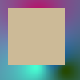
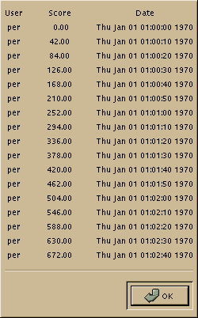

| 15. Graphic User Interface |
Module GTK
-
- Inherit
GTKSupport
inherit GTKSupport : GTKSupport
- Constant
FALSE
constant GTK.FALSE
- Constant
GDK_ACTION_ASK
constant GTK.GDK_ACTION_ASK
- Constant
GDK_ACTION_COPY
constant GTK.GDK_ACTION_COPY
- Constant
GDK_ACTION_DEFAULT
constant GTK.GDK_ACTION_DEFAULT
- Constant
GDK_ACTION_LINK
constant GTK.GDK_ACTION_LINK
- Constant
GDK_ACTION_MOVE
constant GTK.GDK_ACTION_MOVE
- Constant
GDK_ACTION_PRIVATE
constant GTK.GDK_ACTION_PRIVATE
- Constant
GDK_ALL_EVENTS_MASK
constant GTK.GDK_ALL_EVENTS_MASK
- Constant
GDK_AND
constant GTK.GDK_AND
- Constant
GDK_AND_INVERT
constant GTK.GDK_AND_INVERT
- Constant
GDK_AND_REVERSE
constant GTK.GDK_AND_REVERSE
- Constant
GDK_ARROW
constant GTK.GDK_ARROW
- Constant
GDK_BASED_ARROW_DOWN
constant GTK.GDK_BASED_ARROW_DOWN
- Constant
GDK_BASED_ARROW_UP
constant GTK.GDK_BASED_ARROW_UP
- Constant
GDK_BOAT
constant GTK.GDK_BOAT
- Constant
GDK_BOGOSITY
constant GTK.GDK_BOGOSITY
- Constant
GDK_BOTTOM_LEFT_CORNER
constant GTK.GDK_BOTTOM_LEFT_CORNER
- Constant
GDK_BOTTOM_RIGHT_CORNER
constant GTK.GDK_BOTTOM_RIGHT_CORNER
- Constant
GDK_BOTTOM_SIDE
constant GTK.GDK_BOTTOM_SIDE
- Constant
GDK_BOTTOM_TEE
constant GTK.GDK_BOTTOM_TEE
- Constant
GDK_BOX_SPIRAL
constant GTK.GDK_BOX_SPIRAL
- Constant
GDK_BUTTON1_MASK
constant GTK.GDK_BUTTON1_MASK
- Constant
GDK_BUTTON1_MOTION_MASK
constant GTK.GDK_BUTTON1_MOTION_MASK
- Constant
GDK_BUTTON2_MASK
constant GTK.GDK_BUTTON2_MASK
- Constant
GDK_BUTTON2_MOTION_MASK
constant GTK.GDK_BUTTON2_MOTION_MASK
- Constant
GDK_BUTTON3_MASK
constant GTK.GDK_BUTTON3_MASK
- Constant
GDK_BUTTON3_MOTION_MASK
constant GTK.GDK_BUTTON3_MOTION_MASK
- Constant
GDK_BUTTON_MOTION_MASK
constant GTK.GDK_BUTTON_MOTION_MASK
- Constant
GDK_BUTTON_PRESS_MASK
constant GTK.GDK_BUTTON_PRESS_MASK
- Constant
GDK_BUTTON_RELEASE_MASK
constant GTK.GDK_BUTTON_RELEASE_MASK
- Constant
GDK_CAP_BUTT
constant GTK.GDK_CAP_BUTT
- Constant
GDK_CAP_NOT_LAST
constant GTK.GDK_CAP_NOT_LAST
- Constant
GDK_CAP_PROJECTING
constant GTK.GDK_CAP_PROJECTING
- Constant
GDK_CAP_ROUND
constant GTK.GDK_CAP_ROUND
- Constant
GDK_CENTER_PTR
constant GTK.GDK_CENTER_PTR
- Constant
GDK_CIRCLE
constant GTK.GDK_CIRCLE
- Constant
GDK_CLEAR
constant GTK.GDK_CLEAR
- Constant
GDK_CLOCK
constant GTK.GDK_CLOCK
- Constant
GDK_COFFEE_MUG
constant GTK.GDK_COFFEE_MUG
- Constant
GDK_CONTROL_MASK
constant GTK.GDK_CONTROL_MASK
- Constant
GDK_COPY
constant GTK.GDK_COPY
- Constant
GDK_COPY_INVERT
constant GTK.GDK_COPY_INVERT
- Constant
GDK_CROSS
constant GTK.GDK_CROSS
- Constant
GDK_CROSSHAIR
constant GTK.GDK_CROSSHAIR
- Constant
GDK_CROSS_REVERSE
constant GTK.GDK_CROSS_REVERSE
- Constant
GDK_DECOR_ALL
constant GTK.GDK_DECOR_ALL
- Constant
GDK_DECOR_BORDER
constant GTK.GDK_DECOR_BORDER
- Constant
GDK_DECOR_MAXIMIZE
constant GTK.GDK_DECOR_MAXIMIZE
- Constant
GDK_DECOR_MENU
constant GTK.GDK_DECOR_MENU
- Constant
GDK_DECOR_MINIMIZE
constant GTK.GDK_DECOR_MINIMIZE
- Constant
GDK_DECOR_RESIZEH
constant GTK.GDK_DECOR_RESIZEH
- Constant
GDK_DECOR_TITLE
constant GTK.GDK_DECOR_TITLE
- Constant
GDK_DIAMOND_CROSS
constant GTK.GDK_DIAMOND_CROSS
- Constant
GDK_DOT
constant GTK.GDK_DOT
- Constant
GDK_DOTBOX
constant GTK.GDK_DOTBOX
- Constant
GDK_DOUBLE_ARROW
constant GTK.GDK_DOUBLE_ARROW
- Constant
GDK_DRAFT_LARGE
constant GTK.GDK_DRAFT_LARGE
- Constant
GDK_DRAFT_SMALL
constant GTK.GDK_DRAFT_SMALL
- Constant
GDK_DRAG_PROTO_MOTIF
constant GTK.GDK_DRAG_PROTO_MOTIF
- Constant
GDK_DRAG_PROTO_ROOTWIN
constant GTK.GDK_DRAG_PROTO_ROOTWIN
- Constant
GDK_DRAG_PROTO_XDND
constant GTK.GDK_DRAG_PROTO_XDND
- Constant
GDK_DRAPED_BOX
constant GTK.GDK_DRAPED_BOX
- Constant
GDK_ENTER_NOTIFY_MASK
constant GTK.GDK_ENTER_NOTIFY_MASK
- Constant
GDK_EQUIV
constant GTK.GDK_EQUIV
- Constant
GDK_EVEN_ODD_RULE
constant GTK.GDK_EVEN_ODD_RULE
- Constant
GDK_EXCHANGE
constant GTK.GDK_EXCHANGE
- Constant
GDK_EXPOSURE_MASK
constant GTK.GDK_EXPOSURE_MASK
- Constant
GDK_EXTENSION_EVENTS_ALL
constant GTK.GDK_EXTENSION_EVENTS_ALL
- Constant
GDK_EXTENSION_EVENTS_CURSOR
constant GTK.GDK_EXTENSION_EVENTS_CURSOR
- Constant
GDK_EXTENSION_EVENTS_NONE
constant GTK.GDK_EXTENSION_EVENTS_NONE
- Constant
GDK_FLEUR
constant GTK.GDK_FLEUR
- Constant
GDK_FOCUS_CHANGE_MASK
constant GTK.GDK_FOCUS_CHANGE_MASK
- Constant
GDK_FUNC_ALL
constant GTK.GDK_FUNC_ALL
- Constant
GDK_FUNC_CLOSE
constant GTK.GDK_FUNC_CLOSE
- Constant
GDK_FUNC_MAXIMIZE
constant GTK.GDK_FUNC_MAXIMIZE
- Constant
GDK_FUNC_MINIMIZE
constant GTK.GDK_FUNC_MINIMIZE
- Constant
GDK_FUNC_MOVE
constant GTK.GDK_FUNC_MOVE
- Constant
GDK_FUNC_RESIZE
constant GTK.GDK_FUNC_RESIZE
- Constant
GDK_GL_ACCUM_ALPHA_SIZE
constant GTK.GDK_GL_ACCUM_ALPHA_SIZE
- Constant
GDK_GL_ACCUM_BLUE_SIZE
constant GTK.GDK_GL_ACCUM_BLUE_SIZE
- Constant
GDK_GL_ACCUM_GREEN_SIZE
constant GTK.GDK_GL_ACCUM_GREEN_SIZE
- Constant
GDK_GL_ACCUM_RED_SIZE
constant GTK.GDK_GL_ACCUM_RED_SIZE
- Constant
GDK_GL_ALPHA_SIZE
constant GTK.GDK_GL_ALPHA_SIZE
- Constant
GDK_GL_AUX_BUFFERS
constant GTK.GDK_GL_AUX_BUFFERS
- Constant
GDK_GL_BLUE_SIZE
constant GTK.GDK_GL_BLUE_SIZE
- Constant
GDK_GL_BUFFER_SIZE
constant GTK.GDK_GL_BUFFER_SIZE
- Constant
GDK_GL_DEPTH_SIZE
constant GTK.GDK_GL_DEPTH_SIZE
- Constant
GDK_GL_DOUBLEBUFFER
constant GTK.GDK_GL_DOUBLEBUFFER
- Constant
GDK_GL_GREEN_SIZE
constant GTK.GDK_GL_GREEN_SIZE
- Constant
GDK_GL_LEVEL
constant GTK.GDK_GL_LEVEL
- Constant
GDK_GL_NONE
constant GTK.GDK_GL_NONE
- Constant
GDK_GL_RED_SIZE
constant GTK.GDK_GL_RED_SIZE
- Constant
GDK_GL_RGBA
constant GTK.GDK_GL_RGBA
- Constant
GDK_GL_STENCIL_SIZE
constant GTK.GDK_GL_STENCIL_SIZE
- Constant
GDK_GL_STEREO
constant GTK.GDK_GL_STEREO
- Constant
GDK_GL_TRANSPARENT_ALPHA_VALUE_EXT
constant GTK.GDK_GL_TRANSPARENT_ALPHA_VALUE_EXT
- Constant
GDK_GL_TRANSPARENT_BLUE_VALUE_EXT
constant GTK.GDK_GL_TRANSPARENT_BLUE_VALUE_EXT
- Constant
GDK_GL_TRANSPARENT_GREEN_VALUE_EXT
constant GTK.GDK_GL_TRANSPARENT_GREEN_VALUE_EXT
- Constant
GDK_GL_TRANSPARENT_INDEX_VALUE_EXT
constant GTK.GDK_GL_TRANSPARENT_INDEX_VALUE_EXT
- Constant
GDK_GL_TRANSPARENT_RED_VALUE_EXT
constant GTK.GDK_GL_TRANSPARENT_RED_VALUE_EXT
- Constant
GDK_GL_TRANSPARENT_TYPE_EXT
constant GTK.GDK_GL_TRANSPARENT_TYPE_EXT
- Constant
GDK_GL_USE_GL
constant GTK.GDK_GL_USE_GL
- Constant
GDK_GL_X_VISUAL_TYPE_EXT
constant GTK.GDK_GL_X_VISUAL_TYPE_EXT
- Constant
GDK_GOBBLER
constant GTK.GDK_GOBBLER
- Constant
GDK_GUMBY
constant GTK.GDK_GUMBY
- Constant
GDK_HAND1
constant GTK.GDK_HAND1
- Constant
GDK_HAND2
constant GTK.GDK_HAND2
- Constant
GDK_HEART
constant GTK.GDK_HEART
- Constant
GDK_ICON
constant GTK.GDK_ICON
- Constant
GDK_IM_PREEDIT_AREA
constant GTK.GDK_IM_PREEDIT_AREA
- Constant
GDK_IM_PREEDIT_CALLBACKS
constant GTK.GDK_IM_PREEDIT_CALLBACKS
- Constant
GDK_IM_PREEDIT_MASK
constant GTK.GDK_IM_PREEDIT_MASK
- Constant
GDK_IM_PREEDIT_NONE
constant GTK.GDK_IM_PREEDIT_NONE
- Constant
GDK_IM_PREEDIT_NOTHING
constant GTK.GDK_IM_PREEDIT_NOTHING
- Constant
GDK_IM_PREEDIT_POSITION
constant GTK.GDK_IM_PREEDIT_POSITION
- Constant
GDK_IM_STATUS_AREA
constant GTK.GDK_IM_STATUS_AREA
- Constant
GDK_IM_STATUS_CALLBACKS
constant GTK.GDK_IM_STATUS_CALLBACKS
- Constant
GDK_IM_STATUS_MASK
constant GTK.GDK_IM_STATUS_MASK
- Constant
GDK_IM_STATUS_NONE
constant GTK.GDK_IM_STATUS_NONE
- Constant
GDK_IM_STATUS_NOTHING
constant GTK.GDK_IM_STATUS_NOTHING
- Constant
GDK_INVERT
constant GTK.GDK_INVERT
- Constant
GDK_IRON_CROSS
constant GTK.GDK_IRON_CROSS
- Constant
GDK_JOIN_BEVEL
constant GTK.GDK_JOIN_BEVEL
- Constant
GDK_JOIN_MITER
constant GTK.GDK_JOIN_MITER
- Constant
GDK_JOIN_ROUND
constant GTK.GDK_JOIN_ROUND
- Constant
GDK_KEY_PRESS_MASK
constant GTK.GDK_KEY_PRESS_MASK
- Constant
GDK_KEY_RELEASE_MASK
constant GTK.GDK_KEY_RELEASE_MASK
- Constant
GDK_LEAVE_NOTIFY_MASK
constant GTK.GDK_LEAVE_NOTIFY_MASK
- Constant
GDK_LEFTBUTTON
constant GTK.GDK_LEFTBUTTON
- Constant
GDK_LEFT_PTR
constant GTK.GDK_LEFT_PTR
- Constant
GDK_LEFT_SIDE
constant GTK.GDK_LEFT_SIDE
- Constant
GDK_LEFT_TEE
constant GTK.GDK_LEFT_TEE
- Constant
GDK_LINE_DOUBLE_DASH
constant GTK.GDK_LINE_DOUBLE_DASH
- Constant
GDK_LINE_ON_OFF_DASH
constant GTK.GDK_LINE_ON_OFF_DASH
- Constant
GDK_LINE_SOLID
constant GTK.GDK_LINE_SOLID
- Constant
GDK_LL_ANGLE
constant GTK.GDK_LL_ANGLE
- Constant
GDK_LOCK_MASK
constant GTK.GDK_LOCK_MASK
- Constant
GDK_LR_ANGLE
constant GTK.GDK_LR_ANGLE
- Constant
GDK_MAN
constant GTK.GDK_MAN
- Constant
GDK_MIDDLEBUTTON
constant GTK.GDK_MIDDLEBUTTON
- Constant
GDK_MOD1_MASK
constant GTK.GDK_MOD1_MASK
- Constant
GDK_MOD2_MASK
constant GTK.GDK_MOD2_MASK
- Constant
GDK_MOD3_MASK
constant GTK.GDK_MOD3_MASK
- Constant
GDK_MOD4_MASK
constant GTK.GDK_MOD4_MASK
- Constant
GDK_MOD5_MASK
constant GTK.GDK_MOD5_MASK
- Constant
GDK_MOUSE
constant GTK.GDK_MOUSE
- Constant
GDK_NAND
constant GTK.GDK_NAND
- Constant
GDK_NOOP
constant GTK.GDK_NOOP
- Constant
GDK_OPAQUE_STIPPLED
constant GTK.GDK_OPAQUE_STIPPLED
- Constant
GDK_OR
constant GTK.GDK_OR
- Constant
GDK_OR_INVERT
constant GTK.GDK_OR_INVERT
- Constant
GDK_OR_REVERSE
constant GTK.GDK_OR_REVERSE
- Constant
GDK_OVERLAP_RECTANGLE_IN
constant GTK.GDK_OVERLAP_RECTANGLE_IN
- Constant
GDK_OVERLAP_RECTANGLE_OUT
constant GTK.GDK_OVERLAP_RECTANGLE_OUT
- Constant
GDK_OVERLAP_RECTANGLE_PART
constant GTK.GDK_OVERLAP_RECTANGLE_PART
- Constant
GDK_PENCIL
constant GTK.GDK_PENCIL
- Constant
GDK_PIRATE
constant GTK.GDK_PIRATE
- Constant
GDK_PLUS
constant GTK.GDK_PLUS
- Constant
GDK_POINTER_MOTION_HINT_MASK
constant GTK.GDK_POINTER_MOTION_HINT_MASK
- Constant
GDK_POINTER_MOTION_MASK
constant GTK.GDK_POINTER_MOTION_MASK
- Constant
GDK_PROPERTY_CHANGE_MASK
constant GTK.GDK_PROPERTY_CHANGE_MASK
- Constant
GDK_PROP_MODE_APPEND
constant GTK.GDK_PROP_MODE_APPEND
- Constant
GDK_PROP_MODE_PREPEND
constant GTK.GDK_PROP_MODE_PREPEND
- Constant
GDK_PROP_MODE_REPLACE
constant GTK.GDK_PROP_MODE_REPLACE
- Constant
GDK_PROXIMITY_IN_MASK
constant GTK.GDK_PROXIMITY_IN_MASK
- Constant
GDK_PROXIMITY_OUT_MASK
constant GTK.GDK_PROXIMITY_OUT_MASK
- Constant
GDK_QUESTION_ARROW
constant GTK.GDK_QUESTION_ARROW
- Constant
GDK_RIGHTBUTTON
constant GTK.GDK_RIGHTBUTTON
- Constant
GDK_RIGHT_PTR
constant GTK.GDK_RIGHT_PTR
- Constant
GDK_RIGHT_SIDE
constant GTK.GDK_RIGHT_SIDE
- Constant
GDK_RIGHT_TEE
constant GTK.GDK_RIGHT_TEE
- Constant
GDK_RTL_LOGO
constant GTK.GDK_RTL_LOGO
- Constant
GDK_SAILBOAT
constant GTK.GDK_SAILBOAT
- Constant
GDK_SB_DOWN_ARROW
constant GTK.GDK_SB_DOWN_ARROW
- Constant
GDK_SB_H_DOUBLE_ARROW
constant GTK.GDK_SB_H_DOUBLE_ARROW
- Constant
GDK_SB_LEFT_ARROW
constant GTK.GDK_SB_LEFT_ARROW
- Constant
GDK_SB_RIGHT_ARROW
constant GTK.GDK_SB_RIGHT_ARROW
- Constant
GDK_SB_UP_ARROW
constant GTK.GDK_SB_UP_ARROW
- Constant
GDK_SB_V_DOUBLE_ARROW
constant GTK.GDK_SB_V_DOUBLE_ARROW
- Constant
GDK_SELECTION_TYPE_ATOM
constant GTK.GDK_SELECTION_TYPE_ATOM
- Constant
GDK_SELECTION_TYPE_BITMAP
constant GTK.GDK_SELECTION_TYPE_BITMAP
- Constant
GDK_SELECTION_TYPE_COLORMAP
constant GTK.GDK_SELECTION_TYPE_COLORMAP
- Constant
GDK_SELECTION_TYPE_DRAWABLE
constant GTK.GDK_SELECTION_TYPE_DRAWABLE
- Constant
GDK_SELECTION_TYPE_INTEGER
constant GTK.GDK_SELECTION_TYPE_INTEGER
- Constant
GDK_SELECTION_TYPE_PIXMAP
constant GTK.GDK_SELECTION_TYPE_PIXMAP
- Constant
GDK_SELECTION_TYPE_STRING
constant GTK.GDK_SELECTION_TYPE_STRING
- Constant
GDK_SELECTION_TYPE_WINDOW
constant GTK.GDK_SELECTION_TYPE_WINDOW
- Constant
GDK_SET
constant GTK.GDK_SET
- Constant
GDK_SHIFT_MASK
constant GTK.GDK_SHIFT_MASK
- Constant
GDK_SHUTTLE
constant GTK.GDK_SHUTTLE
- Constant
GDK_SIZING
constant GTK.GDK_SIZING
- Constant
GDK_SOLID
constant GTK.GDK_SOLID
- Constant
GDK_SPIDER
constant GTK.GDK_SPIDER
- Constant
GDK_SPRAYCAN
constant GTK.GDK_SPRAYCAN
- Constant
GDK_STAR
constant GTK.GDK_STAR
- Constant
GDK_STIPPLED
constant GTK.GDK_STIPPLED
- Constant
GDK_STRUCTURE_MASK
constant GTK.GDK_STRUCTURE_MASK
- Constant
GDK_TARGET
constant GTK.GDK_TARGET
- Constant
GDK_TARGET_BITMAP
constant GTK.GDK_TARGET_BITMAP
- Constant
GDK_TARGET_COLORMAP
constant GTK.GDK_TARGET_COLORMAP
- Constant
GDK_TARGET_DRAWABLE
constant GTK.GDK_TARGET_DRAWABLE
- Constant
GDK_TARGET_PIXMAP
constant GTK.GDK_TARGET_PIXMAP
- Constant
GDK_TARGET_STRING
constant GTK.GDK_TARGET_STRING
- Constant
GDK_TCROSS
constant GTK.GDK_TCROSS
- Constant
GDK_TILED
constant GTK.GDK_TILED
- Constant
GDK_TOP_LEFT_ARROW
constant GTK.GDK_TOP_LEFT_ARROW
- Constant
GDK_TOP_LEFT_CORNER
constant GTK.GDK_TOP_LEFT_CORNER
- Constant
GDK_TOP_RIGHT_CORNER
constant GTK.GDK_TOP_RIGHT_CORNER
- Constant
GDK_TOP_SIDE
constant GTK.GDK_TOP_SIDE
- Constant
GDK_TOP_TEE
constant GTK.GDK_TOP_TEE
- Constant
GDK_TREK
constant GTK.GDK_TREK
- Constant
GDK_UL_ANGLE
constant GTK.GDK_UL_ANGLE
- Constant
GDK_UMBRELLA
constant GTK.GDK_UMBRELLA
- Constant
GDK_UR_ANGLE
constant GTK.GDK_UR_ANGLE
- Constant
GDK_VISIBILITY_NOTIFY_MASK
constant GTK.GDK_VISIBILITY_NOTIFY_MASK
- Constant
GDK_WATCH
constant GTK.GDK_WATCH
- Constant
GDK_WINDING_RULE
constant GTK.GDK_WINDING_RULE
- Constant
GDK_WINDOW_CHILD
constant GTK.GDK_WINDOW_CHILD
- Constant
GDK_WINDOW_DIALOG
constant GTK.GDK_WINDOW_DIALOG
- Constant
GDK_WINDOW_FOREIGN
constant GTK.GDK_WINDOW_FOREIGN
- Constant
GDK_WINDOW_ROOT
constant GTK.GDK_WINDOW_ROOT
- Constant
GDK_WINDOW_TEMP
constant GTK.GDK_WINDOW_TEMP
- Constant
GDK_WINDOW_TOPLEVEL
constant GTK.GDK_WINDOW_TOPLEVEL
- Constant
GDK_XOR
constant GTK.GDK_XOR
- Constant
GDK_XTERM
constant GTK.GDK_XTERM
- Constant
GNOME_DOCK_BOTTOM
constant GTK.GNOME_DOCK_BOTTOM
- Constant
GNOME_DOCK_ITEM_BEH_EXCLUSIVE
constant GTK.GNOME_DOCK_ITEM_BEH_EXCLUSIVE
- Constant
GNOME_DOCK_ITEM_BEH_LOCKED
constant GTK.GNOME_DOCK_ITEM_BEH_LOCKED
- Constant
GNOME_DOCK_ITEM_BEH_NEVER_FLOATING
constant GTK.GNOME_DOCK_ITEM_BEH_NEVER_FLOATING
- Constant
GNOME_DOCK_ITEM_BEH_NEVER_HORIZONTAL
constant GTK.GNOME_DOCK_ITEM_BEH_NEVER_HORIZONTAL
- Constant
GNOME_DOCK_ITEM_BEH_NEVER_VERTICAL
constant GTK.GNOME_DOCK_ITEM_BEH_NEVER_VERTICAL
- Constant
GNOME_DOCK_ITEM_BEH_NORMAL
constant GTK.GNOME_DOCK_ITEM_BEH_NORMAL
- Constant
GNOME_DOCK_LEFT
constant GTK.GNOME_DOCK_LEFT
- Constant
GNOME_DOCK_RIGHT
constant GTK.GNOME_DOCK_RIGHT
- Constant
GNOME_DOCK_TOP
constant GTK.GNOME_DOCK_TOP
- Constant
GNOME_FONT_PICKER_MODE_FONT_INFO
constant GTK.GNOME_FONT_PICKER_MODE_FONT_INFO
- Constant
GNOME_FONT_PICKER_MODE_PIXMAP
constant GTK.GNOME_FONT_PICKER_MODE_PIXMAP
- Constant
GNOME_FONT_PICKER_MODE_UNKNOWN
constant GTK.GNOME_FONT_PICKER_MODE_UNKNOWN
- Constant
GNOME_FONT_PICKER_MODE_USER_WIDGET
constant GTK.GNOME_FONT_PICKER_MODE_USER_WIDGET
- Constant
GNOME_ICON_LIST_ICONS
constant GTK.GNOME_ICON_LIST_ICONS
- Constant
GNOME_ICON_LIST_IS_EDITABLE
constant GTK.GNOME_ICON_LIST_IS_EDITABLE
- Constant
GNOME_ICON_LIST_STATIC_TEXT
constant GTK.GNOME_ICON_LIST_STATIC_TEXT
- Constant
GNOME_ICON_LIST_TEXT_BELOW
constant GTK.GNOME_ICON_LIST_TEXT_BELOW
- Constant
GNOME_ICON_LIST_TEXT_RIGHT
constant GTK.GNOME_ICON_LIST_TEXT_RIGHT
- Constant
GNOME_MESSAGE_BOX_ERROR
constant GTK.GNOME_MESSAGE_BOX_ERROR
- Constant
GNOME_MESSAGE_BOX_GENERIC
constant GTK.GNOME_MESSAGE_BOX_GENERIC
- Constant
GNOME_MESSAGE_BOX_INFO
constant GTK.GNOME_MESSAGE_BOX_INFO
- Constant
GNOME_MESSAGE_BOX_QUESTION
constant GTK.GNOME_MESSAGE_BOX_QUESTION
- Constant
GNOME_MESSAGE_BOX_WARNING
constant GTK.GNOME_MESSAGE_BOX_WARNING
- Constant
GNOME_PREFERENCES_ALWAYS
constant GTK.GNOME_PREFERENCES_ALWAYS
- Constant
GNOME_PREFERENCES_NEVER
constant GTK.GNOME_PREFERENCES_NEVER
- Constant
GNOME_PREFERENCES_USER
constant GTK.GNOME_PREFERENCES_USER
- Constant
GNOME_Panel_ORIENT_DOWN
constant GTK.GNOME_Panel_ORIENT_DOWN
- Constant
GNOME_Panel_ORIENT_LEFT
constant GTK.GNOME_Panel_ORIENT_LEFT
- Constant
GNOME_Panel_ORIENT_RIGHT
constant GTK.GNOME_Panel_ORIENT_RIGHT
- Constant
GNOME_Panel_ORIENT_UP
constant GTK.GNOME_Panel_ORIENT_UP
- Constant
GNOME_STOCK_BUTTON_APPLY
constant GTK.GNOME_STOCK_BUTTON_APPLY
- Constant
GNOME_STOCK_BUTTON_CANCEL
constant GTK.GNOME_STOCK_BUTTON_CANCEL
- Constant
GNOME_STOCK_BUTTON_CLOSE
constant GTK.GNOME_STOCK_BUTTON_CLOSE
- Constant
GNOME_STOCK_BUTTON_DOWN
constant GTK.GNOME_STOCK_BUTTON_DOWN
- Constant
GNOME_STOCK_BUTTON_FONT
constant GTK.GNOME_STOCK_BUTTON_FONT
- Constant
GNOME_STOCK_BUTTON_HELP
constant GTK.GNOME_STOCK_BUTTON_HELP
- Constant
GNOME_STOCK_BUTTON_NEXT
constant GTK.GNOME_STOCK_BUTTON_NEXT
- Constant
GNOME_STOCK_BUTTON_NO
constant GTK.GNOME_STOCK_BUTTON_NO
- Constant
GNOME_STOCK_BUTTON_OK
constant GTK.GNOME_STOCK_BUTTON_OK
- Constant
GNOME_STOCK_BUTTON_PREV
constant GTK.GNOME_STOCK_BUTTON_PREV
- Constant
GNOME_STOCK_BUTTON_UP
constant GTK.GNOME_STOCK_BUTTON_UP
- Constant
GNOME_STOCK_BUTTON_YES
constant GTK.GNOME_STOCK_BUTTON_YES
- Constant
GNOME_STOCK_MENU_ABOUT
constant GTK.GNOME_STOCK_MENU_ABOUT
- Constant
GNOME_STOCK_MENU_ALIGN_CENTER
constant GTK.GNOME_STOCK_MENU_ALIGN_CENTER
- Constant
GNOME_STOCK_MENU_ALIGN_JUSTIFY
constant GTK.GNOME_STOCK_MENU_ALIGN_JUSTIFY
- Constant
GNOME_STOCK_MENU_ALIGN_LEFT
constant GTK.GNOME_STOCK_MENU_ALIGN_LEFT
- Constant
GNOME_STOCK_MENU_ALIGN_RIGHT
constant GTK.GNOME_STOCK_MENU_ALIGN_RIGHT
- Constant
GNOME_STOCK_MENU_ATTACH
constant GTK.GNOME_STOCK_MENU_ATTACH
- Constant
GNOME_STOCK_MENU_BACK
constant GTK.GNOME_STOCK_MENU_BACK
- Constant
GNOME_STOCK_MENU_BLANK
constant GTK.GNOME_STOCK_MENU_BLANK
- Constant
GNOME_STOCK_MENU_BOOK_BLUE
constant GTK.GNOME_STOCK_MENU_BOOK_BLUE
- Constant
GNOME_STOCK_MENU_BOOK_GREEN
constant GTK.GNOME_STOCK_MENU_BOOK_GREEN
- Constant
GNOME_STOCK_MENU_BOOK_OPEN
constant GTK.GNOME_STOCK_MENU_BOOK_OPEN
- Constant
GNOME_STOCK_MENU_BOOK_RED
constant GTK.GNOME_STOCK_MENU_BOOK_RED
- Constant
GNOME_STOCK_MENU_BOOK_YELLOW
constant GTK.GNOME_STOCK_MENU_BOOK_YELLOW
- Constant
GNOME_STOCK_MENU_BOTTOM
constant GTK.GNOME_STOCK_MENU_BOTTOM
- Constant
GNOME_STOCK_MENU_CDROM
constant GTK.GNOME_STOCK_MENU_CDROM
- Constant
GNOME_STOCK_MENU_CLOSE
constant GTK.GNOME_STOCK_MENU_CLOSE
- Constant
GNOME_STOCK_MENU_CONVERT
constant GTK.GNOME_STOCK_MENU_CONVERT
- Constant
GNOME_STOCK_MENU_COPY
constant GTK.GNOME_STOCK_MENU_COPY
- Constant
GNOME_STOCK_MENU_CUT
constant GTK.GNOME_STOCK_MENU_CUT
- Constant
GNOME_STOCK_MENU_DOWN
constant GTK.GNOME_STOCK_MENU_DOWN
- Constant
GNOME_STOCK_MENU_EXEC
constant GTK.GNOME_STOCK_MENU_EXEC
- Constant
GNOME_STOCK_MENU_EXIT
constant GTK.GNOME_STOCK_MENU_EXIT
- Constant
GNOME_STOCK_MENU_FIRST
constant GTK.GNOME_STOCK_MENU_FIRST
- Constant
GNOME_STOCK_MENU_FONT
constant GTK.GNOME_STOCK_MENU_FONT
- Constant
GNOME_STOCK_MENU_FORWARD
constant GTK.GNOME_STOCK_MENU_FORWARD
- Constant
GNOME_STOCK_MENU_HOME
constant GTK.GNOME_STOCK_MENU_HOME
- Constant
GNOME_STOCK_MENU_INDEX
constant GTK.GNOME_STOCK_MENU_INDEX
- Constant
GNOME_STOCK_MENU_JUMP_TO
constant GTK.GNOME_STOCK_MENU_JUMP_TO
- Constant
GNOME_STOCK_MENU_LAST
constant GTK.GNOME_STOCK_MENU_LAST
- Constant
GNOME_STOCK_MENU_LINE_IN
constant GTK.GNOME_STOCK_MENU_LINE_IN
- Constant
GNOME_STOCK_MENU_MAIL
constant GTK.GNOME_STOCK_MENU_MAIL
- Constant
GNOME_STOCK_MENU_MAIL_FWD
constant GTK.GNOME_STOCK_MENU_MAIL_FWD
- Constant
GNOME_STOCK_MENU_MAIL_NEW
constant GTK.GNOME_STOCK_MENU_MAIL_NEW
- Constant
GNOME_STOCK_MENU_MAIL_RCV
constant GTK.GNOME_STOCK_MENU_MAIL_RCV
- Constant
GNOME_STOCK_MENU_MAIL_RPL
constant GTK.GNOME_STOCK_MENU_MAIL_RPL
- Constant
GNOME_STOCK_MENU_MAIL_SND
constant GTK.GNOME_STOCK_MENU_MAIL_SND
- Constant
GNOME_STOCK_MENU_MIC
constant GTK.GNOME_STOCK_MENU_MIC
- Constant
GNOME_STOCK_MENU_MIDI
constant GTK.GNOME_STOCK_MENU_MIDI
- Constant
GNOME_STOCK_MENU_NEW
constant GTK.GNOME_STOCK_MENU_NEW
- Constant
GNOME_STOCK_MENU_OPEN
constant GTK.GNOME_STOCK_MENU_OPEN
- Constant
GNOME_STOCK_MENU_PASTE
constant GTK.GNOME_STOCK_MENU_PASTE
- Constant
GNOME_STOCK_MENU_PREF
constant GTK.GNOME_STOCK_MENU_PREF
- Constant
GNOME_STOCK_MENU_PRINT
constant GTK.GNOME_STOCK_MENU_PRINT
- Constant
GNOME_STOCK_MENU_PROP
constant GTK.GNOME_STOCK_MENU_PROP
- Constant
GNOME_STOCK_MENU_QUIT
constant GTK.GNOME_STOCK_MENU_QUIT
- Constant
GNOME_STOCK_MENU_REDO
constant GTK.GNOME_STOCK_MENU_REDO
- Constant
GNOME_STOCK_MENU_REFRESH
constant GTK.GNOME_STOCK_MENU_REFRESH
- Constant
GNOME_STOCK_MENU_REVERT
constant GTK.GNOME_STOCK_MENU_REVERT
- Constant
GNOME_STOCK_MENU_SAVE
constant GTK.GNOME_STOCK_MENU_SAVE
- Constant
GNOME_STOCK_MENU_SAVE_AS
constant GTK.GNOME_STOCK_MENU_SAVE_AS
- Constant
GNOME_STOCK_MENU_SCORES
constant GTK.GNOME_STOCK_MENU_SCORES
- Constant
GNOME_STOCK_MENU_SEARCH
constant GTK.GNOME_STOCK_MENU_SEARCH
- Constant
GNOME_STOCK_MENU_SPELLCHECK
constant GTK.GNOME_STOCK_MENU_SPELLCHECK
- Constant
GNOME_STOCK_MENU_SRCHRPL
constant GTK.GNOME_STOCK_MENU_SRCHRPL
- Constant
GNOME_STOCK_MENU_STOP
constant GTK.GNOME_STOCK_MENU_STOP
- Constant
GNOME_STOCK_MENU_TEXT_BOLD
constant GTK.GNOME_STOCK_MENU_TEXT_BOLD
- Constant
GNOME_STOCK_MENU_TEXT_ITALIC
constant GTK.GNOME_STOCK_MENU_TEXT_ITALIC
- Constant
GNOME_STOCK_MENU_TEXT_STRIKEOUT
constant GTK.GNOME_STOCK_MENU_TEXT_STRIKEOUT
- Constant
GNOME_STOCK_MENU_TEXT_UNDERLINE
constant GTK.GNOME_STOCK_MENU_TEXT_UNDERLINE
- Constant
GNOME_STOCK_MENU_TIMER
constant GTK.GNOME_STOCK_MENU_TIMER
- Constant
GNOME_STOCK_MENU_TIMER_STOP
constant GTK.GNOME_STOCK_MENU_TIMER_STOP
- Constant
GNOME_STOCK_MENU_TOP
constant GTK.GNOME_STOCK_MENU_TOP
- Constant
GNOME_STOCK_MENU_TRASH
constant GTK.GNOME_STOCK_MENU_TRASH
- Constant
GNOME_STOCK_MENU_TRASH_FULL
constant GTK.GNOME_STOCK_MENU_TRASH_FULL
- Constant
GNOME_STOCK_MENU_UNDELETE
constant GTK.GNOME_STOCK_MENU_UNDELETE
- Constant
GNOME_STOCK_MENU_UNDO
constant GTK.GNOME_STOCK_MENU_UNDO
- Constant
GNOME_STOCK_MENU_UP
constant GTK.GNOME_STOCK_MENU_UP
- Constant
GNOME_STOCK_MENU_VOLUME
constant GTK.GNOME_STOCK_MENU_VOLUME
- Constant
GNOME_STOCK_PIXMAP_ABOUT
constant GTK.GNOME_STOCK_PIXMAP_ABOUT
- Constant
GNOME_STOCK_PIXMAP_ADD
constant GTK.GNOME_STOCK_PIXMAP_ADD
- Constant
GNOME_STOCK_PIXMAP_ALIGN_CENTER
constant GTK.GNOME_STOCK_PIXMAP_ALIGN_CENTER
- Constant
GNOME_STOCK_PIXMAP_ALIGN_JUSTIFY
constant GTK.GNOME_STOCK_PIXMAP_ALIGN_JUSTIFY
- Constant
GNOME_STOCK_PIXMAP_ALIGN_LEFT
constant GTK.GNOME_STOCK_PIXMAP_ALIGN_LEFT
- Constant
GNOME_STOCK_PIXMAP_ALIGN_RIGHT
constant GTK.GNOME_STOCK_PIXMAP_ALIGN_RIGHT
- Constant
GNOME_STOCK_PIXMAP_ATTACH
constant GTK.GNOME_STOCK_PIXMAP_ATTACH
- Constant
GNOME_STOCK_PIXMAP_BACK
constant GTK.GNOME_STOCK_PIXMAP_BACK
- Constant
GNOME_STOCK_PIXMAP_BOOK_BLUE
constant GTK.GNOME_STOCK_PIXMAP_BOOK_BLUE
- Constant
GNOME_STOCK_PIXMAP_BOOK_GREEN
constant GTK.GNOME_STOCK_PIXMAP_BOOK_GREEN
- Constant
GNOME_STOCK_PIXMAP_BOOK_OPEN
constant GTK.GNOME_STOCK_PIXMAP_BOOK_OPEN
- Constant
GNOME_STOCK_PIXMAP_BOOK_RED
constant GTK.GNOME_STOCK_PIXMAP_BOOK_RED
- Constant
GNOME_STOCK_PIXMAP_BOOK_YELLOW
constant GTK.GNOME_STOCK_PIXMAP_BOOK_YELLOW
- Constant
GNOME_STOCK_PIXMAP_BOTTOM
constant GTK.GNOME_STOCK_PIXMAP_BOTTOM
- Constant
GNOME_STOCK_PIXMAP_CDROM
constant GTK.GNOME_STOCK_PIXMAP_CDROM
- Constant
GNOME_STOCK_PIXMAP_CLEAR
constant GTK.GNOME_STOCK_PIXMAP_CLEAR
- Constant
GNOME_STOCK_PIXMAP_CLOSE
constant GTK.GNOME_STOCK_PIXMAP_CLOSE
- Constant
GNOME_STOCK_PIXMAP_COLORSELECTOR
constant GTK.GNOME_STOCK_PIXMAP_COLORSELECTOR
- Constant
GNOME_STOCK_PIXMAP_CONVERT
constant GTK.GNOME_STOCK_PIXMAP_CONVERT
- Constant
GNOME_STOCK_PIXMAP_COPY
constant GTK.GNOME_STOCK_PIXMAP_COPY
- Constant
GNOME_STOCK_PIXMAP_CUT
constant GTK.GNOME_STOCK_PIXMAP_CUT
- Constant
GNOME_STOCK_PIXMAP_DISABLED
constant GTK.GNOME_STOCK_PIXMAP_DISABLED
- Constant
GNOME_STOCK_PIXMAP_DOWN
constant GTK.GNOME_STOCK_PIXMAP_DOWN
- Constant
GNOME_STOCK_PIXMAP_EXEC
constant GTK.GNOME_STOCK_PIXMAP_EXEC
- Constant
GNOME_STOCK_PIXMAP_EXIT
constant GTK.GNOME_STOCK_PIXMAP_EXIT
- Constant
GNOME_STOCK_PIXMAP_FIRST
constant GTK.GNOME_STOCK_PIXMAP_FIRST
- Constant
GNOME_STOCK_PIXMAP_FOCUSED
constant GTK.GNOME_STOCK_PIXMAP_FOCUSED
- Constant
GNOME_STOCK_PIXMAP_FONT
constant GTK.GNOME_STOCK_PIXMAP_FONT
- Constant
GNOME_STOCK_PIXMAP_FORWARD
constant GTK.GNOME_STOCK_PIXMAP_FORWARD
- Constant
GNOME_STOCK_PIXMAP_HELP
constant GTK.GNOME_STOCK_PIXMAP_HELP
- Constant
GNOME_STOCK_PIXMAP_HOME
constant GTK.GNOME_STOCK_PIXMAP_HOME
- Constant
GNOME_STOCK_PIXMAP_INDEX
constant GTK.GNOME_STOCK_PIXMAP_INDEX
- Constant
GNOME_STOCK_PIXMAP_JUMP_TO
constant GTK.GNOME_STOCK_PIXMAP_JUMP_TO
- Constant
GNOME_STOCK_PIXMAP_LAST
constant GTK.GNOME_STOCK_PIXMAP_LAST
- Constant
GNOME_STOCK_PIXMAP_LINE_IN
constant GTK.GNOME_STOCK_PIXMAP_LINE_IN
- Constant
GNOME_STOCK_PIXMAP_MAIL
constant GTK.GNOME_STOCK_PIXMAP_MAIL
- Constant
GNOME_STOCK_PIXMAP_MAIL_FWD
constant GTK.GNOME_STOCK_PIXMAP_MAIL_FWD
- Constant
GNOME_STOCK_PIXMAP_MAIL_NEW
constant GTK.GNOME_STOCK_PIXMAP_MAIL_NEW
- Constant
GNOME_STOCK_PIXMAP_MAIL_RCV
constant GTK.GNOME_STOCK_PIXMAP_MAIL_RCV
- Constant
GNOME_STOCK_PIXMAP_MAIL_RPL
constant GTK.GNOME_STOCK_PIXMAP_MAIL_RPL
- Constant
GNOME_STOCK_PIXMAP_MAIL_SND
constant GTK.GNOME_STOCK_PIXMAP_MAIL_SND
- Constant
GNOME_STOCK_PIXMAP_MIC
constant GTK.GNOME_STOCK_PIXMAP_MIC
- Constant
GNOME_STOCK_PIXMAP_MIDI
constant GTK.GNOME_STOCK_PIXMAP_MIDI
- Constant
GNOME_STOCK_PIXMAP_MULTIPLE
constant GTK.GNOME_STOCK_PIXMAP_MULTIPLE
- Constant
GNOME_STOCK_PIXMAP_NEW
constant GTK.GNOME_STOCK_PIXMAP_NEW
- Constant
GNOME_STOCK_PIXMAP_NOT
constant GTK.GNOME_STOCK_PIXMAP_NOT
- Constant
GNOME_STOCK_PIXMAP_OPEN
constant GTK.GNOME_STOCK_PIXMAP_OPEN
- Constant
GNOME_STOCK_PIXMAP_PASTE
constant GTK.GNOME_STOCK_PIXMAP_PASTE
- Constant
GNOME_STOCK_PIXMAP_PREFERENCES
constant GTK.GNOME_STOCK_PIXMAP_PREFERENCES
- Constant
GNOME_STOCK_PIXMAP_PRINT
constant GTK.GNOME_STOCK_PIXMAP_PRINT
- Constant
GNOME_STOCK_PIXMAP_PROPERTIES
constant GTK.GNOME_STOCK_PIXMAP_PROPERTIES
- Constant
GNOME_STOCK_PIXMAP_QUIT
constant GTK.GNOME_STOCK_PIXMAP_QUIT
- Constant
GNOME_STOCK_PIXMAP_REDO
constant GTK.GNOME_STOCK_PIXMAP_REDO
- Constant
GNOME_STOCK_PIXMAP_REFRESH
constant GTK.GNOME_STOCK_PIXMAP_REFRESH
- Constant
GNOME_STOCK_PIXMAP_REGULAR
constant GTK.GNOME_STOCK_PIXMAP_REGULAR
- Constant
GNOME_STOCK_PIXMAP_REMOVE
constant GTK.GNOME_STOCK_PIXMAP_REMOVE
- Constant
GNOME_STOCK_PIXMAP_REVERT
constant GTK.GNOME_STOCK_PIXMAP_REVERT
- Constant
GNOME_STOCK_PIXMAP_SAVE
constant GTK.GNOME_STOCK_PIXMAP_SAVE
- Constant
GNOME_STOCK_PIXMAP_SAVE_AS
constant GTK.GNOME_STOCK_PIXMAP_SAVE_AS
- Constant
GNOME_STOCK_PIXMAP_SCORES
constant GTK.GNOME_STOCK_PIXMAP_SCORES
- Constant
GNOME_STOCK_PIXMAP_SEARCH
constant GTK.GNOME_STOCK_PIXMAP_SEARCH
- Constant
GNOME_STOCK_PIXMAP_SPELLCHECK
constant GTK.GNOME_STOCK_PIXMAP_SPELLCHECK
- Constant
GNOME_STOCK_PIXMAP_SRCHRPL
constant GTK.GNOME_STOCK_PIXMAP_SRCHRPL
- Constant
GNOME_STOCK_PIXMAP_STOP
constant GTK.GNOME_STOCK_PIXMAP_STOP
- Constant
GNOME_STOCK_PIXMAP_TABLE_BORDERS
constant GTK.GNOME_STOCK_PIXMAP_TABLE_BORDERS
- Constant
GNOME_STOCK_PIXMAP_TABLE_FILL
constant GTK.GNOME_STOCK_PIXMAP_TABLE_FILL
- Constant
GNOME_STOCK_PIXMAP_TEXT_BOLD
constant GTK.GNOME_STOCK_PIXMAP_TEXT_BOLD
- Constant
GNOME_STOCK_PIXMAP_TEXT_BULLETED_LIST
constant GTK.GNOME_STOCK_PIXMAP_TEXT_BULLETED_LIST
- Constant
GNOME_STOCK_PIXMAP_TEXT_INDENT
constant GTK.GNOME_STOCK_PIXMAP_TEXT_INDENT
- Constant
GNOME_STOCK_PIXMAP_TEXT_ITALIC
constant GTK.GNOME_STOCK_PIXMAP_TEXT_ITALIC
- Constant
GNOME_STOCK_PIXMAP_TEXT_NUMBERED_LIST
constant GTK.GNOME_STOCK_PIXMAP_TEXT_NUMBERED_LIST
- Constant
GNOME_STOCK_PIXMAP_TEXT_STRIKEOUT
constant GTK.GNOME_STOCK_PIXMAP_TEXT_STRIKEOUT
- Constant
GNOME_STOCK_PIXMAP_TEXT_UNDERLINE
constant GTK.GNOME_STOCK_PIXMAP_TEXT_UNDERLINE
- Constant
GNOME_STOCK_PIXMAP_TEXT_UNINDENT
constant GTK.GNOME_STOCK_PIXMAP_TEXT_UNINDENT
- Constant
GNOME_STOCK_PIXMAP_TIMER
constant GTK.GNOME_STOCK_PIXMAP_TIMER
- Constant
GNOME_STOCK_PIXMAP_TIMER_STOP
constant GTK.GNOME_STOCK_PIXMAP_TIMER_STOP
- Constant
GNOME_STOCK_PIXMAP_TOP
constant GTK.GNOME_STOCK_PIXMAP_TOP
- Constant
GNOME_STOCK_PIXMAP_TRASH
constant GTK.GNOME_STOCK_PIXMAP_TRASH
- Constant
GNOME_STOCK_PIXMAP_TRASH_FULL
constant GTK.GNOME_STOCK_PIXMAP_TRASH_FULL
- Constant
GNOME_STOCK_PIXMAP_TYPE_DATA
constant GTK.GNOME_STOCK_PIXMAP_TYPE_DATA
- Constant
GNOME_STOCK_PIXMAP_TYPE_FILE
constant GTK.GNOME_STOCK_PIXMAP_TYPE_FILE
- Constant
GNOME_STOCK_PIXMAP_TYPE_GPIXMAP
constant GTK.GNOME_STOCK_PIXMAP_TYPE_GPIXMAP
- Constant
GNOME_STOCK_PIXMAP_TYPE_IMLIB
constant GTK.GNOME_STOCK_PIXMAP_TYPE_IMLIB
- Constant
GNOME_STOCK_PIXMAP_TYPE_IMLIB_SCALED
constant GTK.GNOME_STOCK_PIXMAP_TYPE_IMLIB_SCALED
- Constant
GNOME_STOCK_PIXMAP_TYPE_NONE
constant GTK.GNOME_STOCK_PIXMAP_TYPE_NONE
- Constant
GNOME_STOCK_PIXMAP_TYPE_PATH
constant GTK.GNOME_STOCK_PIXMAP_TYPE_PATH
- Constant
GNOME_STOCK_PIXMAP_TYPE_WIDGET
constant GTK.GNOME_STOCK_PIXMAP_TYPE_WIDGET
- Constant
GNOME_STOCK_PIXMAP_UNDELETE
constant GTK.GNOME_STOCK_PIXMAP_UNDELETE
- Constant
GNOME_STOCK_PIXMAP_UNDO
constant GTK.GNOME_STOCK_PIXMAP_UNDO
- Constant
GNOME_STOCK_PIXMAP_UP
constant GTK.GNOME_STOCK_PIXMAP_UP
- Constant
GNOME_STOCK_PIXMAP_VOLUME
constant GTK.GNOME_STOCK_PIXMAP_VOLUME
- Constant
ACCEL_LOCKED
constant GTK.ACCEL_LOCKED
- Constant
ACCEL_SIGNAL_VISIBLE
constant GTK.ACCEL_SIGNAL_VISIBLE
- Constant
ACCEL_VISIBLE
constant GTK.ACCEL_VISIBLE
- Constant
ANCHOR_CENTER
constant GTK.ANCHOR_CENTER
- Constant
ANCHOR_E
constant GTK.ANCHOR_E
- Constant
ANCHOR_EAST
constant GTK.ANCHOR_EAST
- Constant
ANCHOR_N
constant GTK.ANCHOR_N
- Constant
ANCHOR_NE
constant GTK.ANCHOR_NE
- Constant
ANCHOR_NORTH
constant GTK.ANCHOR_NORTH
- Constant
ANCHOR_NORTH_EAST
constant GTK.ANCHOR_NORTH_EAST
- Constant
ANCHOR_NORTH_WEST
constant GTK.ANCHOR_NORTH_WEST
- Constant
ANCHOR_NW
constant GTK.ANCHOR_NW
- Constant
ANCHOR_S
constant GTK.ANCHOR_S
- Constant
ANCHOR_SE
constant GTK.ANCHOR_SE
- Constant
ANCHOR_SOUTH
constant GTK.ANCHOR_SOUTH
- Constant
ANCHOR_SOUTH_EAST
constant GTK.ANCHOR_SOUTH_EAST
- Constant
ANCHOR_SOUTH_WEST
constant GTK.ANCHOR_SOUTH_WEST
- Constant
ANCHOR_SW
constant GTK.ANCHOR_SW
- Constant
ANCHOR_W
constant GTK.ANCHOR_W
- Constant
ANCHOR_WEST
constant GTK.ANCHOR_WEST
- Constant
APP_PAINTABLE
constant GTK.APP_PAINTABLE
- Constant
ARROW_DOWN
constant GTK.ARROW_DOWN
- Constant
ARROW_LEFT
constant GTK.ARROW_LEFT
- Constant
ARROW_RIGHT
constant GTK.ARROW_RIGHT
- Constant
ARROW_UP
constant GTK.ARROW_UP
- Constant
BUTTONBOX_DEFAULT_STYLE
constant GTK.BUTTONBOX_DEFAULT_STYLE
- Constant
BUTTONBOX_EDGE
constant GTK.BUTTONBOX_EDGE
- Constant
BUTTONBOX_END
constant GTK.BUTTONBOX_END
- Constant
BUTTONBOX_SPREAD
constant GTK.BUTTONBOX_SPREAD
- Constant
BUTTONBOX_START
constant GTK.BUTTONBOX_START
- Constant
BUTTON_DRAGS
constant GTK.BUTTON_DRAGS
- Constant
BUTTON_EXPANDS
constant GTK.BUTTON_EXPANDS
- Constant
BUTTON_IGNORED
constant GTK.BUTTON_IGNORED
- Constant
BUTTON_SELECTS
constant GTK.BUTTON_SELECTS
- Constant
CALENDAR_NO_MONTH_CHANGE
constant GTK.CALENDAR_NO_MONTH_CHANGE
- Constant
CALENDAR_SHOW_DAY_NAMES
constant GTK.CALENDAR_SHOW_DAY_NAMES
- Constant
CALENDAR_SHOW_HEADING
constant GTK.CALENDAR_SHOW_HEADING
- Constant
CALENDAR_SHOW_WEEK_NUMBERS
constant GTK.CALENDAR_SHOW_WEEK_NUMBERS
- Constant
CALENDAR_WEEK_START_MONDAY
constant GTK.CALENDAR_WEEK_START_MONDAY
- Constant
CAN_DEFAULT
constant GTK.CAN_DEFAULT
- Constant
CAN_FOCUS
constant GTK.CAN_FOCUS
- Constant
CELL_EMPTY
constant GTK.CELL_EMPTY
- Constant
CELL_PIXMAP
constant GTK.CELL_PIXMAP
- Constant
CELL_PIXTEXT
constant GTK.CELL_PIXTEXT
- Constant
CELL_TEXT
constant GTK.CELL_TEXT
- Constant
CELL_WIDGET
constant GTK.CELL_WIDGET
- Constant
CENTIMETERS
constant GTK.CENTIMETERS
- Constant
CLIST_ADD_MODE
constant GTK.CLIST_ADD_MODE
- Constant
CLIST_AUTO_RESIZE_BLOCKED
constant GTK.CLIST_AUTO_RESIZE_BLOCKED
- Constant
CLIST_AUTO_SORT
constant GTK.CLIST_AUTO_SORT
- Constant
CLIST_DRAW_DRAG_LINE
constant GTK.CLIST_DRAW_DRAG_LINE
- Constant
CLIST_DRAW_DRAG_RECT
constant GTK.CLIST_DRAW_DRAG_RECT
- Constant
CLIST_IN_DRAG
constant GTK.CLIST_IN_DRAG
- Constant
CLIST_REORDERABLE
constant GTK.CLIST_REORDERABLE
- Constant
CLIST_ROW_HEIGHT_SET
constant GTK.CLIST_ROW_HEIGHT_SET
- Constant
CLIST_SHOW_TITLES
constant GTK.CLIST_SHOW_TITLES
- Constant
CLIST_USE_DRAG_ICONS
constant GTK.CLIST_USE_DRAG_ICONS
- Constant
CLOCK_DECREASING
constant GTK.CLOCK_DECREASING
- Constant
CLOCK_INCREASING
constant GTK.CLOCK_INCREASING
- Constant
CLOCK_REALTIME
constant GTK.CLOCK_REALTIME
- Constant
COMPOSITE_CHILD
constant GTK.COMPOSITE_CHILD
- Constant
CORNER_BOTTOM_LEFT
constant GTK.CORNER_BOTTOM_LEFT
- Constant
CORNER_BOTTOM_RIGHT
constant GTK.CORNER_BOTTOM_RIGHT
- Constant
CORNER_TOP_LEFT
constant GTK.CORNER_TOP_LEFT
- Constant
CORNER_TOP_RIGHT
constant GTK.CORNER_TOP_RIGHT
- Constant
CTREE_EXPANDER_CIRCULAR
constant GTK.CTREE_EXPANDER_CIRCULAR
- Constant
CTREE_EXPANDER_NONE
constant GTK.CTREE_EXPANDER_NONE
- Constant
CTREE_EXPANDER_SQUARE
constant GTK.CTREE_EXPANDER_SQUARE
- Constant
CTREE_EXPANDER_TRIANGLE
constant GTK.CTREE_EXPANDER_TRIANGLE
- Constant
CTREE_EXPANSION_COLLAPSE
constant GTK.CTREE_EXPANSION_COLLAPSE
- Constant
CTREE_EXPANSION_COLLAPSE_RECURSIVE
constant GTK.CTREE_EXPANSION_COLLAPSE_RECURSIVE
- Constant
CTREE_EXPANSION_EXPAND
constant GTK.CTREE_EXPANSION_EXPAND
- Constant
CTREE_EXPANSION_EXPAND_RECURSIVE
constant GTK.CTREE_EXPANSION_EXPAND_RECURSIVE
- Constant
CTREE_EXPANSION_TOGGLE
constant GTK.CTREE_EXPANSION_TOGGLE
- Constant
CTREE_EXPANSION_TOGGLE_RECURSIVE
constant GTK.CTREE_EXPANSION_TOGGLE_RECURSIVE
- Constant
CTREE_LINES_DOTTED
constant GTK.CTREE_LINES_DOTTED
- Constant
CTREE_LINES_NONE
constant GTK.CTREE_LINES_NONE
- Constant
CTREE_LINES_SOLID
constant GTK.CTREE_LINES_SOLID
- Constant
CTREE_LINES_TABBED
constant GTK.CTREE_LINES_TABBED
- Constant
CTREE_POS_AFTER
constant GTK.CTREE_POS_AFTER
- Constant
CTREE_POS_AS_CHILD
constant GTK.CTREE_POS_AS_CHILD
- Constant
CTREE_POS_BEFORE
constant GTK.CTREE_POS_BEFORE
- Constant
CURVE_TYPE_FREE
constant GTK.CURVE_TYPE_FREE
- Constant
CURVE_TYPE_LINEAR
constant GTK.CURVE_TYPE_LINEAR
- Constant
CURVE_TYPE_SPLINE
constant GTK.CURVE_TYPE_SPLINE
- Constant
DATABOX_BARS
constant GTK.DATABOX_BARS
- Constant
DATABOX_LINES
constant GTK.DATABOX_LINES
- Constant
DATABOX_NOT_DISPLAYED
constant GTK.DATABOX_NOT_DISPLAYED
- Constant
DATABOX_POINTS
constant GTK.DATABOX_POINTS
- Constant
DEST_DEFAULT_ALL
constant GTK.DEST_DEFAULT_ALL
- Constant
DEST_DEFAULT_DROP
constant GTK.DEST_DEFAULT_DROP
- Constant
DEST_DEFAULT_HIGHLIGHT
constant GTK.DEST_DEFAULT_HIGHLIGHT
- Constant
DEST_DEFAULT_MOTION
constant GTK.DEST_DEFAULT_MOTION
- Constant
DIRECTION_LEFT
constant GTK.DIRECTION_LEFT
- Constant
DIRECTION_RIGHT
constant GTK.DIRECTION_RIGHT
- Constant
DIR_DOWN
constant GTK.DIR_DOWN
- Constant
DIR_LEFT
constant GTK.DIR_LEFT
- Constant
DIR_RIGHT
constant GTK.DIR_RIGHT
- Constant
DIR_TAB_BACKWARD
constant GTK.DIR_TAB_BACKWARD
- Constant
DIR_TAB_FORWARD
constant GTK.DIR_TAB_FORWARD
- Constant
DIR_UP
constant GTK.DIR_UP
- Constant
EXPAND
constant GTK.EXPAND
- Constant
FILL
constant GTK.FILL
- Constant
FILL_X
constant GTK.FILL_X
- Constant
FILL_Y
constant GTK.FILL_Y
- Constant
HAS_DEFAULT
constant GTK.HAS_DEFAULT
- Constant
HAS_FOCUS
constant GTK.HAS_FOCUS
- Constant
HAS_GRAB
constant GTK.HAS_GRAB
- Constant
INCHES
constant GTK.INCHES
- Constant
JUSTIFY_CENTER
constant GTK.JUSTIFY_CENTER
- Constant
JUSTIFY_FILL
constant GTK.JUSTIFY_FILL
- Constant
JUSTIFY_LEFT
constant GTK.JUSTIFY_LEFT
- Constant
JUSTIFY_RIGHT
constant GTK.JUSTIFY_RIGHT
- Constant
LEFT_RIGHT
constant GTK.LEFT_RIGHT
- Constant
MAPPED
constant GTK.MAPPED
- Constant
NO_REPARENT
constant GTK.NO_REPARENT
- Constant
NO_WINDOW
constant GTK.NO_WINDOW
- Constant
ORIENTATION_HORIZONTAL
constant GTK.ORIENTATION_HORIZONTAL
- Constant
ORIENTATION_VERTICAL
constant GTK.ORIENTATION_VERTICAL
- Constant
PACK_END
constant GTK.PACK_END
- Constant
PACK_EXPAND
constant GTK.PACK_EXPAND
- Constant
PACK_START
constant GTK.PACK_START
- Constant
PARENT_SENSITIVE
constant GTK.PARENT_SENSITIVE
- Constant
PIXELS
constant GTK.PIXELS
- Constant
POLICY_ALWAYS
constant GTK.POLICY_ALWAYS
- Constant
POLICY_AUTOMATIC
constant GTK.POLICY_AUTOMATIC
- Constant
POLICY_NEVER
constant GTK.POLICY_NEVER
- Constant
POS_BOTTOM
constant GTK.POS_BOTTOM
- Constant
POS_LEFT
constant GTK.POS_LEFT
- Constant
POS_RIGHT
constant GTK.POS_RIGHT
- Constant
POS_TOP
constant GTK.POS_TOP
- Constant
PREVIEW_COLOR
constant GTK.PREVIEW_COLOR
- Constant
PREVIEW_GRAYSCALE
constant GTK.PREVIEW_GRAYSCALE
- Constant
PROGRESS_BOTTOM_TO_TOP
constant GTK.PROGRESS_BOTTOM_TO_TOP
- Constant
PROGRESS_CONTINUOUS
constant GTK.PROGRESS_CONTINUOUS
- Constant
PROGRESS_DISCRETE
constant GTK.PROGRESS_DISCRETE
- Constant
PROGRESS_LEFT_TO_RIGHT
constant GTK.PROGRESS_LEFT_TO_RIGHT
- Constant
PROGRESS_RIGHT_TO_LEFT
constant GTK.PROGRESS_RIGHT_TO_LEFT
- Constant
PROGRESS_TOP_TO_BOTTOM
constant GTK.PROGRESS_TOP_TO_BOTTOM
- Constant
RC_STYLE
constant GTK.RC_STYLE
- Constant
REALIZED
constant GTK.REALIZED
- Constant
RELIEF_HALF
constant GTK.RELIEF_HALF
- Constant
RELIEF_NONE
constant GTK.RELIEF_NONE
- Constant
RELIEF_NORMAL
constant GTK.RELIEF_NORMAL
- Constant
RESIZE_IMMEDIATE
constant GTK.RESIZE_IMMEDIATE
- Constant
RESIZE_PARENT
constant GTK.RESIZE_PARENT
- Constant
RESIZE_QUEUE
constant GTK.RESIZE_QUEUE
- Constant
RUN_BOTH
constant GTK.RUN_BOTH
- Constant
RUN_FIRST
constant GTK.RUN_FIRST
- Constant
RUN_LAST
constant GTK.RUN_LAST
- Constant
RUN_NO_RECURSE
constant GTK.RUN_NO_RECURSE
- Constant
SCROLL_JUMP
constant GTK.SCROLL_JUMP
- Constant
SCROLL_NONE
constant GTK.SCROLL_NONE
- Constant
SCROLL_PAGE_BACKWARD
constant GTK.SCROLL_PAGE_BACKWARD
- Constant
SCROLL_PAGE_FORWARD
constant GTK.SCROLL_PAGE_FORWARD
- Constant
SCROLL_STEP_BACKWARD
constant GTK.SCROLL_STEP_BACKWARD
- Constant
SCROLL_STEP_FORWARD
constant GTK.SCROLL_STEP_FORWARD
- Constant
SELECTION_BROWSE
constant GTK.SELECTION_BROWSE
- Constant
SELECTION_EXTENDED
constant GTK.SELECTION_EXTENDED
- Constant
SELECTION_MULTIPLE
constant GTK.SELECTION_MULTIPLE
- Constant
SELECTION_SINGLE
constant GTK.SELECTION_SINGLE
- Constant
SENSITIVE
constant GTK.SENSITIVE
- Constant
SHADOW_ETCHED_IN
constant GTK.SHADOW_ETCHED_IN
- Constant
SHADOW_ETCHED_OUT
constant GTK.SHADOW_ETCHED_OUT
- Constant
SHADOW_IN
constant GTK.SHADOW_IN
- Constant
SHADOW_NONE
constant GTK.SHADOW_NONE
- Constant
SHADOW_OUT
constant GTK.SHADOW_OUT
- Constant
SHRINK
constant GTK.SHRINK
- Constant
SIDE_BOTTOM
constant GTK.SIDE_BOTTOM
- Constant
SIDE_LEFT
constant GTK.SIDE_LEFT
- Constant
SIDE_RIGHT
constant GTK.SIDE_RIGHT
- Constant
SIDE_TOP
constant GTK.SIDE_TOP
- Constant
SORT_ASCENDING
constant GTK.SORT_ASCENDING
- Constant
SORT_DESCENDING
constant GTK.SORT_DESCENDING
- Constant
SPIN_END
constant GTK.SPIN_END
- Constant
SPIN_HOME
constant GTK.SPIN_HOME
- Constant
SPIN_PAGE_BACKWARD
constant GTK.SPIN_PAGE_BACKWARD
- Constant
SPIN_PAGE_FORWARD
constant GTK.SPIN_PAGE_FORWARD
- Constant
SPIN_STEP_BACKWARD
constant GTK.SPIN_STEP_BACKWARD
- Constant
SPIN_STEP_FORWARD
constant GTK.SPIN_STEP_FORWARD
- Constant
SPIN_USER_DEFINED
constant GTK.SPIN_USER_DEFINED
- Constant
STATE_ACTIVE
constant GTK.STATE_ACTIVE
- Constant
STATE_INSENSITIVE
constant GTK.STATE_INSENSITIVE
- Constant
STATE_NORMAL
constant GTK.STATE_NORMAL
- Constant
STATE_PRELIGHT
constant GTK.STATE_PRELIGHT
- Constant
STATE_SELECTED
constant GTK.STATE_SELECTED
- Constant
TOOLBAR_BOTH
constant GTK.TOOLBAR_BOTH
- Constant
TOOLBAR_ICONS
constant GTK.TOOLBAR_ICONS
- Constant
TOOLBAR_TEXT
constant GTK.TOOLBAR_TEXT
- Constant
TOPLEVEL
constant GTK.TOPLEVEL
- Constant
TOP_BOTTOM
constant GTK.TOP_BOTTOM
- Constant
TREE_VIEW_ITEM
constant GTK.TREE_VIEW_ITEM
- Constant
TREE_VIEW_LINE
constant GTK.TREE_VIEW_LINE
- Constant
TROUGH_END
constant GTK.TROUGH_END
- Constant
TROUGH_JUMP
constant GTK.TROUGH_JUMP
- Constant
TROUGH_NONE
constant GTK.TROUGH_NONE
- Constant
TROUGH_START
constant GTK.TROUGH_START
- Constant
UPDATE_ALWAYS
constant GTK.UPDATE_ALWAYS
- Constant
UPDATE_CONTINUOUS
constant GTK.UPDATE_CONTINUOUS
- Constant
UPDATE_DELAYED
constant GTK.UPDATE_DELAYED
- Constant
UPDATE_DISCONTINUOUS
constant GTK.UPDATE_DISCONTINUOUS
- Constant
UPDATE_IF_VALID
constant GTK.UPDATE_IF_VALID
- Constant
VISIBILITY_FULL
constant GTK.VISIBILITY_FULL
- Constant
VISIBILITY_NONE
constant GTK.VISIBILITY_NONE
- Constant
VISIBILITY_PARTIAL
constant GTK.VISIBILITY_PARTIAL
- Constant
VISIBLE
constant GTK.VISIBLE
- Constant
WINDOW_DIALOG
constant GTK.WINDOW_DIALOG
- Constant
WINDOW_POPUP
constant GTK.WINDOW_POPUP
- Constant
WINDOW_TOPLEVEL
constant GTK.WINDOW_TOPLEVEL
- Constant
WIN_POS_CENTER
constant GTK.WIN_POS_CENTER
- Constant
WIN_POS_MOUSE
constant GTK.WIN_POS_MOUSE
- Constant
WIN_POS_NONE
constant GTK.WIN_POS_NONE
- Constant
TRUE
constant GTK.TRUE
- Method
applet_widget_gtk_main
void applet_widget_gtk_main()
- Description
Special corba main loop for gnome panel applets
- Method
applet_widget_gtk_main_quit
void applet_widget_gtk_main_quit()
- Description
Exit from the applet_widget_gtk_main function on the next iteration.
- Method
false
int false()
- Description
Always returns false.
- Method
flush
void flush()
- Description
Flush GDK. Not normally needed, can be useful while doing calculations.
- Method
gnome_init
array gnome_init(string app_id, string app_version, array argv, int|void corba_init_flags)
- Description
Initializes the application. This sets up all of the GNOME internals and prepares them (imlib, gdk/gtk, session-management, triggers, sound, user preferences). If corba init flags are specified, corba initialization is done as well as gnome initialization. corba_init_flags is 0 or more of GNORBA_INIT_SERVER_FUNC (1), GNORBA_INIT_DISABLE_COOKIES (2) and GNORBA_INIT_CORBA_PRIO_HIGH (4)
- Method
grab_add
void grab_add(GTK.Widget widget)
- Method
grab_remove
void grab_remove(GTK.Widget widget)
- Method
gtk_init
array gtk_init(array|void argc, int|void no_pgtkrc)
- Description
Low level GTK init function (used by setup_gtk). This function is more or less equivalent to the C-GTK+ function gtk_init. setup_gtk does some extra things (such as parsing ~/.pgtkrc).
- Method
low_flush
void low_flush()
- Description
Flush, but do not process events. Not normally needed.
- Method
main
void main()
- Description
Start GTK in blocking mode. Doing this disables asynchronous I/O in pike. You can return -1 from main in pike to run GTK (and the rest of pike) in asynchrounous mode.
- Method
main_iteration_do
int main_iteration_do(int block)
- Description
Run one iteration in the mainloop. If block is true, wait for an event before returning.
- Method
main_level
int main_level()
- Description
Return the current recursion depth.
- Method
main_quit
void main_quit()
- Description
Exit from the gtk_main function on the next iteration.
- Method
parse_rc
void parse_rc(string rc)
- Description
Takes a string and reads it as a gtkrc file.
- Method
root_window
GDK.Window root_window()
- Description
Returns the root window of the current display
- Method
set_new_signal_convention
int set_new_signal_convention(int n)
- Method
setup_gtk
array setup_gtk(array|void argv, int|void do_not_parse_rc)
- Description
Initialize GTK, and all that comes with it. Also parses $HOME/.pgtkrc and $HOME/.gtkrc if they exists. The single argument, if supplied, is the argument array passed to the program. This is used to set default window titles etc. The second argument, if supplied, indicates that pike specific *rc files should not be parsed.
The most common usage is GTK.setup_gtk(argv);
- Method
true
int true()
- Description
Always returns true.
CLASS GTK.Ruler
- Description
Ruler widgets are used to indicate the location of the mouse pointer in a given window. A window can have a vertical ruler spanning across the width and a horizontal ruler spanning down the height. A small triangular indicator on the ruler shows the exact location of the pointer relative to the ruler.
- Inherit
Widget
inherit GTK.Widget : Widget
- Method
draw_pos
GTK.Ruler draw_pos()
- Description
draw the position
- Method
draw_ticks
GTK.Ruler draw_ticks()
- Description
draw the ticks
- Method
get_lower
float get_lower()
- Description
The currently defined lower extent of the ruler.
- Method
get_max_size
float get_max_size()
- Description
The currently defined max_size of the ruler.
- Method
get_position
float get_position()
- Description
The currently defined initial position of the pointer indicator within the ruler.
- Method
get_upper
float get_upper()
- Description
The currently defined upper extent of the ruler.
- Method
set_metric
GTK.Ruler set_metric(int unit)
- Description
Either GTK.Pixels, GTK.Centimers or GTK.Inches. The default measure is GTK.Pixels.
- Method
set_range
GTK.Ruler set_range(float lower, float upper, float position, float max_size)
- Description
The lower and upper arguments define the extent of the ruler, and max_size is the largest possible number that will be displayed. Position defines the initial position of the pointer indicator within the ruler.
- Description
CLASS GTK.Window
- Description
The basic window. Nothing much to say about it. It can only contain one child widget. Show the main window last to avoid annoying flashes when the subwidget (and it's subwidgets) are added to it, this is done automatically by calling 'window->show_all' when you are done with your widget packing.
Signals: move_resize
set_focus
- Inherit
Bin
inherit GTK.Bin : Bin
- Method
activate_default
int activate_default()
- Description
Activate the default widget
- Method
activate_focus
int activate_focus()
- Description
Activate the focus widget
- Method
add_accel_group
GTK.Window add_accel_group(GTK.AccelGroup group)
- Description
This function adds an accelerator group to the window. The shortcuts in the table will work in the window, it's child, and all children of it's child that do not select keyboard input.
- Method
add_embedded_xid
GTK.Window add_embedded_xid(int x_window_id)
- Description
Add an embedded X-window
- Method
create
GTK.Window GTK.Window(int window_type)
- Description
Argument is one of WINDOW_DIALOG , WINDOW_POPUP and WINDOW_TOPLEVEL
- Method
get_allow_grow
int get_allow_grow()
- Description
If true, the window can grow if nessesary
- Method
get_allow_shrink
int get_allow_shrink()
- Description
If true, the window can be shrunk by the user
- Method
get_auto_shrink
int get_auto_shrink()
- Description
If true, the window will shrink if possible
- Method
get_default_widget
GTK.Widget get_default_widget()
- Description
The default widget
- Method
get_focus_widget
GTK.Widget get_focus_widget()
- Description
The focus widget
- Method
get_modal
int get_modal()
- Description
If true, this is a modal dialog window
- Method
get_title
string get_title()
- Description
The title of the window
- Method
get_transient_parent
GTK.Window get_transient_parent()
- Description
The parent window for this window if this is a transient window, 0 otherwise.
- Method
get_type
int get_type()
- Description
The window type, one of WINDOW_DIALOG , WINDOW_POPUP and WINDOW_TOPLEVEL
- Method
get_wmclass_class
string get_wmclass_class()
- Description
The window manager class of this application.
- Method
get_wmclass_name
string get_wmclass_name()
- Description
The window manager name of this application.
- Method
lower
GTK.Window lower()
- Description
Lower this window if the window manager allows that.
- Method
raise
GTK.Window raise()
- Description
Raise this window if the window manager allows that.
- Method
remove_accel_group
GTK.Window remove_accel_group(GTK.AccelGroup table)
- Description
Remove a previously installed table.
- Method
remove_embedded_xid
GTK.Window remove_embedded_xid(int x_window_id)
- Description
Remove the embeded X window
- Method
set_default
GTK.Window set_default(GTK.Widget default_widget)
- Description
Set the default widget to the specified widget. The specified widget must have the GTK.CanDefault flag set.
- Method
set_default_size
GTK.Window set_default_size(int width, int height)
- Description
The following differs from set_usize, in that set_usize() overrides the requisition, and thus sets a minimum size, while this only sets the size requested from the WM.
- Method
set_focus
GTK.Window set_focus(GTK.Widget child)
- Description
Set the focus widget to the specified child. Please note that this is normaly handled automatically.
- Method
set_icon
GTK.Window set_icon(GDK.Pixmap p, GDK.Bitmap b, GDK.Window w)
- Description
Set the icon to the specified image (with mask) or the specified GDK.Window. It is up to the window manager to display the icon. Most window manager handles window and pixmap icons, but only a few can handle the mask argument. If you want a shaped icon, the only safe bet is a shaped window.
- Method
set_icon_name
GTK.Window set_icon_name(string name)
- Description
Set the icon name to the specified string.
- Method
set_modal
GTK.Window set_modal(int modalp)
- Description
/ Is this a modal dialog?
- Method
set_policy
GTK.Window set_policy(int allow_shrink, int allow_grow, int auto_shrink)
- Description
If allow shrink is true, the user can resize the window to a smaller size. If allow_grow is true, the window can resize itself, and the user can resize the window, to a bigger size. It auto shrink is true, the window will resize itself to a smaller size when it's subwidget is resized.
- Method
set_position
GTK.Window set_position(int pos)
- Description
one of WINDOW_DIALOG , WINDOW_POPUP , WINDOW_TOPLEVEL , WIN_POS_CENTER , WIN_POS_MOUSE and WIN_POS_NONE
- Method
set_title
GTK.Window set_title(string title)
- Description
Set the window title. The default title is the value sent to setup_gtk, or if none is sent, Pike GTK.
- Method
set_transient_for
GTK.Window set_transient_for(GTK.Window parent)
- Description
Mark this window as a transient window for the parent window. Most window managers renders transient windows differently (different borders, sometimes no resize widgets etc)
Useful for short lived dialogs.
- Method
set_wmclass
GTK.Window set_wmclass(string name, string class)
- Description
Set the window manager application name and class.
- Description
CLASS GTK.Hscrollbar
- Description
A horizontal scrollbar. General documentation: See W(Scrollbar)
GTK.Hscrollbar(GTK.Adjustment())->set_usize(300,15)
- Inherit
Scrollbar
inherit GTK.Scrollbar : Scrollbar
- Method
create
GTK.Hscrollbar GTK.Hscrollbar(GTK.Adjustment adjustment)
- Description
Used to create a new vscale widget. The adjustment argument can either be an existing W(Adjustment), or 0, in which case one will be created for you. Specifying 0 might actually be useful in this case, if you wish to pass the newly automatically created adjustment to the constructor function of some other widget which will configure it for you, such as a text widget.
- Description
CLASS GTK.Dialog
- Description
A dialog is a window with a few default widgets added. The 'vbox' is the main content area of the widget. The 'action_area' is allocated for buttons (ok, cancel etc)
- Inherit
Window
inherit GTK.Window : Window
- Method
create
GTK.Dialog GTK.Dialog()
- Description
Create a new dialog widget.
- Method
get_action_area
GTK.HbuttonBox get_action_area()
- Description
The action area, this is where the buttons (ok, cancel etc) go
- Method
get_vbox
GTK.Vbox get_vbox()
- Description
The vertical box that should contain the contents of the dialog
- Description
CLASS GTK.Calendar
- Description
A calendar widget.
GTK.Calendar();GTK.Calendar()->select_day( 16 );Signals: day_selected
day_selected_double_click
month_changed
next_month
next_year
prev_month
prev_year
- Inherit
Widget
inherit GTK.Widget : Widget
- Method
clear_marks
GTK.Calendar clear_marks()
- Description
Remove all day markers
- Method
create
GTK.Calendar GTK.Calendar()
- Description
Create a new calendar widget
- Method
display_options
GTK.Calendar display_options(int options)
- Description
Bitwise or of one or more of CALENDAR_NO_MONTH_CHANGE , CALENDAR_SHOW_DAY_NAMES , CALENDAR_SHOW_HEADING , CALENDAR_SHOW_WEEK_NUMBERS and CALENDAR_WEEK_START_MONDAY .
- Method
freeze
GTK.Calendar freeze()
- Description
Suspend all dynamic updating of the widget
- Method
get_date
mapping get_date()
- Description
returns a mapping: ([ "year":year, "month":month, "day":day ])
- Method
get_day
array get_day()
- Description
Return an array of 6x7 days, representing the cells in the currently viewed calendar month.
- Method
get_day_month
array get_day_month()
- Description
Return an array of 6x7 days, representing the cells in the currently viewed calendar month. The value is the day of month.
- Method
get_focus_col
int get_focus_col()
- Description
The currently focused column
- Method
get_focus_row
int get_focus_row()
- Description
The currently focused row
- Method
get_highlight_col
int get_highlight_col()
- Description
The currently highlighted column
- Method
get_highlight_row
int get_highlight_row()
- Description
The currently highlighted row
- Method
get_marked_dates
array get_marked_dates()
- Description
Returns an array (with 31 elements) with 1es and 0es.
- Method
get_month
int get_month()
- Description
The current month
- Method
get_num_marked_dates
int get_num_marked_dates()
- Description
The number of days that are marked
- Method
get_selected_day
int get_selected_day()
- Description
The currently selected day
- Method
get_year
int get_year()
- Description
The current year
- Method
mark_day
GTK.Calendar mark_day(int day_of_month)
- Description
Mark a day
- Method
select_day
GTK.Calendar select_day(int day_of_month)
- Description
Select a certain day of the currently selected month
- Method
select_month
int select_month(int month, int year)
- Description
Select the month to be viewed.
- Method
set_marked_date_color
GTK.Calendar set_marked_date_color(int index, GDK.Color color)
- Description
Set the color to use to mark dates
- Method
thaw
GTK.Calendar thaw()
- Description
Resume dynamic updating of the widget
- Method
unmark_day
GTK.Calendar unmark_day(int day_of_month)
- Description
Unmark a day
- Description
CLASS GTK.Notebook
- Description
The NoteBook Widget is a collection of 'pages' that overlap each other, each page contains different information. This widget has become more common lately in GUI programming, and it is a good way to show blocks similar information that warrant separation in their display.
GTK.Notebook( )->set_tab_pos( GTK.POS_LEFT )->append_page( GTK.Label("Page 1\nContents"), GTK.Label("Page 1"))->append_page( GTK.Label(""), GTK.Label("Page 2"))->append_page(GTK.Label("Page 3 contents\nare here!"), GTK.Label("Page 3"))
GTK.Notebook( )->set_tab_pos( GTK.POS_TOP )->append_page( GTK.Label("Page 1\nContents"), GTK.Label("Page 1"))->append_page( GTK.Label(""), GTK.Label("Page 2"))->append_page(GTK.Label("Page 3 contents\nare here!"), GTK.Label("Page 3"))GTK.Notebook( )->set_tab_pos( GTK.POS_RIGHT )->append_page( GTK.Label("Page 1\nContents"), GTK.Label("Page 1"))->append_page( GTK.Label(""), GTK.Label("Page 2"))->append_page(GTK.Label("Page 3 contents\nare here!"), GTK.Label("Page 3"))->next_page()->next_page()Signals: switch_page Called when a different page is selected
- Inherit
Container
inherit GTK.Container : Container
- Method
append_page
GTK.Notebook append_page(GTK.Widget contents, GTK.Widget label)
- Description
Add a new 'page' to the notebook. The first argument is the contents of the page, the second argument is the label.
- Method
append_page_menu
GTK.Notebook append_page_menu(GTK.Widget contents, GTK.Widget label, GTK.Menu menu)
- Description
Add a new 'page' to the notebook. The first argument is the contents of the page, the second argument is the label, the third argument is a menu widget.
- Method
create
GTK.Notebook GTK.Notebook()
- Method
get_current_page
int get_current_page()
- Description
Returns the index of the currently selected page
- Method
get_menu_label
GTK.Widget get_menu_label(GTK.Widget page)
- Method
get_nth_page
GTK.Widget get_nth_page(int index)
- Description
Returns the page for the specified index
- Method
get_tab_label
GTK.Widget get_tab_label(GTK.Widget page)
- Method
insert_page
GTK.Notebook insert_page(GTK.Widget contents, GTK.Widget label, int pos)
- Description
Insert a page at the specified location, arguments as for append_page, but an aditional integer specifies the location.
- Method
insert_page_menu
GTK.Notebook insert_page_menu(GTK.Widget contents, GTK.Widget label, GTK.Menu menu, int pos)
- Description
Insert a page at the specified location, arguments as for append_page_menu, but an aditional integer specifies the location.
- Method
next_page
GTK.Notebook next_page()
- Description
Go to the next page
- Method
page_num
int page_num(GTK.Widget widget)
- Description
Returns the index for the specified page
- Method
popup_disable
GTK.Notebook popup_disable()
- Description
Disable the popup menu (set with insert_page_menu)
- Method
popup_enable
GTK.Notebook popup_enable()
- Description
Enable the popup menu (set with insert_page_menu)
- Method
prepend_page
GTK.Notebook prepend_page(GTK.Widget contents, GTK.Widget label)
- Description
Add a page at the end of the list of pages. The first argument is the contents of the page, the second argument is the label.
- Method
prepend_page_menu
GTK.Notebook prepend_page_menu(GTK.Widget contents, GTK.Widget label, GTK.Menu menu)
- Description
Add a new 'page' at the end of the list of pages. The first argument is the contents of the page, the second argument is the label, the third argument is a menu widget.
- Method
prev_page
GTK.Notebook prev_page()
- Description
Go to the previous page
- Method
query_tab_label_packing
mapping query_tab_label_packing(GTK.Widget page)
- Description
Returns ([ "expand":expandp, "fill":fillp, "pack_type":type ])
- Method
remove_page
GTK.Notebook remove_page(int pos)
- Description
Remove a page.
- Method
reorder_child
GTK.Notebook reorder_child(GTK.Widget page, int new_index)
- Description
Move the specified page to the index new_index
- Method
set_homogeneous_tabs
GTK.Notebook set_homogeneous_tabs(int homogeneousp)
- Description
If true, all tabs will have the same size
- Method
set_menu_label
GTK.Notebook set_menu_label(GTK.Widget page, GTK.Widget label)
- Method
set_menu_label_text
GTK.Notebook set_menu_label_text(GTK.Widget page, string label)
- Method
set_page
GTK.Notebook set_page(int pos)
- Description
Go to the specified page
- Method
set_scrollable
GTK.Notebook set_scrollable(int scrollablep)
- Description
If true, add scrollbars if nessesary.
- Method
set_show_border
GTK.Notebook set_show_border(int showborderp)
- Description
If true, show the borders around the contents and tabs.
- Method
set_show_tabs
GTK.Notebook set_show_tabs(int showtabsp)
- Description
If supplied with a true value, the tabs will be shown. Otherwise they will not be shown. The user will not be able to select the pages without them, but you can add 'next' and 'previous' buttons to create a wizard-line interface.
- Method
set_tab_border
GTK.Notebook set_tab_border(int border_width)
- Description
In pixels.
- Method
set_tab_hborder
GTK.Notebook set_tab_hborder(int border_width)
- Description
In pixels.
- Method
set_tab_label
GTK.Notebook set_tab_label(GTK.Widget page, GTK.Widget label)
- Method
set_tab_label_packing
GTK.Notebook set_tab_label_packing(GTK.Widget child, int expand, int fill, int type)
- Method
set_tab_label_text
GTK.Notebook set_tab_label_text(GTK.Widget page, string title)
- Method
set_tab_pos
GTK.Notebook set_tab_pos(int pos)
- Description
One of POS_BOTTOM , POS_LEFT , POS_RIGHT and POS_TOP
- Method
set_tab_vborder
GTK.Notebook set_tab_vborder(int border_width)
- Description
In pixels.
- Description
CLASS GTK.GammaCurve
- Description
A gamma curve widget.. Rather complex.
Lets the user edit a gamma curve (a one-to-one mapping usually used to adjust the intensity of an image to the physical characteristics of the output device). You can set the minimum and maximum values for input and output. You can set the initial vector as well. You are guaranteed that every input value will have a (not necessarily unique) output value specified.
GTK.GammaCurve()->set_usize(210,130)
- Inherit
Vbox
inherit GTK.Vbox : Vbox
- Method
create
GTK.GammaCurve GTK.GammaCurve()
- Description
Create a new gamma curve
- Method
get_curve
GTK.Curve get_curve()
- Description
The actual curve
- Method
get_gamma
float get_gamma()
- Description
The current gamma value
- Description
CLASS GTK.GLArea
-
- Inherit
DrawingArea
inherit GTK.DrawingArea : DrawingArea
- Method
create
GTK.GLArea GTK.GLArea(array gloptions)
- Method
make_current
GTK.GLArea make_current()
- Method
swap_buffers
GTK.GLArea swap_buffers()
- Method
wait_gdk
GTK.GLArea wait_gdk()
- Method
wait_gl
GTK.GLArea wait_gl()
- Inherit
DrawingArea
CLASS GTK.Hscale
- Description
The GTK.HScale widget is used to allow the user to select a value using a horizontal slider. A GTK.Adjustment is used to set the initial value, the lower and upper bounds, and the step and page increments.
See W(Scale) for details
The position to show the current value, and the number of decimal places shown can be set using the parent W(Scale) class's functions.
GTK.Hscale(GTK.Adjustment())->set_usize(300,30)
- Inherit
Scale
inherit GTK.Scale : Scale
- Method
create
GTK.Hscale GTK.Hscale(GTK.Adjustment settings)
- Description
Used to create a new hscale widget. The adjustment argument can either be an existing W(Adjustment), or 0, in which case one will be created for you.
- Description
CLASS GTK.Tooltips
- Description
Tooltips are the messages that appear next to a widget when the mouse pointer is held over it for a short amount of time. They are especially helpful for adding more verbose descriptions of things such as buttons in a toolbar.
An individual tooltip belongs to a group of tooltips. A group is created with a call to GTK.Tooltips(). Every tooltip in the group can then be turned off with a call to disable() and enabled with enable().
The length of time the user must keep the mouse over a widget before the tip is shown, can be altered with set_delay(). This is set on a 'per group of tooltips' basis.
To assign a tip to a particular W(Widget), set_tip() is used.
The default appearance of all tooltips in a program is determined by the current gtk theme that the user has selected. To change the tooltip appearance manually, use set_colors(). Again, this is per group of tooltips.
- Inherit
Data
inherit GTK.Data : Data
- Method
create
GTK.Tooltips GTK.Tooltips()
- Description
Creates an empty group of tooltips. This function initialises a GTK.Tooltips structure. Without at least one such structure, you can not add tips to your application.
- Method
disable
GTK.Tooltips disable()
- Description
Disable this tooltip collection
- Method
enable
GTK.Tooltips enable()
- Description
Enable this tooltip collection
- Method
force_window
GTK.Tooltips force_window()
- Description
Realize the tooltip window (as returned from get_gdkwindow())
- Method
set_colors
GTK.Tooltips set_colors(GDK.Color foreground, GDK.Color background)
- Description
Changes the foreground and background colors.
- Method
set_delay
GTK.Tooltips set_delay(int delay)
- Description
Set the delat (in seconds)
- Method
set_tip
GTK.Tooltips set_tip(GTK.Widget in, string to)
- Description
Adds a tooltip containing the message tip_text to the specified W(Widget).
- Description
CLASS GTK.Bin
- Description
A container that can only contain one child.
- Inherit
Container
inherit GTK.Container : Container
- Method
get_child
GTK.Widget get_child()
- Description
Returns the (one and only) child of this container.
- Description
CLASS GTK.Vpaned
- Description
The paned window widgets are useful when you want to divide an area into two parts, with the relative size of the two parts controlled by the user. A groove is drawn between the two portions with a handle that the user can drag to change the ratio. This widgets makes a vertical division
GTK.Vpaned()->add1(GTK.Label("Top Side Of Pane"))->add2(GTK.Label("Bottom"))->set_usize(100,100)
- Inherit
Paned
inherit GTK.Paned : Paned
- Method
create
GTK.Vpaned GTK.Vpaned()
- Description
CLASS GTK.Hpaned
- Description
The paned window widgets are useful when you want to divide an area into two parts, with the relative size of the two parts controlled by the user. A groove is drawn between the two portions with a handle that the user can drag to change the ratio. This widgets makes a horizontal division
See W(Paned) for details.
GTK.Hpaned()->add1(GTK.Label("Left\nSide\nOf\nPane"))->add2(GTK.Label("Right\nSide\nOf\nPane"))->set_usize(100,100)
- Inherit
Paned
inherit GTK.Paned : Paned
- Method
create
GTK.Hpaned GTK.Hpaned()
- Description
CLASS GTK.Vruler
- Description
Ruler widgets are used to indicate the location of the mouse pointer in a given window. A window can have a vertical ruler spanning across the width and a horizontal ruler spanning down the height. A small triangular indicator on the ruler shows the exact location of the pointer relative to the ruler.
GTK.Vruler()->set_metric(GTK.PIXELS)->set_range(0.0,100.0,50.0,100.0)->draw_ticks()->draw_pos()->set_usize(30,50)GTK.Vruler()->set_metric(GTK.CENTIMETERS)->set_range(0.0,100.0,50.0,100.0)->draw_ticks()->draw_pos()->set_usize(30,50)GTK.Vruler()->set_usize(30,50)
- Inherit
Ruler
inherit GTK.Ruler : Ruler
- Method
create
GTK.Vruler GTK.Vruler()
- Description
Used to create a new vruler widget.
- Description
CLASS GTK.Vscale
- Description
The GTK.VScale widget is used to allow the user to select a value using a vertical slider. A GtkAdjustment is used to set the initial value, the lower and upper bounds, and the step and page increments.
The position to show the current value, and the number of decimal places shown can be set using the parent W(Scale) class's functions.
GTK.Vscale(GTK.Adjustment())->set_usize(30,100)
- Inherit
Scale
inherit GTK.Scale : Scale
- Method
create
GTK.Vscale GTK.Vscale(GTK.Adjustment settings)
- Description
Used to create a new vscale widget. The adjustment argument can either be an existing W(Adjustment), or 0, in which case one will be created for you. Specifying 0 might actually be useful in this case, if you wish to pass the newly automatically created adjustment to the constructor function of some other widget which will configure it for you, such as a text widget.
- Description
CLASS GTK.Packer
-
- Inherit
Container
inherit GTK.Container : Container
- Method
add
GTK.Packer add(GTK.Widget widget, int side, int anchor, int options, int border_width, int pad_x, int pad_y, int i_pad_x, int i_pad_y)
- Description
side is one of SIDE_BOTTOM , SIDE_LEFT , SIDE_RIGHT and SIDE_TOP , anchor is one of ANCHOR_CENTER , ANCHOR_E , ANCHOR_EAST , ANCHOR_N , ANCHOR_NE , ANCHOR_NORTH , ANCHOR_NORTH_EAST , ANCHOR_NORTH_WEST , ANCHOR_NW , ANCHOR_S , ANCHOR_SE , ANCHOR_SOUTH , ANCHOR_SOUTH_EAST , ANCHOR_SOUTH_WEST , ANCHOR_SW , ANCHOR_W and ANCHOR_WEST , options is a bitwise or of GTK.PackExpand, GTK.FillX and GTK.FillY
- Method
add_defaults
GTK.Packer add_defaults(GTK.Widget widget, int side, int anchor, int options)
- Description
side is one of SIDE_BOTTOM , SIDE_LEFT , SIDE_RIGHT and SIDE_TOP , anchor is one of ANCHOR_CENTER , ANCHOR_E , ANCHOR_EAST , ANCHOR_N , ANCHOR_NE , ANCHOR_NORTH , ANCHOR_NORTH_EAST , ANCHOR_NORTH_WEST , ANCHOR_NW , ANCHOR_S , ANCHOR_SE , ANCHOR_SOUTH , ANCHOR_SOUTH_EAST , ANCHOR_SOUTH_WEST , ANCHOR_SW , ANCHOR_W and ANCHOR_WEST , options is a bitwise or of GTK.PackExpand, GTK.FillX and GTK.FillY
- Method
create
GTK.Packer GTK.Packer()
- Method
get_default_border_width
int get_default_border_width()
- Method
get_default_i_pad_x
int get_default_i_pad_x()
- Method
get_default_i_pad_y
int get_default_i_pad_y()
- Method
get_default_pad_x
int get_default_pad_x()
- Method
get_default_pad_y
int get_default_pad_y()
- Method
get_spacing
int get_spacing()
- Method
reorder_child
GTK.Packer reorder_child(GTK.Widget child, int pos)
- Method
set_child_packing
GTK.Packer set_child_packing(GTK.Widget child, int side, int anchor, int options, int border_width, int pad_x, int pad_y, int i_pad_x, int i_pad_y)
- Description
side is one of SIDE_BOTTOM , SIDE_LEFT , SIDE_RIGHT and SIDE_TOP , anchor is one of ANCHOR_CENTER , ANCHOR_E , ANCHOR_EAST , ANCHOR_N , ANCHOR_NE , ANCHOR_NORTH , ANCHOR_NORTH_EAST , ANCHOR_NORTH_WEST , ANCHOR_NW , ANCHOR_S , ANCHOR_SE , ANCHOR_SOUTH , ANCHOR_SOUTH_EAST , ANCHOR_SOUTH_WEST , ANCHOR_SW , ANCHOR_W and ANCHOR_WEST , options is a bitwise or of GTK.PackExpand, GTK.FillX and GTK.FillY
- Method
set_default_border_width
GTK.Packer set_default_border_width(int border)
- Method
set_default_ipad
GTK.Packer set_default_ipad(int xpad, int ypad)
- Method
set_default_pad
GTK.Packer set_default_pad(int xpad, int ypad)
- Method
set_spacing
GTK.Packer set_spacing(int new_spacing)
- Inherit
Container
CLASS GTK.Invisible
- Description
An invisible container, useful, eh? :)
- Inherit
Bin
inherit GTK.Bin : Bin
- Method
create
GTK.Invisible GTK.Invisible()
- Description
Create a new invisible widget
- Description
CLASS GTK.ScrolledWindow
- Description
Scrolled windows are used to create a scrollable area with another widget inside it. You may insert any type of widget into a scrolled window, and it will be accessible regardless of the size by using the scrollbars.
GTK.ScrolledWindow(GTK.Adjustment(),GTK.Adjustment())->add(GTK.Label("A small label"))->set_usize(100,80)->set_policy(GTK.POLICY_AUTOMATIC,GTK.POLICY_AUTOMATIC)GTK.ScrolledWindow(GTK.Adjustment(),GTK.Adjustment())->add(GTK.Label("A small label"))->set_usize(70,80)->set_policy(GTK.POLICY_AUTOMATIC,GTK.POLICY_AUTOMATIC)GTK.ScrolledWindow(GTK.Adjustment(),GTK.Adjustment())->add(GTK.Label("A small label"))->set_usize(80,80)GTK.ScrolledWindow(GTK.Adjustment(),GTK.Adjustment())->add(GTK.Label("A very huge label")->set_usize(700,700))->set_usize(80,80)
- Inherit
Window
inherit GTK.Window : Window
- Method
add
GTK.ScrolledWindow add(GTK.Widget victim)
- Description
Add a widget to this container. This is equivalent to the C-GTK function gtk_scrolled_window_add_with_viewport or gtk_container_add, depeneding on whether or not the child supports the set_scroll_adjustments signal.
What this means in practice is that you do not have to care about this at all, it's all handled automatically.
- Method
create
GTK.ScrolledWindow GTK.ScrolledWindow(GTK.Adjustment hadjustment, GTK.Adjustment vadjustments)
- Description
The two adjustments are most commonly set to 0.
- Method
get_hadjustment
GTK.Adjustment get_hadjustment()
- Description
Return the horizontal adjustment used to scroll the window
- Method
get_hscrollbar
GTK.Hscrollbar get_hscrollbar()
- Description
The horizontal scrollbar
- Method
get_hscrollbar_policy
int get_hscrollbar_policy()
- Description
One of POLICY_ALWAYS , POLICY_AUTOMATIC and POLICY_NEVER
- Method
get_hscrollbar_visible
int get_hscrollbar_visible()
- Description
1 if the horizontal scrollbar is currently visible
- Method
get_vadjustment
GTK.Adjustment get_vadjustment()
- Description
Return the vertical adjustment used to scroll the window
- Method
get_vscrollbar
GTK.Vscrollbar get_vscrollbar()
- Description
The vertical scrollbar
- Method
get_vscrollbar_policy
int get_vscrollbar_policy()
- Description
One of POLICY_ALWAYS , POLICY_AUTOMATIC and POLICY_NEVER
- Method
get_vscrollbar_visible
int get_vscrollbar_visible()
- Description
1 if the vertical scrollbar is currently visible
- Method
get_window_placement
int get_window_placement()
- Description
The location of the window relative to the scrollbars. One of CORNER_BOTTOM_LEFT , CORNER_BOTTOM_RIGHT , CORNER_TOP_LEFT and CORNER_TOP_RIGHT
- Method
set_hadjustment
GTK.ScrolledWindow set_hadjustment(GTK.Adjustment hadjustment)
- Description
Set the horizontal adjustment object
- Method
set_placement
GTK.ScrolledWindow set_placement(int window_corner_placement)
- Description
The location of the window relative to the scrollbars. One of CORNER_BOTTOM_LEFT , CORNER_BOTTOM_RIGHT , CORNER_TOP_LEFT and CORNER_TOP_RIGHT
- Method
set_policy
GTK.ScrolledWindow set_policy(int xpolicy, int ypolicy)
- Description
vertical and horiz policy. Both are one of POLICY_ALWAYS , POLICY_AUTOMATIC and POLICY_NEVER
- Method
set_vadjustment
GTK.ScrolledWindow set_vadjustment(GTK.Adjustment vadjustment)
- Description
Set the vertical adjustment object
- Description
CLASS GTK.Paned
- Description
GTK.Paned is the base class for widgets with two panes, arranged either horizontally (W(HPaned)) or vertically (W(VPaned)). Child widgets are added to the panes of the widget with pack1() and pack2(). The division beween the two children is set by default from the size requests of the children, but it can be adjusted by the user.
A paned widget draws a separator between the two child widgets and a small handle that the user can drag to adjust the division. It does not draw any relief around the children or around the separator. (The space in which the separator is called the gutter). Often, it is useful to put each child inside a W(Frame) with the shadow type set to GTK.ShadowIn so that the gutter appears as a ridge.
Each child has two options that can be set, resize and shrink. If resize is true, then when the GTK.Paned is resized, that child will expand or shrink along with the paned widget. If shrink is true, then when that child can be made smaller than it's requisition by the user. Setting shrink to 0 allows the application to set a minimum size. If resize is false for both children, then this is treated as if resize is true for both children.
The application can set the position of the slider as if it were set by the user, by calling set_position().
- Inherit
Container
inherit GTK.Container : Container
- Method
add1
GTK.Paned add1(GTK.Widget left_or_top)
- Description
Set the left or topmost item. This is equivalent to pack1(left_or_top,0,1)
- Method
add2
GTK.Paned add2(GTK.Widget right_or_bottom)
- Description
Set the right or bottommost item This is equivalent to pack2(left_or_top,0,1)
- Method
get_handle_size
int get_handle_size()
- Description
The size of the handle, in pixels
- Method
get_handle_xpos
int get_handle_xpos()
- Description
The xpos of the handle, in pixels
- Method
get_handle_ypos
int get_handle_ypos()
- Description
The ypos of the handle, in pixels
- Method
get_in_drag
int get_in_drag()
- Description
Return 1 if the user is dragging the handle
- Method
get_max_position
int get_max_position()
- Description
The maximum handle position possible.
- Method
get_min_position
int get_min_position()
- Description
The minimum handle position possible.
- Method
pack1
GTK.Paned pack1(GTK.Widget widget, int resize, int shrink)
- Description
Add a child to the top or left pane.
- Method
pack2
GTK.Paned pack2(GTK.Widget widget, int resize, int shrink)
- Description
Add a child to the bottom or right pane.
- Method
set_gutter_size
GTK.Paned set_gutter_size(int gsize)
- Description
Set the width of the gutter. (The area between the two panes).
- Method
set_handle_size
GTK.Paned set_handle_size(int hsize)
- Description
The size of the handle in pixels
- Method
set_position
GTK.Paned set_position(int position)
- Description
Set the position of the separator, as if set by the user. If position is negative, the remembered position is forgotten, and the division is recomputed from the the requisitions of the children.
- Description
CLASS GTK.Arrow
- Description
An arrow pointing in one of four directions. The 'etched' shadow types does not work.
GTK.Arrow(GTK.ARROW_UP, GTK.SHADOW_OUT)GTK.Arrow(GTK.ARROW_LEFT, GTK.SHADOW_IN)GTK.Arrow(GTK.ARROW_RIGHT, GTK.SHADOW_IN)GTK.Arrow(GTK.ARROW_DOWN, GTK.SHADOW_OUT)
- Inherit
Misc
inherit GTK.Misc : Misc
- Method
create
GTK.Arrow GTK.Arrow(int arrow_type, int shadow_type)
- Description
First argument is one of ARROW_DOWN , ARROW_LEFT , ARROW_RIGHT and ARROW_UP , second one of SHADOW_ETCHED_IN , SHADOW_ETCHED_OUT , SHADOW_IN , SHADOW_NONE and SHADOW_OUT .
- Method
get_arrow_type
int get_arrow_type()
- Description
Return the arrow type. One of ARROW_DOWN , ARROW_LEFT , ARROW_RIGHT and ARROW_UP .
- Method
get_shadow_type
int get_shadow_type()
- Description
Return the shadow type. One of SHADOW_ETCHED_IN , SHADOW_ETCHED_OUT , SHADOW_IN , SHADOW_NONE and SHADOW_OUT .
- Method
set
GTK.Arrow set(int arrow_type, int shadow_type)
- Description
First argument is one of ARROW_DOWN , ARROW_LEFT , ARROW_RIGHT and ARROW_UP , second one of SHADOW_ETCHED_IN , SHADOW_ETCHED_OUT , SHADOW_IN , SHADOW_NONE and SHADOW_OUT .
- Description
CLASS GTK.MenuShell
- Description
A GTK.MenuShell is the abstract base class used to derive the W(Menu) and W(MenuBar) subclasses.
A GTK.MenuShell is a container of W(MenuItem) objects arranged in a list which can be navigated, selected, and activated by the user to perform application functions. A W(MenuItem) can have a submenu associated with it, allowing for nested hierarchical menus.
Signals: activate_current An action signal that activates the current menu item within the menu shell.
cancel An action signal which cancels the selection within the menu shell. Causes the selection_done signal to be emitted.
deactivate This signal is emitted when a menu shell is deactivated.
move_current An action signal which moves the current menu item in the direction specified by the third argument.
selection_done This signal is emitted when a selection has been completed within a menu shell.
- Inherit
Container
inherit GTK.Container : Container
- Method
activate_item
GTK.MenuShell activate_item(GTK.Widget menu_item, int force_deactivate)
- Description
Activates the menu item within the menu shell.
- Method
append
GTK.MenuShell append(GTK.Widget what)
- Description
Adds a new W(MenuItem) to the end of the menu shell's item list. Same as 'add'.
- Method
children
array children()
- Description
This function returns all children of the menushell as an array.
- Method
deactivate
GTK.MenuShell deactivate()
- Description
Deactivates the menu shell. Typically this results in the menu shell being erased from the screen.
- Method
get_active
int get_active()
- Description
1 if the menu shell is currently active.
- Method
insert
GTK.MenuShell insert(GTK.Widget what, int where)
- Description
Add a widget after the specified location
- Method
prepend
GTK.MenuShell prepend(GTK.Widget what)
- Description
Add a menu item to the start of the widget (for a menu: top, for a bar: left)
- Method
select_item
GTK.MenuShell select_item(GTK.Widget menuitem)
- Description
Selects the menu item from the menu shell.
- Description
CLASS GTK.ProgressBar
- Description
A simple progress bar. Useful when you are doing things that take a long time. Try to always have an 'abort' button whenever it makes sence.
GTK.ProgressBar()->update(0.1)
GTK.ProgressBar()->set_show_text(1)->update(0.3)GTK.ProgressBar()->update(0.6)
GTK.ProgressBar()->update(1.0)
- Inherit
Progress
inherit GTK.Progress : Progress
- Method
create
GTK.ProgressBar GTK.ProgressBar()
- Description
Create a new progress bar. The default values are: Min 0.0, max 1.0, current 0.0
- Method
get_activity_blocks
int get_activity_blocks()
- Description
The number of blocks that are set.
- Method
get_activity_dir
int get_activity_dir()
- Description
The current direction of the progress meter. 1 is forward and 0 is backwards. Usefull if you for some strange reason would like to know in what direction the activity indicator is swinging right now...
- Method
get_activity_pos
int get_activity_pos()
- Description
The position of the progress meter in pixels.
- Method
get_activity_step
int get_activity_step()
- Description
The step size of the activity indicator in pixels.
- Method
get_bar_style
int get_bar_style()
- Description
The progress bar style. GTK_PROGRESS_CONTINUOUS or GTK_PROGRESS_DISCRETE.
- Method
get_blocks
int get_blocks()
- Description
The total number of blocks.
- Method
get_orientation
int get_orientation()
- Description
The current orientation. GTK_PROGRESS_LEFT_TO_RIGHT, GTK_PROGRESS_RIGHT_TO_LEFT, GTK_PROGRESS_BOTTOM_TO_TOP or GTK_PROGRESS_TOP_TO_BOTTOM.
- Method
set_activity_blocks
GTK.ProgressBar set_activity_blocks(int blocks)
- Description
The number of activity blocks
- Method
set_activity_step
GTK.ProgressBar set_activity_step(int stepp)
- Description
Include activity blocks (empty gaps in the progressbar, ala windows 98)
- Method
set_bar_style
GTK.ProgressBar set_bar_style(int style)
- Description
One of GTK.ProgressContinuous or GTK.ProgressDiscrete
- Method
set_discrete_blocks
GTK.ProgressBar set_discrete_blocks(int blocks)
- Description
The number of discrete blocks in the progress bar
- Method
set_orientation
GTK.ProgressBar set_orientation(int style)
- Description
One of GTK.ProgressLeftToRight, GTK.ProgressRightToLeft, GTK.ProgressBottomToTop or GTK.ProgressTopToBottom
- Method
update
GTK.ProgressBar update(float fraction)
- Description
0.0 is the minimum value, 1.0 is the maximum value.
- Description
CLASS GTK.Box
- Description
A box is a container that can contain more than one child. The basic 'Box' class cannot be instantiated, it is a virtual class that only defines some common 'Box' functions shared with all other Box widgets.
- Inherit
Container
inherit GTK.Container : Container
- Method
pack_end
GTK.Box pack_end(GTK.Widget widget, int expandp, int fillp, int padding)
- Description
Pack from the right (or bottom) of the box. Arguments are widget, expand, fill, paddingb widget, expand, fill, padding
- Method
pack_end_defaults
GTK.Box pack_end_defaults(GTK.Widget widget)
- Description
The argument is the widget to add.
- Method
pack_start
GTK.Box pack_start(GTK.Widget widget, int expandp, int fillp, int padding)
- Description
Pack from the left (or top) of the box. Argument are widget, expand, fill, padding pack(widget,1,1,0) is equivalent to 'add' or 'pack_start_defaults'
- Method
pack_start_defaults
GTK.Box pack_start_defaults(GTK.Widget widget)
- Description
The argument is the widget to add. This function is equivalent to 'add'
- Method
query_child_packing
mapping query_child_packing(GTK.Widget child)
- Description
Return a mapping: ([ "expand":expandp, "fill":fillp, "padding":paddingp, "type":type ])
- Method
reorder_child
GTK.Box reorder_child(GTK.Widget child, int new_position)
- Description
Move widget to pos, pos is an integer, between 0 and sizeof(box->children())-1
- Method
set_child_packing
GTK.Box set_child_packing(GTK.Widget child_widget, int expandp, int fillp, int padding, int pack_type)
- Description
widget, expand, fill, padding, pack_type. If exand is true, the widget will be expanded when the box is resized. If 'fill' is true, the widget will be resized to fill up all available space. Padding is the amount of padding to use, and pack_type is one of PACK_END , PACK_EXPAND and PACK_START .
You can emulate pack_start and pack_end with add and set_child_packing.
- Method
set_homogeneous
GTK.Box set_homogeneous(int homogeneousp)
- Description
If true, all widgets in the box will get exactly the same amount of space
- Method
set_spacing
GTK.Box set_spacing(int spacing)
- Description
This is the amount of spacing (in pixels) inserted beween all widgets
- Description
CLASS GTK.Fixed
- Description
A fixed container is a container that keeps it's children at fixed locations and give them fixed sizes, both given in pixels.
Example:
GTK.Fixed()->put(GTK.Label("100,100"), 100, 100)->put(GTK.Label("0,0"), 0, 0)->set_usize(150,115)
- Inherit
Container
inherit GTK.Container : Container
- Method
create
GTK.Fixed GTK.Fixed()
- Description
Create a new fixed widget
- Method
move
GTK.Fixed move(GTK.Widget widget, int new_xpos, int new_ypos)
- Description
Move the widget to new_xpos,new_ypos from it's old location.
- Method
put
GTK.Fixed put(GTK.Widget widget, int x, int y)
- Description
Place the widget at xpos,ypos.
- Description
CLASS GTK.Item
- Description
This class is inherited by all 'item' type of widgets.
Signals: deselect
select
toggle
- Inherit
Bin
inherit GTK.Bin : Bin
- Method
deselect
GTK.Item deselect()
- Description
Emulate a 'deselect' event.
- Method
select
GTK.Item select()
- Description
Emulate a 'select' event.
- Method
toggle
GTK.Item toggle()
- Description
Emulate a 'toggle' event.
- Description
CLASS GTK.Range
- Description
The category of range widgets includes the ubiquitous scrollbar widget and the less common "scale" widget. Though these two types of widgets are generally used for different purposes, they are quite similar in function and implementation. All range widgets share a set of common graphic elements, each of which has its own X window and receives events. They all contain a "trough" and a "slider" (what is sometimes called a "thumbwheel" in other GUI environments). Dragging the slider with the pointer moves it back and forth within the trough, while clicking in the trough advances the slider towards the location of the click, either completely, or by a designated amount, depending on which mouse button is used.
As mentioned in the W(Adjustment) page, all range widgets are associated with an adjustment object, from which they calculate the length of the slider and its position within the trough. When the user manipulates the slider, the range widget will change the value of the adjustment.
All of the GTK range widgets react to mouse clicks in more or less the same way. Clicking button-1 in the trough will cause its adjustment's page_increment to be added or subtracted from its value, and the slider to be moved accordingly. Clicking mouse button-2 in the trough will jump the slider to the point at which the button was clicked. Clicking any button on a scrollbar's arrows will cause its adjustment's value to change step_increment at a time.
It may take a little while to get used to, but by default, scrollbars as well as scale widgets can take the keyboard focus in GTK. If you think your users will find this too confusing, you can always disable this by unsetting the GTK.CanFocus flag on the scrollbar, like this:
scrollbar->unset_flag( GTK.CanFocus );
The key bindings (which are, of course, only active when the widget has focus) are slightly different between horizontal and vertical range widgets, for obvious reasons. They are also not quite the same for scale widgets as they are for scrollbars, for somewhat less obvious reasons (possibly to avoid confusion between the keys for horizontal and vertical scrollbars in scrolled windows, where both operate on the same area).
- Inherit
Widget
inherit GTK.Widget : Widget
- Method
get_adjustment
GTK.Adjustment get_adjustment()
- Method
get_button
int get_button()
- Method
get_click_child
int get_click_child()
- Method
get_digits
int get_digits()
- Method
get_in_child
int get_in_child()
- Method
get_need_timer
int get_need_timer()
- Method
get_old_lower
float get_old_lower()
- Method
get_old_page_size
float get_old_page_size()
- Method
get_old_upper
float get_old_upper()
- Method
get_old_value
float get_old_value()
- Method
get_policy
int get_policy()
- Method
get_scroll_type
int get_scroll_type()
- Method
get_timer
int get_timer()
- Method
get_x_click_point
int get_x_click_point()
- Method
get_y_click_point
int get_y_click_point()
- Method
set_adjustment
GTK.Range set_adjustment(GTK.Adjustment pos)
- Description
set_adjustment() does absolutely nothing if you pass it the adjustment that range is already using, regardless of whether you changed any of its fields or not. If you pass it a new Adjustment, it will unreference the old one if it exists (possibly destroying it), connect the appropriate signals to the new one, and call the private function gtk_range_adjustment_changed(), which will (or at least, is supposed to...) recalculate the size and/or position of the slider and redraw if necessary.
- Method
set_update_policy
GTK.Range set_update_policy(int when)
- Description
The "update policy" of a range widget defines at what points during user interaction it will change the value field of its Adjustment and emit the "value_changed" signal on this Adjustment. The update policies are:
- GTK.UpdatePolicyContinuous
This is the default. The "value_changed" signal is emitted continuously, i.e., whenever the slider is moved by even the tiniest amount.
- GTK.UpdatePolicyDiscontinuous
The "value_changed" signal is only emitted once the slider has stopped moving and the user has released the mouse button.
- GTK.UpdatePolicyDelayed
The "value_changed" signal is emitted when the user releases the mouse button, or if the slider stops moving for a short period of time.
- Method
slider_update
GTK.Range slider_update()
- Description
Update the slider values.
- Description
CLASS GTK.Hbox
- Description
Most packing is done by creating boxes. These are invisible widget containers that we can pack our widgets into which come in two forms, a horizontal box, and a vertical box. This is the horizontal one. When packing widgets into a horizontal box, the objects are inserted horizontally from left to right or right to left depending on the call used.
GTK.Hbox(0,0)->add(GTK.Button("Hello"))->add(GTK.Button("World"))->pack_end_defaults(GTK.Button("From right"))->pack_start_defaults(GTK.Button("From left"))
GTK.Hbox(1,0)->add(GTK.Button("Hello"))->add(GTK.Button("World"))->pack_end_defaults(GTK.Button("From right"))->pack_start_defaults(GTK.Button("From left"))GTK.Hbox(1,40)->add(GTK.Button("Hello"))->add(GTK.Button("World"))->pack_end_defaults(GTK.Button("From right"))->pack_start_defaults(GTK.Button("From left"))
- Inherit
Box
inherit GTK.Box : Box
- Method
create
GTK.Hbox GTK.Hbox(int all_same_size, int hpadding)
- Description
Create a new horizontal box widget. If all_same_size is true, all widgets will have exactly the same size. hpadding is added to the left and right of the children.
- Description
CLASS GTK.VbuttonBox
- Description
A Vbutton_box is very similar to a Vbox. The major diffference is that the button box is made to pack buttons in, and has a few convenience function for normal button layouts.
GTK.VbuttonBox()->add(GTK.Button("Hello"))->add(GTK.Button("World"))->set_usize(100,300)
GTK.VbuttonBox()->add(GTK.Button("Hello"))->add(GTK.Button("World"))->set_layout(GTK.BUTTONBOX_SPREAD)->set_usize(100,300)GTK.VbuttonBox()->add(GTK.Button("Hello"))->add(GTK.Button("World"))->set_layout(GTK.BUTTONBOX_EDGE)->set_usize(100,300)GTK.VbuttonBox()->add(GTK.Button("Hello"))->add(GTK.Button("World"))->set_layout(GTK.BUTTONBOX_START)->set_usize(100,300)GTK.VbuttonBox()->add(GTK.Button("Hello"))->add(GTK.Button("World"))->set_layout(GTK.BUTTONBOX_END)->set_usize(100,300)
- Inherit
ButtonBox
inherit GTK.ButtonBox : ButtonBox
- Method
create
GTK.VbuttonBox GTK.VbuttonBox()
- Description
Create a new vertical button box
- Description
CLASS GTK.TearoffMenuItem
- Description
a GTK.TearoffMenuItem is a special W(MenuItem) which is used to tear off and reattach its menu.
When its menu is shown normally, the GTK.TearoffMenuItem is drawn as a dotted line indicating that the menu can be torn off. Activating it causes its menu to be torn off and displayed in its own window as a tearoff menu.
When its menu is shown as a tearoff menu, the GTK.TearoffMenuItem is drawn as a dotted line which has a left pointing arrow graphic indicating that the tearoff menu can be reattached. Activating it will erase the tearoff menu window.
GTK.TearoffMenuItem()->set_usize( 100,0 )
- Inherit
MenuItem
inherit GTK.MenuItem : MenuItem
- Method
create
GTK.TearoffMenuItem GTK.TearoffMenuItem()
- Description
Create a new tear of menu item
- Method
get_torn_off
int get_torn_off()
- Description
Return 1 if the menu the menu item is connected to is currently torn off.
- Description
CLASS GTK.MenuItem
- Description
Menu items, to be added to menues.
- Inherit
Item
inherit GTK.Item : Item
- Method
activate
GTK.MenuItem activate()
- Description
Emulate an activate signal
- Method
configure
GTK.MenuItem configure(int toggle_indicator, int submenu_indicator)
- Description
First argument is 'show_toggle_indicator', second is 'show_submenu_indicator'.
- Method
create
GTK.MenuItem GTK.MenuItem(string|void label)
- Description
If a string is supplied, a W(Label) widget is created using that string and added to the item. Otherwise, you should add another widget to the list item with ->add().
- Method
deselect
GTK.MenuItem deselect()
- Description
Emulate a deselect signal
- Method
get_accelerator_width
int get_accelerator_width()
- Description
The width of the accelerator string, in pixels
- Method
get_right_justify
int get_right_justify()
- Description
Is the widget right justified?
- Method
get_show_submenu_indicator
int get_show_submenu_indicator()
- Description
Should the submenu indicator be shown?
- Method
get_show_toggle_indicator
int get_show_toggle_indicator()
- Description
Should the toggle indicator be shown?
- Method
get_submenu_direction
int get_submenu_direction()
- Description
The direction the submenu will be shown in. One of DIR_DOWN , DIR_LEFT , DIR_RIGHT , DIR_TAB_BACKWARD , DIR_TAB_FORWARD and DIR_UP
- Method
get_submenu_placement
int get_submenu_placement()
- Description
The placement of the submenu.
- Method
get_toggle_size
int get_toggle_size()
- Description
The size of the toggle indicator
- Method
remove_submenu
GTK.MenuItem remove_submenu()
- Description
Remove the submenu for this menu button.
- Method
right_justify
GTK.MenuItem right_justify()
- Description
Make the menu item stick to the right edge of it's container.
- Method
select
GTK.MenuItem select()
- Description
Emulate a select signal
- Method
set_placement
GTK.MenuItem set_placement(int dir)
- Description
(sub menu placement) One of DIRECTION_LEFT and DIRECTION_RIGHT
- Method
set_submenu
GTK.MenuItem set_submenu(GTK.Widget menu)
- Description
Set the submenu for this menu button.
- Description
CLASS GTK.AspectFrame
- Description
A W(Frame) widget that always maintain a specified ratio between width and height. width/height == ratio
GTK.Aspect_frame("Title",0.5,0.5,0.4,0)->add( GTK.Label("Wrong aspect"))->set_usize(200,200)
- Inherit
Frame
inherit GTK.Frame : Frame
- Method
create
GTK.AspectFrame GTK.AspectFrame(string label, float xalign, float yalign, float ratio, int obey_child)
- Description
Create a new frame. Arguments are label, xalign, yalign, ratio, obey_child xalign is floats between 0 and 1, 0.0 is upper (or leftmost), 1.0 is lower (or rightmost). If 'obey_child' is true, the frame will use the aspect ratio of it's (one and only) child widget instead of 'ratio'.
- Method
set
GTK.AspectFrame set(float xalign, float yalign, float ratio, int obey_child)
- Description
Set the aspec values. Arguments are xalign, yalign, ratio, obey_child xalign is floats between 0 and 1, 0.0 is upper (or leftmost), 1.0 is lower (or rightmost). If 'obey_child' is true, the frame will use the aspect ratio of it's (one and only) child widget instead of 'ratio'.
- Description
CLASS GTK.Scale
- Description
The GTK.Scale widget is an abstract class, used only for deriving the subclasses GTK.Hscale and GTK.Vscale.
See W(Range) for generic range documentation
- Inherit
Range
inherit GTK.Range : Range
- Method
get_draw_value
int get_draw_value()
- Description
non-zero if the scale's current value is displayed next to the slider.
- Method
get_value_pos
int get_value_pos()
- Description
The position in which the textual value is displayed, selected from POS_BOTTOM , POS_LEFT , POS_RIGHT and POS_TOP
- Method
get_value_width
int get_value_width()
- Description
An internal function used to get the maximum width needed to display the value string. Not normaly used by applications.
- Method
set_digits
GTK.Scale set_digits(int precision)
- Description
Sets the number of decimal places that are displayed in the value.
- Method
set_draw_value
GTK.Scale set_draw_value(int drawp)
- Description
Specifies whether the current value is displayed as a string next to the slider.
- Method
set_value_pos
GTK.Scale set_value_pos(int where)
- Description
Sets the position in which the current value is displayed. One of POS_BOTTOM , POS_LEFT , POS_RIGHT and POS_TOP
- Description
CLASS GTK.Editable
- Description
The GTK.Editable class is a base class for widgets for editing text, such as W(Entry) and W(Text). It cannot be instantiated by itself. The editable class contains functions for generically manipulating an editable widget, a large number of action signals used for key bindings, and several signals that an application can connect to to modify the behavior of a widget.
Signals: activate Indicates that the user has activated the widget in some fashion. Generally, this will be done with a keystroke. (The default binding for this action is Return for GTK.Entry and Control-Return for GTK.Text.
changed Called when the text in the edit area is changed
copy_clipboard An action signal. Causes the characters in the current selection to be copied to the clipboard.
cut_clipboard An action signal. Causes the characters in the current selection to be copied to the clipboard and then deleted from the widget.
delete_text This signal is emitted when text is deleted from the widget by the user. The default handler for this signal will normally be responsible for inserting the text, so by connecting to this signal and then stopping the signal with signal_emit_stop(), it is possible to modify the inserted text, or prevent it from being inserted entirely. The start_pos and end_pos parameters are interpreted as for delete_text()
insert_text This signal is emitted when text is inserted into the widget by the user. The default handler for this signal will normally be responsible for inserting the text, so by connecting to this signal and then stopping the signal with signal_emit_stop(), it is possible to modify the inserted text, or prevent it from being inserted entirely.
kill_char An action signal. Delete a single character.
kill_line An action signal. Delete a single line.
kill_word n action signal. Delete a single word.
move_cursor An action signal. Move the cursor position.
move_page An action signal. Move the cursor by pages.
move_to_column An action signal. Move the cursor to the given column.
move_to_row An action signal. Move the cursor to the given row.
move_word An action signal. Move the cursor by words.
paste_clipboard An action signal. Causes the contents of the clipboard to be pasted into the editable widget at the current cursor position.
set_editable Determines if the user can edit the text in the editable widget or not. This is meant to be overriden by child classes and should not generally be useful to applications.
- Inherit
Widget
inherit GTK.Widget : Widget
- Method
copy_clipboard
GTK.Editable copy_clipboard()
- Description
Causes the characters in the current selection to be copied to the clipboard.
- Method
cut_clipboard
GTK.Editable cut_clipboard()
- Description
Causes the characters in the current selection to be copied to the clipboard and then deleted from the widget.
- Method
delete_selection
GTK.Editable delete_selection()
- Description
Deletes the current contents of the widgets selection and disclaims the selection.
- Method
delete_text
GTK.Editable delete_text(int start_pos, int end_pos)
- Description
Delete a sequence of characters. The characters that are deleted are those characters at positions from start_pos up to, but not including end_pos. If end_pos is negative, then the the characters deleted will be those characters from start_pos to the end of the text.
- Method
get_chars
string get_chars(int start_pos, int end_pos)
- Description
Retrieves a sequence of characters. The characters that are retrieved are those characters at positions from start_pos up to, but not including end_pos. If end_pos is negative, then the the characters retrieved will be those characters from start_pos to the end of the text.
- Method
get_position
int get_position()
- Description
Returns the cursor position
- Method
insert_text
GTK.Editable insert_text(string text, int num_chars, int where)
- Description
Insert 'num_chars' characters from the text at the position 'where'.
- Method
paste_clipboard
GTK.Editable paste_clipboard()
- Description
Causes the contents of the clipboard to be pasted into the given widget at the current cursor position.
- Method
select_region
GTK.Editable select_region(int start_pos, int end_pos)
- Description
Selects a region of text. The characters that are selected are those characters at positions from start_pos up to, but not including end_pos. If end_pos is negative, then the the characters selected will be those characters from start_pos to the end of the text. are
- Method
set_editable
GTK.Editable set_editable(int editablep)
- Description
Determines if the user can edit the text in the editable widget or not.
- Method
set_position
GTK.Editable set_position(int pos)
- Description
Sets the cursor position.
- Description
CLASS GTK.Hruler
- Description
Ruler widgets are used to indicate the location of the mouse pointer in a given window. A window can have a vertical ruler spanning across the width and a horizontal ruler spanning down the height. A small triangular indicator on the ruler shows the exact location of the pointer relative to the ruler.
GTK.Hruler()->set_metric(GTK.PIXELS)->set_range(0.0,100.0,50.0,100.0)->draw_ticks()->draw_pos()->set_usize(300,30)GTK.Hruler()->set_metric(GTK.CENTIMETERS)->set_range(0.0,100.0,50.0,100.0)->draw_ticks()->draw_pos()->set_usize(300,30)GTK.Hruler()->set_usize(300,30)
- Inherit
Ruler
inherit GTK.Ruler : Ruler
- Method
create
GTK.Hruler GTK.Hruler()
- Description
Used to create a new hruler widget.
- Description
CLASS GTK.InputDialog
- Description
This dialog is used to enable XInput devices. By default, no extension devices are enabled. We need a mechanism to allow users to enable and configure their extension devices. GTK provides the InputDialog widget to automate this process. The following procedure manages an InputDialog widget. It creates the dialog if it isn't present, and shows it otherwise.
GTK.InputDialog inputd; void create_input_dialog () { if (!inputd) { inputd = GTK.InputDialog(); inputd->close_button()->signal_connect("clicked",inputd->hide, 0); inputd->save_button()->hide(); inputd->show(); } else inputd->show(); }GTK.InputDialog()
Signals: disable_device his signal is emitted when the user changes the mode of a device from a GDK_MODE_SCREEN or GDK_MODE_WINDOW to GDK_MODE_ENABLED
enable_device This signal is emitted when the user changes the mode of a device from GDK_MODE_DISABLED to a GDK_MODE_SCREEN or GDK_MODE_WINDOW.
- Inherit
Dialog
inherit GTK.Dialog : Dialog
- Method
create
GTK.InputDialog GTK.InputDialog()
- Description
Create a new input dialog window.
- Method
get_close_button
GTK.Button get_close_button()
- Description
The 'close' button of the dialog.
- Method
get_save_button
GTK.Button get_save_button()
- Description
The 'save' button of the dialog.
- Description
CLASS GTK.SelectionData
- Description
The data associated with a selection.
- Method
data
string data()
- Description
Returns the selection in the data. The return value is always a string, but the width can vary (8, 16 or 32 bits per character).
- Method
format
int format()
- Description
Returns the selction format. The format is the number of bits per character.
- Method
length
int length()
- Description
Return the size of the selection data, in bytes.
The size of the data in characters (as returned by data()) is not necessarily the same.
- Method
selection
GDK.Atom selection()
- Description
The selection id, as a GDK(Atom).
- Method
set
GTK.SelectionData set(string data)
- Description
Store new data into a GtkSelectionData object. Should _only_ by called from a selection handler callback.
- Method
target
GDK.Atom target()
- Description
The target, as a GDK(Atom).
- Method
type
GDK.Atom type()
- Description
The selection type, as a GDK(Atom).
- Description
CLASS GTK.SpinButton
- Description
The Spin Button widget is generally used to allow the user to select a value from a range of numeric values. It consists of a text entry box with up and down arrow buttons attached to the side. Selecting one of the buttons causes the value to "spin" up and down the range of possible values. The entry box may also be edited directly to enter a specific value.
The Spin Button allows the value to have zero or a number of decimal places and to be incremented/decremented in configurable steps. The action of holding down one of the buttons optionally results in an acceleration of change in the value according to how long it is depressed.
The Spin Button uses an W(Adjustment) object to hold information about the range of values that the spin button can take.
The attributes of an W(Adjustment) are used by the Spin Button in the following way: <ul><li>value: initial value for the Spin Button</li> <li>lower: lower range value</li> <li>upper: upper range value</li> <li>step_increment: value to increment/decrement when pressing mouse button 1 on a button</li> <li>page_increment: value to increment/decrement when pressing mouse button 2 on a button</li> <li>page_size: unused</li> </ul>
The argument order for the W(Adjustment) constructor is: value, lower, upper, step_increment, page_increment, page_size
GTK.SpinButton( GTK.Adjustment(),0.1, 1 )->set_usize(60,20)
- Inherit
Entry
inherit GTK.Entry : Entry
- Method
configure
GTK.SpinButton configure(GTK.Adjustment range, float climb_rate, int precision)
- Description
Adjustment (with the lower/upper/increse values), climb_rate and digits
- Method
create
GTK.SpinButton GTK.SpinButton(GTK.Adjustment range, float climb_rate, int precision)
- Description
The climb_rate argument take a value between 0.0 and 1.0 and indicates the amount of acceleration that the Spin Button has. The digits argument specifies the number of decimal places to which the value will be displayed.
- Method
get_climb_rate
float get_climb_rate()
- Description
The amount of acceleration that the Spin Button has. 0.0 is no accelleration and 1.0 is highest accelleration.
- Method
get_digits
int get_digits()
- Description
The number of decimal places to which the value will be displayed.
- Method
get_numeric
int get_numeric()
- Description
If != 0 the user can not enter anything but numeric values.
- Method
get_snap_to_ticks
int get_snap_to_ticks()
- Description
If != 0 the Spin Button will round the value to the nearest step_increment.
- Method
get_update_policy
int get_update_policy()
- Description
The update policy. GTK_UPDATE_ALWAYS or GTK_UPDATE_IF_VALID.
- Method
get_value_as_float
float get_value_as_float()
- Description
The current value of a Spin Button can be retrieved as a float.
- Method
get_value_as_int
int get_value_as_int()
- Description
The current value of a Spin Button can be retrieved as a int.
- Method
get_wrap
int get_wrap()
- Description
If != 0 the Spin Button will wrap around between the upper and lower range values.
- Method
set_adjustment
GTK.SpinButton set_adjustment(GTK.Adjustment range)
- Description
Set a new adjustment.
- Method
set_digits
GTK.SpinButton set_digits(int precision)
- Description
Set the number of digits to show to the user.
- Method
set_numeric
GTK.SpinButton set_numeric(int numericp)
- Description
If true, it is a numeric value. This prevents a user from typing anything other than numeric values into the text box of a Spin Button
- Method
set_shadow_type
GTK.SpinButton set_shadow_type(int type)
- Description
Type is one of SHADOW_ETCHED_IN , SHADOW_ETCHED_OUT , SHADOW_IN , SHADOW_NONE and SHADOW_OUT
- Method
set_snap_to_ticks
GTK.SpinButton set_snap_to_ticks(int snapp)
- Description
Set the Spin Button to round the value to the nearest step_increment, which is set within the Adjustment object used with the Spin Button
- Method
set_update_policy
GTK.SpinButton set_update_policy(int policy)
- Description
The possible values of policy are either GTK.UpdateAlways or GTK.UpdateIfValid.
These policies affect the behavior of a Spin Button when parsing inserted text and syncing its value with the values of the Adjustment.
In the case of GTK.UpdateIfValid the Spin Button value only gets changed if the text input is a numeric value that is within the range specified by the Adjustment. Otherwise the text is reset to the current value.
In case of GTK.UpdateAlways errors are ignored while converting text into a numeric value.
- Method
set_value
GTK.SpinButton set_value(float to)
- Description
Set the value.
- Method
set_wrap
GTK.SpinButton set_wrap(int wrapp)
- Description
If true, the spin button will wrap from the lowest to the highest value, and the highest to the lowest.
- Method
spin
GTK.SpinButton spin(int direction, float increment)
- Description
If you want to alter the value of a Spin Value relative to its current value, then this ffunction can be used.
The direction paramenter is one of SPIN_END , SPIN_HOME , SPIN_PAGE_BACKWARD , SPIN_PAGE_FORWARD , SPIN_STEP_BACKWARD , SPIN_STEP_FORWARD and SPIN_USER_DEFINED
GTK.SpinStepForward and GTK.SpinStepBackward change the value of the Spin Button by the amount specified by increment, unless increment is equal to 0, in which case the value is changed by the value of step_increment in theAdjustment.
GTK.SpinPageForward and GTK.SpinPageBackward simply alter the value of the Spin Button by increment.
GTK.SpinHome sets the value of the Spin Button to the bottom of the Adjustments range.
GTK.SpinEnd sets the value of the Spin Button to the top of the Adjustments range.
GTK.SpinUserDefined simply alters the value of the Spin Button by the specified amount.
- Method
update
GTK.SpinButton update()
- Description
Explicitly request that the Spin Button updates itself
- Description
CLASS GTK.MenuBar
- Description
Basically a horizontal W(Menu). The menu image cannot be grabbed automatically, but this is how you would create a menu all in one line. This is not the recommended coding style.
GTK.MenuBar()->add(GTK.Menu_item("Menu")->set_submenu(GTK.Menu()->add(GTK.Menu_item("Sub")))->select()->activate())->add(GTK.Menu_item("Bar"))
- Inherit
MenuShell
inherit GTK.MenuShell : MenuShell
- Method
append
GTK.MenuBar append(GTK.Widget menu)
- Method
create
GTK.MenuBar GTK.MenuBar()
- Method
insert
GTK.MenuBar insert(GTK.Widget menu, int position)
- Method
prepend
GTK.MenuBar prepend(GTK.Widget menu)
- Method
set_shadow_type
GTK.MenuBar set_shadow_type(int int)
- Description
CLASS GTK.Text
- Description
The Text widget allows multiple lines of text to be displayed and edited. It supports both multi-colored and multi-font text, allowing them to be mixed in any way we wish. It also has a wide set of key based text editing commands, which are compatible with Emacs.
The text widget supports full cut-and-paste facilities, including the use of double- and triple-click to select a word and a whole line, respectively.
Bugs:<ul> <li> You cannot add text to the widget before it is realized.</li> </ul>
GTK.Text(GTK.Adjustment(),GTK.Adjustment())function_object(call_out(GTK.Text(GTK.Adjustment(),GTK.Adjustment())->set_text, 0, "Some text")[0])
function_object(call_out(GTK.Text(GTK.Adjustment(),GTK.Adjustment())->insert, 0, "Some text", 0, GDK.Color(255,255,0), GDK.Color(0,0,0))[0])
- Inherit
Editable
inherit GTK.Editable : Editable
- Method
backward_delete
GTK.Text backward_delete(int nchars)
- Description
Delete n characters backwards from the cursor position
- Method
create
GTK.Text GTK.Text(GTK.Adjustment xadjustment, GTK.Adjustment yadjustment)
- Description
Creates a new GTK.Text widget, initialized with the given Gtk.Adjustments. These pointers can be used to track the viewing position of the GTK.Text widget. Passing NULL to either or both of them will make the text widget create it's own. You can set these later with the function gtk_text_set_adjustment()
- Method
forward_delete
GTK.Text forward_delete(int nchars)
- Description
Delete n characters forward from the cursor position
- Method
freeze
GTK.Text freeze()
- Description
Freezes the widget which disallows redrawing of the widget until it is thawed. This is useful if a large number of changes are going to made to the text within the widget, reducing the amount of flicker seen by the user.
- Method
get_length
int get_length()
- Description
Returns the length of the all the text contained within the widget
- Method
get_point
int get_point()
- Description
Gets the current position of the cursor as the number of characters from the upper left corner of the GtkText widget.
- Method
get_text
string get_text()
- Description
Get the current contents of the text object.
- Method
insert
GTK.Text insert(string text, GDK.Font font, GDK.Color bg, GDK.Color fg)
- Description
syntax: object insert(string what); OR object insert(string what, GDK.Font font, GDK.Color fg, GDK.Color bg); OR object insert(string what, 0, GDK.Color fg, GDK.Color bg); OR object insert(string what, 0, GDK.Color fg); OR object insert(string what, 0, 0, GDK.Color bg);
Insert new text, optionally with colors.
- Method
set_adjustments
GTK.Text set_adjustments(GTK.Adjustment xadjustment, GTK.Adjustment yadjustment)
- Description
Change the adjustments (as supplied to the constructor) to other adjustments.
- Method
set_editable
GTK.Text set_editable(int editablep)
- Description
If true, the user can change the text in the widget.
- Method
set_line_wrap
GTK.Text set_line_wrap(int linewrapp)
- Description
If true, the widget will automatically wrap the contents.
- Method
set_point
GTK.Text set_point(int point)
- Description
Sets the cursor at the given point. In this case a point constitutes the number of characters from the extreme upper left corner of the widget.
- Method
set_text
GTK.Text set_text(string to)
- Description
Set the text to the specified string.
- Method
set_word_wrap
GTK.Text set_word_wrap(int wordwrapp)
- Description
If true, the widget will automatically wrap the contents.
- Method
thaw
GTK.Text thaw()
- Description
unfreeze the widget.
- Description
CLASS GTK.Curve
- Description
GTK.Curve()
- Inherit
DrawingArea
inherit GTK.DrawingArea : DrawingArea
- Method
create
GTK.Curve GTK.Curve()
- Method
get_vector
array get_vector(int num_points)
- Method
reset
GTK.Curve reset()
- Method
set_curve_type
GTK.Curve set_curve_type(int type)
- Description
One of CURVE_TYPE_FREE , CURVE_TYPE_LINEAR and CURVE_TYPE_SPLINE ;
- Method
set_gamma
GTK.Curve set_gamma(float gamma)
- Method
set_range
GTK.Curve set_range(float min_x, float max_x, float min_y, float max_y)
- Method
set_vector
GTK.Curve set_vector(int nelems, array curve)
- Description
CLASS GTK.RadioMenuItem
- Description
Exactly like W(RadioButton), but it is an menu item.
GTK.RadioMenuItem("Menu item")
- Inherit
MenuItem
inherit GTK.MenuItem : MenuItem
- Method
create
GTK.RadioMenuItem GTK.RadioMenuItem(string|void title, GTK.RadioMenuItem groupmember)
- Description
object GTK.RadioMenuItem(string title) - First button (with label) object GTK.RadioMenuItem()->add(widget) - First button (with widget) object GTK.RadioMenuItem(title, another_radio_button) - Second to n:th button (with title) object GTK.RadioMenuItem(0,another_radio_button)->add(widget) - Second to n:th button (with widget)
- Method
set_group
GTK.RadioMenuItem set_group(GTK.RadioMenuItem groupmember)
- Description
the argument is another radio menu item to whose group this button should be added to. It is prefereable to use the second argument to the constructor instead, but if you for some reason want to move the button to another group, use this function.
- Description
CLASS GTK.Label
- Description
A simple text label.
GTK.Label("A simple text label")GTK.Label("Multi\nline text\nlabel here")GTK.Label("Multi\nline text\nlabel here")->set_justify(GTK.JUSTIFY_LEFT)GTK.Label("Multi\nline text\nlabel here")->set_justify(GTK.JUSTIFY_RIGHT)
- Inherit
Misc
inherit GTK.Misc : Misc
- Method
create
GTK.Label GTK.Label(string text)
- Description
Creates a new label.
- Method
parse_uline
int parse_uline(string uline_string)
- Description
Convenience function to set the text and pattern by parsing a string with embedded underscores, returns the appropriate key symbol for the accelerator.
- Method
set
GTK.Label set(string text)
- Description
DEPRECATED Compatibility function to set the text in the label. Use set_text. This function can dissapear in the future.
- Method
set_justify
GTK.Label set_justify(int justify)
- Description
one of JUSTIFY_CENTER , JUSTIFY_FILL , JUSTIFY_LEFT and JUSTIFY_RIGHT
- Method
set_line_wrap
GTK.Label set_line_wrap(int wrapp)
- Description
Should the label autolinewrap?
- Method
set_pattern
GTK.Label set_pattern(string pattern_string)
- Description
A string with either spaces or underscores. It should be of the same length as the text.
When a character in the text has a matching _ in the pattern, the character in the label will be underlined.
- Method
set_text
GTK.Label set_text(string text)
- Description
Set the text in the label
- Description
CLASS GTK.HandleBox
- Description
The contents of a handle box can be 'dragged' out of the box by the user. The contents will then be placed in a separate window.
GTK.HandleBox()->add(GTK.Label("The contents"))Signals: child_attached Called when a new child is added to the box
child_detached Called when a child is removed from the box
- Inherit
Bin
inherit GTK.Bin : Bin
- Method
create
GTK.HandleBox GTK.HandleBox()
- Description
Create a new handle box widget.
- Method
get_child_detached
int get_child_detached()
- Description
Is the child detatched?
- Method
get_float_window_mapped
int get_float_window_mapped()
- Description
Is the floating window mapped?
- Method
get_handle_position
int get_handle_position()
- Description
The position of the handle. One of POS_BOTTOM , POS_LEFT , POS_RIGHT and POS_TOP
- Method
get_in_drag
int get_in_drag()
- Description
1 if the window is beeing dragged around right now.
- Method
get_shrink_on_detach
int get_shrink_on_detach()
- Description
True if the container should shrink when the child is detatched
- Method
get_snap_edge
int get_snap_edge()
- Description
The edge to snap to. One of POS_BOTTOM , POS_LEFT , POS_RIGHT and POS_TOP , or -1 for unset.
- Method
set_handle_position
GTK.HandleBox set_handle_position(int pos)
- Description
The position of the handle. One of POS_BOTTOM , POS_LEFT , POS_RIGHT and POS_TOP
- Method
set_set_shrink_on_detach
int set_set_shrink_on_detach()
- Description
True if the container should shrink when the child is detatched
- Method
set_shadow_type
GTK.HandleBox set_shadow_type(int shadow_type)
- Description
One of SHADOW_ETCHED_IN , SHADOW_ETCHED_OUT , SHADOW_IN , SHADOW_NONE and SHADOW_OUT
- Method
set_snap_edge
GTK.HandleBox set_snap_edge(int pos)
- Description
The edge to snap to. One of POS_BOTTOM , POS_LEFT , POS_RIGHT and POS_TOP , or -1 for unset.
- Description
CLASS GTK.AccelLabel
- Description
A label for accelerators.
- Inherit
Label
inherit GTK.Label : Label
- Method
create
GTK.AccelLabel GTK.AccelLabel(string text)
- Method
get_accel_width
int get_accel_width()
- Method
refetch
int refetch()
- Method
set_accel_widget
GTK.AccelLabel set_accel_widget(GTK.Widget accel_widget)
- Description
CLASS GTK.Viewport
- Description
This is a container that can be scrolled around, but it has no scrollbars. You can connect scrollbars to it using the adjustment objects.
GTK.Viewport(GTK.Adjustment(),GTK.Adjustment())->set_usize(100,100)GTK.Viewport(GTK.Adjustment(),GTK.Adjustment())->set_usize(100,100)->set_shadow_type(GTK.SHADOW_ETCHED_IN)GTK.Viewport(GTK.Adjustment(),GTK.Adjustment())->set_usize(100,100)->add(GTK.Label("A label with a very long text on it, it will not fit"))->set_shadow_type(GTK.SHADOW_ETCHED_IN)lambda(){ object a1;object v = GTK.Viewport(a1=GTK.Adjustment(),GTK.Adjustment())->set_usize(100,100)->add(GTK.Label("A label with a very long text on it, it will not fit"))->set_shadow_type(GTK.SHADOW_ETCHED_IN);call_out(a1->set_value,0,100.0);return v;}()
- Inherit
Bin
inherit GTK.Bin : Bin
- Method
create
GTK.Viewport GTK.Viewport(GTK.Adjustment xscroll, GTK.Adjustment yscroll)
- Description
Create a new viewport. The adjustments are used to select what part of the viewport to view to the user. They are normally connected to a scrollbar or something similar.
- Method
get_hadjustment
GTK.Adjustment get_hadjustment()
- Description
Return the current horizontal adjustment object
- Method
get_vadjustment
GTK.Adjustment get_vadjustment()
- Description
Return the current vertical adjustment object
- Method
set_hadjustment
GTK.Viewport set_hadjustment(GTK.Adjustment xscroll)
- Description
Set a new horizontal adjustment object.
- Method
set_shadow_type
GTK.Viewport set_shadow_type(int type)
- Description
Set the shadow style. One of SHADOW_ETCHED_IN , SHADOW_ETCHED_OUT , SHADOW_IN , SHADOW_NONE and SHADOW_OUT
- Method
set_vadjustment
GTK.Viewport set_vadjustment(GTK.Adjustment yscroll)
- Description
Set a new vertical adjustment object.
- Description
CLASS GTK.Menu
- Description
A GTK.Menu is a W(MenuShell) that implements a drop down menu consisting of a list of W(MenuItem) objects which can be navigated and activated by the user to perform application functions.
A GTK.Menu is most commonly dropped down by activating a W(MenuItem) in a W(MenuBar) or popped up by activating a W(MenuItem) in another GTK.Menu.
A GTK.Menu can also be popped up by activating a W(OptionMenu). Other composite widgets such as the W(Notebook) can pop up a GTK.Menu as well.
Applications can display a GTK.Menu as a popup menu by calling the popup() function. The example below shows how an application can pop up a menu when the 3rd mouse button is pressed.
GTK.Menu menu = create_menu(); GTK.Window window = create_window(); window->signal_connect( "button_press_event", lambda(GTK.Menu m, GTK.Window w, mapping e ) { if( e->button == 3 ) menu->popup(); }, menu );
- Inherit
MenuShell
inherit GTK.MenuShell : MenuShell
- Method
append
GTK.Menu append(GTK.Widget widget)
- Description
Adds a new W(MenuItem) to the end of the menu's item list.
- Method
attach_to_widget
GTK.Menu attach_to_widget(GTK.Widget widget)
- Description
Attach the menu to a widget
- Method
create
GTK.Menu GTK.Menu()
- Description
Create a new GTK.Menu widget.
- Method
detach
GTK.Menu detach()
- Description
Detaches the menu from the widget to which it had been attached.
- Method
get_active
GTK.Widget get_active()
- Description
Returns the selected menu item from the menu. This is used by the W(OptionMenu).
- Method
get_attach_widget
GTK.Widget get_attach_widget()
- Description
Returns the W(Widget) that the menu is attached to.
- Method
get_torn_off
int get_torn_off()
- Description
return 1 if the menu is torn off.
- Method
insert
GTK.Menu insert(GTK.Widget widget, int position)
- Description
Adds a new W(MenuItem) to the menu's item list at the position indicated by position.
- Method
popdown
GTK.Menu popdown()
- Description
Removes the menu from the screen.
- Method
popup
GTK.Menu popup(int|void button_pressed_to_show_menu)
- Description
The default button is 3.
- Method
prepend
GTK.Menu prepend(GTK.Widget widget)
- Description
Adds a new W(MenuItem) to the start of the menu's item list.
- Method
reorder_child
GTK.Menu reorder_child(GTK.Widget menuitem, int pos)
- Description
Moves a W(MenuItem) to a new position within the GTK.Menu.
- Method
reposition
GTK.Menu reposition()
- Description
Repositions the menu according to its position function.
- Method
set_accel_group
GTK.Menu set_accel_group(GTK.AccelGroup accelerators)
- Description
Set the W(AccelGroup) which holds global accelerators for the menu.
- Method
set_active
GTK.Menu set_active(int activep)
- Description
Selects the specified menu item within the menu. This is used by the W(OptionMenu).
- Method
set_tearoff_state
GTK.Menu set_tearoff_state(int torn_off)
- Description
Changes the tearoff state of the menu. A menu is normally displayed as drop down menu which persists as long as the menu is active. It can also be displayed as a tearoff menu which persists until it is closed or reattached.
- Method
set_title
GTK.Menu set_title(string new_title)
- Description
Sets the title string for the menu. The title is displayed when the menu is shown as a tearoff menu.
- Description
CLASS GTK.Dial
- Description
This widget provides an analog dial widget, similar to, for example, a physical volume control on a stereo. Dial values can be changable or read-only for value reporting.
GTK.Dial( GTK.Adjustment() );
GTK.Dial( GTK.Adjustment(10.0) )->set_percentage(0.4);
- Inherit
Widget
inherit GTK.Widget : Widget
- Method
create
GTK.Dial GTK.Dial(GTK.Adjustment adjustment)
- Method
get_adjustment
GTK.Adjustment get_adjustment()
- Method
get_percentage
float get_percentage()
- Description
Retrieves the current percentage held in the dial widget.
- Method
get_value
float get_value()
- Description
Retrieves the current value helt in the dial widget.
- Method
set_adjustment
GTK.Dial set_adjustment(GTK.Adjustment pos)
- Description
set_adjustment() does absolutely nothing if you pass it the adjustment that range is already using, regardless of whether you changed any of its fields or not. If you pass it a new Adjustment, it will unreference the old one if it exists (possibly destroying it), connect the appropriate signals to the new one, and call the private function gtk_range_adjustment_changed(), which will (or at least, is supposed to...) recalculate the size and/or position of the slider and redraw if necessary.
- Method
set_percentage
GTK.Dial set_percentage(float percent)
- Description
Sets the GTK.Dial's value to percent of dial->adjustment->upper. The upper value is set when the GtkAdjustment is created.
- Method
set_update_policy
GTK.Dial set_update_policy(int when)
- Description
The "update policy" of a range widget defines at what points during user interaction it will change the value field of its Adjustment and emit the "value_changed" signal on this Adjustment. The update policies are:
- GTK.UpdatePolicyContinuous
This is the default. The "value_changed" signal is emitted continuously, i.e., whenever the slider is moved by even the tiniest amount.
- GTK.UpdatePolicyDiscontinuous
The "value_changed" signal is only emitted once the slider has stopped moving and the user has released the mouse button.
- GTK.UpdatePolicyDelayed
The "value_changed" signal is emitted when the user releases the mouse button, or if the slider stops moving for a short period of time.
- Method
set_value
float set_value(float to)
- Description
Sets the current value held in the GtkDial's adjustment object to value. Returns the new percentage of value to the adjustment's upper limit.
- Method
set_view_only
GTK.Dial set_view_only(int view_only)
- Description
Specifies whether or not the user is to be able to edit the value represented by the dial widget. If view_only is TRUE, the dial will be set to view-only mode, and the user will not be able to edit it. If view_only is FALSE, the user will be able to change the valuerepresented.
- Description
CLASS GTK.Statusbar
- Description
Statusbars are simple widgets used to display a text message. They keep a stack of the messages pushed onto them, so that popping the current message will re-display the previous text message.
In order to allow different parts of an application to use the same statusbar to display messages, the statusbar widget issues Context Identifiers which are used to identify different 'users'. The message on top of the stack is the one displayed, no matter what context it is in. Messages are stacked in last-in-first-out order, not context identifier order.
lambda() {object sb = GTK.Statusbar();int id = sb->get_context_id("test");sb->push(id,"A message");sb->push(id,"Another message");return sb;}()lambda() {object sb = GTK.Statusbar();int id = sb->get_context_id("test");sb->push(id,"A message");sb->push(id,"Another message");sb->pop(id);return sb;}()Signals: text_poped
text_pushed
- Inherit
Hbox
inherit GTK.Hbox : Hbox
- Method
create
GTK.Statusbar GTK.Statusbar()
- Description
Create a new statusbar widget
- Method
get_context_id
int get_context_id(string context)
- Description
Create a new context id (or get the id of an old one). The argument is any string. The return value can be used for ->push() ->pop() and ->remove later on.
- Method
pop
GTK.Statusbar pop(int context)
- Description
Remove the topmost message.
- Method
push
int push(int context, string data)
- Description
Push a message onto the statusbar. The return value is an id that can be passed to remove later on.
- Method
remove
GTK.Statusbar remove(int context, int id)
- Description
Remove the specified message (the message id is the second argument).
- Description
CLASS GTK.Image
- Description
An image is a image object stored in client, not X server, memory. A pixmap, on the other hand, is a image object stored in the X-server. See GDK.Image and GDK.Pixmap.
GTK.Image( GDK.Image(0)->set(Image.Image(200,200)->test() ) );
- Inherit
Misc
inherit GTK.Misc : Misc
- Method
create
GTK.Image GTK.Image(GDK.Image image, GDK.Bitmap mask)
- Description
You can skip the mask. The mask is used to mask the drawing of the image on it's background. It will not make the container transparent, though. Use shape_combine_mask on the container with the mask for that.
- Method
get
mapping get()
- Description
Returns ([ "image":GDK.Image img, "mask":GDK.Bitmap mask ])
- Method
set
GTK.Image set(GDK.Image image, GDK.Bitmap mask)
- Description
Args: GDK.Image and GDK.Bitmap, respectively. You can skip the mask. The mask is used to mask the drawing of the image on it's background. It will not make the container transparent, though. Use shape_combine_mask on the container with the mask for that.
There is no need to call 'set' with the same GDK.Image again if you have modified the image. You must, however, use ->queue_draw() to redraw the image. Otherwise the old contens will be shown until an refresh of the widget is done for any other reason.
- Description
CLASS GTK.Object
- Description
The basic GTK class. All other GTK classes inherit this class. The only user-callable functions are the signal related ones.
Signals: destroy Called when the object is destroyed
- Method
destroy
GTK.Object destroy()
- Method
signal_block
GTK.Object signal_block(mixed signal_id)
- Description
Temporarily block a signal handler. No signals will be received while the hander is blocked. See signal connect for more info.
- Method
signal_connect
mixed signal_connect(string signal, function callback, mixed|void callback_arg)
- Description
Connect a signal to a pike function. The function will be called with the last argument to this function as it's first argument (defaults to 0), the second argument is always the widget, any other arguments are the ones supplied by GTK.
The return value of this function can be used to remove a signal with signal_disconnect, and block and unblock the signal will signal_block and signal_unblock.
- Method
signal_connect_new
mixed signal_connect_new(string signal, function callback, mixed|void callback_arg)
- Description
Connect a signal to a pike function.
This function differs from the signal_connect function in how it calls the callback function.
The old interface:
void signal_handler( mixed my_arg, GTK.Object object, mixed ... signal_arguments )The new interface:void signal_handler( mixed ... signal_arguments, mixed my_arg, GTK.Object object )The return value of this function can be used to remove a signal with signal_disconnect, and block and unblock the signal will signal_block and signal_unblock.
- Method
signal_disconnect
GTK.Object signal_disconnect(mixed signal_id)
- Description
Remove a signal formerly added by signal_connect. The argument is the return value of signal_connect(). See signal connect for more info.
- Method
signal_emit
GTK.Object signal_emit(string signal_name)
- Description
Halt the emit of the current named signal. Useful in signal handlers when you want to override the behaviour of some default signal handler (key press events, as an example) See signal_connect.
- Method
signal_unblock
GTK.Object signal_unblock(mixed signal_id)
- Description
Unblock a formerly blocked signal handler. See signal_block and signal_connect for more info.
- Description
CLASS GTK.Hseparator
- Description
Simply creates a horizontal separator. No bells or whistles.
GTK.Hseparator()->set_usize(300,3)
- Inherit
Separator
inherit GTK.Separator : Separator
- Method
create
GTK.Hseparator GTK.Hseparator()
- Description
Used to create a new hseparator widget.
- Description
CLASS GTK.FontSelectionDialog
- Description
The GtkFontSelectionDialog widget is a dialog box for selecting a font.
To set the font which is initially selected, use set_font_name().
To get the selected font use get_font() or get_font_name().
To change the text which is shown in the preview area, use set_preview_text().
The base filter is not yet implemented in Pike GTK. Filters can be used to limit the fonts shown. There are 2 filters in the GtkFontSelectionDialog - a base filter and a user filter. The base filter can not be changed by the user, so this can be used when the user must choose from the restricted set of fonts (e.g. for a terminal-type application you may want to force the user to select a fixed-width font). The user filter can be changed or reset by the user, by using the 'Reset Filter' button or changing the options on the 'Filter' page of the dialog.
GTK.FontSelectionDialog("Select a font")
- Inherit
Window
inherit GTK.Window : Window
- Method
create
GTK.FontSelectionDialog GTK.FontSelectionDialog(string title)
- Description
Create a new font selection dialog with the specified window title
- Method
get_apply_button
GTK.Button get_apply_button()
- Description
The apply button
- Method
get_cancel_button
GTK.Button get_cancel_button()
- Description
The cancel button
- Method
get_fontsel
GTK.FontSelection get_fontsel()
- Description
The W(FontSelection) widget
- Method
get_ok_button
GTK.Button get_ok_button()
- Description
The ok button
- Description
CLASS GTK.Toolbar
- Description
Toolbars are usually used to group some number of widgets in order to simplify customization of their look and layout. Typically a toolbar consists of buttons with icons, labels and tooltips, but any other widget can also be put inside a toolbar. Finally, items can be arranged horizontally or vertically and buttons can be displayed with icons, labels, or both.
Examples:
lambda(){object t=GTK.Toolbar( GTK.ORIENTATION_HORIZONTAL, GTK.TOOLBAR_TEXT );t->append_item( "Button 1", "Tooltip 1", "", GTK.Frame(), lambda(){},0);t->append_space();t->append_item( "Button 2", "Tooltip 2", "", GTK.Frame(), lambda(){},0);t->append_item( "Button 3", "Tooltip 3", "", GTK.Frame(), lambda(){},0);t->append_space();t->append_item( "Button 4", "Tooltip 4", "", GTK.Frame(), lambda(){},0);t->append_item( "Button 5", "Tooltip 5", "", GTK.Frame(), lambda(){},0);return t;}()
lambda(){object t=GTK.Toolbar( GTK.ORIENTATION_VERTICAL, GTK.TOOLBAR_TEXT );t->append_item( "Button 1", "Tooltip 1", "", GTK.Frame(), lambda(){},0);t->append_space();t->append_item( "Button 2", "Tooltip 2", "", GTK.Frame(), lambda(){},0);t->append_item( "Button 3", "Tooltip 3", "", GTK.Frame(), lambda(){},0);t->append_space();t->append_item( "Button 4", "Tooltip 4", "", GTK.Frame(), lambda(){},0);t->append_item( "Button 5", "Tooltip 5", "", GTK.Frame(), lambda(){},0);return t;}()lambda(){object i=GDK.Image()->set(Image.Image(20,20)->test());object t=GTK.Toolbar( GTK.ORIENTATION_HORIZONTAL, GTK.TOOLBAR_BOTH );t->append_item( "Button 1", "Tooltip 1", "", GTK.Image(i), lambda(){},0);t->append_space();t->append_item( "Button 2", "Tooltip 2", "", GTK.Image(i), lambda(){},0);t->append_item( "Button 3", "Tooltip 3", "", GTK.Image(i), lambda(){},0);t->append_space();t->append_item( "Button 4", "Tooltip 4", "", GTK.Image(i), lambda(){},0);t->append_item( "Button 5", "Tooltip 5", "", GTK.Image(i), lambda(){},0);return t;}()Signals: orientation_changed
style_changed
- Inherit
Container
inherit GTK.Container : Container
- Method
append_item
GTK.Toolbar append_item(string label, string tooltip, string prv, GTK.Widget icon, function clicked_cb, mixed clicked_arg)
- Description
Adds a new button to the start of the toolbar.
- Method
append_space
GTK.Toolbar append_space()
- Description
Adds a small space.
- Method
append_widget
GTK.Toolbar append_widget(GTK.Widget widget, string tootip, string prv)
- Description
Append a custom widgets. Arguments are widget, tooltip, private
- Method
create
GTK.Toolbar GTK.Toolbar(int orientation, int style)
- Description
Orientation is one of ORIENTATION_HORIZONTAL and ORIENTATION_VERTICAL . Style is one of TOOLBAR_BOTH , TOOLBAR_ICONS and TOOLBAR_TEXT
- Method
get_button_relief
int get_button_relief()
- Method
insert_item
GTK.Toolbar insert_item(string label, string tooltip, string prv, GTK.Widget icon, function clicked_cb, mixed clicked_arg, int position)
- Description
Arguments as for append_item, but an extra position argument at the end. Adds a new button after the item at the specified position.
- Method
insert_space
GTK.Toolbar insert_space(int pixels)
- Description
Inserts a small space at the specified postion.
- Method
insert_widget
GTK.Toolbar insert_widget(GTK.Widget widget, string tootip, string prv, int pos)
- Description
Insert a custom widgets.
- Method
prepend_item
GTK.Toolbar prepend_item(string label, string tooltip, string prv, GTK.Widget icon, function clicked_cb, mixed clicked_arg)
- Description
Arguments as for append_item Adds a new button to the end of the toolbar.
- Method
prepend_space
GTK.Toolbar prepend_space()
- Description
Adds a small space.
- Method
prepend_widget
GTK.Toolbar prepend_widget(GTK.Widget widget, string tootip, string prv)
- Description
Prepend a custom widgets. Arguments are widget, tooltip, private
- Method
set_button_relief
GTK.Toolbar set_button_relief(int relief)
- Method
set_orientation
GTK.Toolbar set_orientation(int orientation)
- Description
Set the orientation, one of ORIENTATION_HORIZONTAL and ORIENTATION_VERTICAL
- Method
set_space_size
GTK.Toolbar set_space_size(int pixels)
- Description
Set the width (or height) of the space created by append_space.
- Method
set_space_style
GTK.Toolbar set_space_style(int style)
- Method
set_style
GTK.Toolbar set_style(int style)
- Description
Set the style, one of TOOLBAR_BOTH , TOOLBAR_ICONS and TOOLBAR_TEXT
- Method
set_tooltips
GTK.Toolbar set_tooltips(int tootipp)
- Description
If true, show the tooltips.
- Description
CLASS GTK.DrawingArea
- Description
The drawing area is a window you can draw in. Please note that you must handle refresh and resize events on your own. Use W(pDrawingArea) for a drawingarea with automatic refresh/resize handling.
GTK.DrawingArea()->set_usize(100,100)
- Inherit
Widget
inherit GTK.Widget : Widget
- Method
clear
GTK.DrawingArea clear(int|void x, int|void y, int|void width, int|void height)
- Description
Either clears the rectangle defined by the arguments, of if no arguments are specified, the whole drawable.
- Method
copy_area
GTK.DrawingArea copy_area(GDK.GC gc, int xdest, int ydest, GTK.Widget source, int xsource, int ysource, int width, int height)
- Description
Copies the rectangle defined by xsource,ysource and width,height from the source drawable, and places the results at xdest,ydest in the drawable in which this function is called.
- Method
create
GTK.DrawingArea GTK.DrawingArea()
- Method
draw_arc
GTK.DrawingArea draw_arc(GDK.GC gc, int filledp, int x1, int y1, int x2, int y2, int angle1, int angle2)
- Description
Draws a single circular or elliptical arc. Each arc is specified by a rectangle and two angles. The center of the circle or ellipse is the center of the rectangle, and the major and minor axes are specified by the width and height. Positive angles indicate counterclockwise motion, and negative angles indicate clockwise motion. If the magnitude of angle2 is greater than 360 degrees, it is truncated to 360 degrees.
- Method
draw_bitmap
GTK.DrawingArea draw_bitmap(GDK.GC gc, GDK.Bitmap bitmap, int xsrc, int ysrc, int xdest, int ydest, int width, int height)
- Description
Draw a GDK(Bitmap) in this drawable. NOTE: This drawable must be a bitmap as well. This will be fixed in GTK 1.3
- Method
draw_image
GTK.DrawingArea draw_image(GDK.GC gc, GDK.Image image, int xsrc, int ysrc, int xdest, int ydest, int width, int height)
- Description
Draw the rectangle specified by xsrc,ysrc+width,height from the GDK(Image) at xdest,ydest in the destination drawable
- Method
draw_line
GTK.DrawingArea draw_line(GDK.GC gc, int x1, int y1, int x2, int y2)
- Description
img_begin w = GTK.DrawingArea()->set_usize(100,100); delay: g = GDK.GC(w)->set_foreground( GDK.Color(255,0,0) ); delay: for(int x = 0; x<10; x++) w->draw_line(g,x*10,0,100-x*10,99); img_end
- Method
draw_pixmap
GTK.DrawingArea draw_pixmap(GDK.GC gc, GDK.Pixmap pixmap, int xsrc, int ysrc, int xdest, int ydest, int width, int height)
- Description
Draw the rectangle specified by xsrc,ysrc+width,height from the GDK(Pixmap) at xdest,ydest in the destination drawable
- Method
draw_point
GTK.DrawingArea draw_point(GDK.GC gc, int x, int y)
- Description
img_begin w = GTK.DrawingArea()->set_usize(10,10); delay: g = GDK.GC(w)->set_foreground( GDK.Color(255,0,0) ); delay: for(int x = 0; x<10; x++) w->draw_point(g, x, x); img_end
- Method
draw_rectangle
GTK.DrawingArea draw_rectangle(GDK.GC gc, int filledp, int x1, int y1, int x2, int y2)
- Description
img_begin w = GTK.DrawingArea()->set_usize(100,100); delay: g = GDK.GC(w)->set_foreground( GDK.Color(255,0,0) ); delay: for(int x = 0; x<10; x++) w->draw_rectangle(g,0,x*10,0,100-x*10,99); img_end img_begin w = GTK.DrawingArea()->set_usize(100,100); delay: g = GDK.GC(w); delay: for(int x = 0; x<30; x++) { delay: g->set_foreground(GDK.Color(random(255),random(255),random(255)) ); delay: w->draw_rectangle(g,1,x*10,0,100-x*10,99); delay: } img_end
- Method
draw_text
GTK.DrawingArea draw_text(GDK.GC gc, GDK.Font font, int x, int y, string text, int forcewide)
- Description
y is used as the baseline for the text. If forcewide is true, the string will be expanded to a wide string even if it is not already one. This is useful when writing text using either unicode or some other 16 bit font.
- Method
size
GTK.DrawingArea size(int width, int height)
- Description
This function is OBSOLETE
- Description
CLASS GTK.CTreeRow
- Description
This class is deprecated.
- Method
get_children
GTK.CTreeNode get_children()
- Description
Return the first child
- Method
get_expanded
int get_expanded()
- Description
Return 1 if the node is expanded
- Method
get_is_leaf
int get_is_leaf()
- Description
Return 1 if the node is a leaf node
- Method
get_level
int get_level()
- Description
Return the level of this node (0 for root, 1 for a child of the root, etc)
- Method
get_parent
GTK.CTreeNode get_parent()
- Description
Return the parent node of this node
- Description
CLASS GTK.Layout
-
- Inherit
Container
inherit GTK.Container : Container
- Method
create
GTK.Layout GTK.Layout(GTK.Adjustment hadjustment, GTK.Adjustment vadjustment)
- Method
freeze
GTK.Layout freeze()
- Method
get_hadjustment
GTK.Adjustment get_hadjustment()
- Method
get_height
int get_height()
- Method
get_vadjustment
GTK.Adjustment get_vadjustment()
- Method
get_width
int get_width()
- Method
get_xoffset
int get_xoffset()
- Method
get_yoffset
int get_yoffset()
- Method
move
GTK.Layout move(GTK.Widget widget, int x, int y)
- Method
put
GTK.Layout put(GTK.Widget widget, int x, int y)
- Method
set_hadjustment
GTK.Layout set_hadjustment(GTK.Adjustment adj)
- Method
set_size
GTK.Layout set_size(int xsize, int ysize)
- Method
set_vadjustment
GTK.Layout set_vadjustment(GTK.Adjustment adj)
- Method
thaw
GTK.Layout thaw()
- Inherit
Container
CLASS GTK.CTreeNode
- Description
This is one of the nodes (branch or leaf) of the CTree. They are the equivalent of row numbers in a normal CList.
- Method
child
CTreeNode child()
- Description
Returns the first child node
- Method
get_expanded
int get_expanded()
- Description
Returns the previous sibling (the next on the same level)
- Method
get_is_leaf
int get_is_leaf()
- Description
Returns the previous sibling (the next on the same level)
- Method
get_level
int get_level()
- Description
Returns the previous sibling (the next on the same level)
- Method
next
CTreeNode next()
- Description
Returns the next sibling (the next on the same level)
- Method
parent
GTK.CTreeNode parent()
- Description
Returns the parent node
- Method
prev
CTreeNode prev()
- Description
Returns the previous sibling (the next on the same level)
- Method
row
GTK.CTreeRow row()
- Description
Returns the CTreeRow associated with this CTreeNode. DEPRECATED, all CTreeRow functions are also available directly in this object.
- Description
CLASS GTK.AccelGroup
- Description
An AccelGroup stores keybindings. A group is automatically created by W(MenuFactory)
NOIMG
- Inherit
Data
inherit GTK.Data : Data
- Method
add_accel
GTK.AccelGroup add_accel(GTK.Widget widget, string signal, int key, int modifiers, int flags)
- Description
the widget is the one in which the signal specified by 'signal' recides.
The key is the character code (such as 'a' for the a key and '@' for the @ key), and modifiers is a bitmap of one or more bits, the bits are . Flags is one or more of ACCEL_LOCKED , ACCEL_SIGNAL_VISIBLE and ACCEL_VISIBLE
- Method
create
GTK.AccelGroup GTK.AccelGroup()
- Description
Create a new accelerator group
- Method
destroy
GTK.AccelGroup destroy()
- Method
remove
GTK.AccelGroup remove(GTK.Widget widget, int key, int modifiers)
- Description
Remove all bindings for the specified key/mask in the specified object.
- Description
CLASS GTK.Container
- Description
The basic container class.
Signals: add Called when a new object is added to the container. (used internally)
focus Called when the container gets focus (used internally)
need_resize Called when the container needs resizing (used internally)
remove Called when a object is removed from the container (used internally)
set_focus_child
- Inherit
Widget
inherit GTK.Widget : Widget
- Method
add
GTK.Container add(GTK.Widget widget)
- Description
Add a subwidget to the container. Don't forget to call show() in the subwidget. Some (even most) containers can only contain one child. Calling this function might result in a resize of the container.
- Method
border_width
GTK.Container border_width(int width)
- Description
Compatibility alias for set_border_width. Do not use this function in new code!
- Method
children
array children()
- Description
This function returns all children of the container as an array.
- Method
focus
GTK.Container focus(int focus_direction)
- Description
Emulate a focus event. direction is one of DIR_DOWN , DIR_LEFT , DIR_RIGHT , DIR_TAB_BACKWARD , DIR_TAB_FORWARD and DIR_UP .
- Method
remove
GTK.Container remove(GTK.Widget widget)
- Description
Remove a child from the container. The argument is the child to remove. Calling this function might result in a resize of the container.
- Method
set_border_width
GTK.Container set_border_width(int external_border_width)
- Description
Set the border width. The border width is the size of the padding around the container. Calling this function might result in a resize of the container.
- Method
set_focus_child
GTK.Container set_focus_child(GTK.Widget child)
- Description
Emulate a set_focus_child signal. Focus on the specified child.
- Method
set_focus_hadjustment
GTK.Container set_focus_hadjustment(GTK.Adjustment adj)
- Description
Set the hadjustment used to focus children.
- Method
set_focus_vadjustment
GTK.Container set_focus_vadjustment(GTK.Adjustment adj)
- Description
Set the vadjustment used to focus children.
- Method
set_resize_mode
GTK.Container set_resize_mode(int mode)
- Description
One of RESIZE_IMMEDIATE , RESIZE_PARENT and RESIZE_QUEUE
- Description
CLASS GTK.RadioButton
- Description
Radio buttons are similar to check buttons except they are grouped so that only one may be selected/depressed at a time. This is good for places in your application where you need to select from a short list of options. To connect the buttons, use another button in the desired group as the second argument to GTK.RadioButton().
GTK.Radio_button("Button");
- Inherit
CheckButton
inherit GTK.CheckButton : CheckButton
- Method
create
GTK.RadioButton GTK.RadioButton(string|void title, GTK.RadioButton groupmember)
- Description
Normal creation: object GTK.RadioButton(string title) - First button (with label) object GTK.RadioButton()->add(widget) - First button (with widget) object GTK.RadioButton(title, another_radio_button) - Second to n:th button (with title) object GTK.RadioButton(0,another_radio_button)->add(widget) - Second to n:th button (with widget)
- Method
set_group
GTK.RadioButton set_group(GTK.RadioButton groupmember)
- Description
the argument is another radio button to whose group this button should be added to. It is prefereable to use the second argument to the constructor instead, but if you for some reason want to move the button to another group, use this function.
- Description
CLASS GTK.Progress
-
- Inherit
Widget
inherit GTK.Widget : Widget
- Method
configure
GTK.Progress configure(float value, float min, float max)
- Description
Sets the current value, the minimum value and the maximum value. The default min and max are 0.0 and 1.0 respectively.
- Method
get_activity_mode
int get_activity_mode()
- Description
The currently set activity mode.
- Method
get_current_percentage
float get_current_percentage()
- Description
Returns a float between 0.0 and 1.0
- Method
get_current_text
string get_current_text()
- Description
Return the current text (see set_format_string)
- Method
get_format
string get_format()
- Description
The format used to convert the value to a the text
- Method
get_percentage_from_value
float get_percentage_from_value(float value)
- Description
Returns a float between 0.0 and 1.0
- Method
get_show_text
int get_show_text()
- Description
1 if the text will be shown
- Method
get_text_from_value
string get_text_from_value(float value)
- Description
Formats 'value' and returns it as a text.
- Method
get_value
float get_value()
- Description
Return the current value
- Method
get_x_align
float get_x_align()
- Description
The text alignment, 0.0 is leftmost, 1.0 is rightmost
- Method
get_y_align
float get_y_align()
- Description
The text alignment, 0.0 is topmost, 1.0 is bottommost
- Method
set_activity_mode
GTK.Progress set_activity_mode(int modep)
- Description
As well as indicating the amount of progress that has occured, the progress bar may be set to just indicate that there is some activity. This can be useful in situations where progress cannot be measured against a value range. Mode is: 1: active 0: inactive
- Method
set_adjustment
GTK.Progress set_adjustment(GTK.Adjustment adjustment)
- Description
Sets the adjustment to use. See the adjustment documentation for more info
- Method
set_format_string
GTK.Progress set_format_string(string format)
- Description
More or less like sprintf. %[field width][character] 0<=width>=2 Supported characters:
%: Insert a % p or P: The percentage completed, with 'digits' number of decimals v or V: The actual value, with digits decimals. l or L: The lower value (from the adjustment) u or U: The higer value (from the adjustment) %: Insert a %
The default format is '%P%%'
- Method
set_percentage
GTK.Progress set_percentage(float pct)
- Description
Sets the value (between 0.0 and 1.0). Uses the min and max values.
- Method
set_show_text
GTK.Progress set_show_text(int textp)
- Description
If true, write a text in the progress bar.
- Method
set_text_alignment
GTK.Progress set_text_alignment(float xalign, float yalign)
- Description
The location for the text in the progress bar. xalign is between 0.0 (leftmost) and 1.0 (rightmost) yalign is between 0.0 (topmost) and 1.0 (bottommost)
Default is xalign == yalign == 0.5
- Method
set_value
GTK.Progress set_value(float value)
- Description
Set the value.
- Inherit
Widget
CLASS GTK.Widget
- Description
The basic widget, inherited (directly or indirectly) by all widgets. Thus, all functions and signals defined in this widget works on all widgets.
One of the most importat functions in this class is 'show', it lets GTK know that we are done setting the attributes of the widget, and it is ready to be displayed. You may also use hide to make it disappear again. The order in which you show the widgets is not important, but I suggest showing the toplevel window last so the whole window pops up at once rather than seeing the individual widgets come up on the screen as they're formed. The children of a widget (a window is a widget too) will not be displayed until the window itself is shown using the show() function.
Signals: add_accelerator Called when an accelarator (keyboard shortcut) is added to the widget
button_press_event Called when a mouse button is pressed
button_release_event Called when a mouse button is released
client_event An event sent by another client application
configure_event The size, position or stacking order of the widget has changed
debug_msg
delete_event Called when the user has requested that the widget should be closed
destroy_event Called when the widget is destroyed
drag_begin Called when the drag is initiated, on the sending side
drag_data_delete Called when the data can be safely deleted (there is no need to use this function in pigtk, it's all handled automatically)
drag_data_get Called on the sending side when the drop is initiated
drag_data_received Called on the receiving side when the drop is finished.
drag_drop Called on the receiving side when the drop is initiated
drag_end Called when the drag is finished, on the sending side
drag_leave Called when the mouse leaves the widget while the user is dragging something
drag_motion Called on the receiving side when the cursor is moved over the widget while dragging something
draw Called when the widget should draw itself.
draw_default Called when the widget should draw itself, and indicate that it's the default widget
draw_focus Called when the widget should draw itself, and a focus indicator around itself (or otherwise indicate that is has the keyboard focus)
enter_notify_event Called when the mouse enters the widget
event Called for all events
expose_event Called when the widget, or a part of the widget gets and expose event
focus_in_event The keyboard focus has entered the widget
focus_out_event The keyboard focus has left the widget
hide Called when the widget is hidden
key_press_event Called when a keyboard key is pressed
key_release_event Called when a keyboard key is released
leave_notify_event Called when the mouse leaves the widget
map Called when the window associated with the widget is mapped
map_event Called just before the 'map' signal
motion_notify_event Called when the mouse is moved inside the widget
no_expose_event
other_event
parent_set Called when the parent widget is changed
property_notify_event Called when a property of the GDK window associated with the widget is changed
proximity_in_event
proximity_out_event
realize Called when the widget is realized. Some methods cannot be used until the widget has been realized, if you get assertion errors related to 'w->window' or similar, this is probably the cause.
remove_accelerator Called when an accelerator (keyboard shortcut) is removed from the widget
selection_clear_event NYI
selection_notify_event NYI
selection_received NYI
selection_request_event NYI
show Called when the widget is shown
size_allocate Called when the widget gets the size it should be
size_request Called when the widget should calculate how big it wants to be
state_changed
style_set Called when the style is changed
unmap Called when the window associated with the widget is unmapped
unmap_event Called just before the 'unmap' signal
unrealize Called when the widget is unrealized.
visibility_notify_event The widget has been mapped, unmapped, hidden, or otherwise had its visibility modified
- Inherit
Object
inherit GTK.Object : Object
- Method
activate
GTK.Widget activate()
- Description
Activate the widget. This either activates the widget, if possible (as an example, buttons can be activated), or activates the default widget of its parent (or its parent, or its parents parent etc.)
- Method
add_accelerator
GTK.Widget add_accelerator(string signal, GTK.AccelGroup group, int key, int modifiers, int flags)
- Description
Add an accelerator (keyboard shortcut).
Flag is one of ACCEL_LOCKED , ACCEL_SIGNAL_VISIBLE and ACCEL_VISIBLE
The signal is the signal to invoke when the accelerator key is pressed.
The modifiers is a bitwise or of one or more of GDK.ShiftMask, GDK.LockMask, GDK.ControlMask, GDK_MOD1_MASK , GDK_MOD2_MASK , GDK_MOD3_MASK , GDK_MOD4_MASK and GDK_MOD5_MASK .
The group is the accelerator group in which the accelerator should be added.
The key is the unicode code for the key to bind.
- Method
add_events
GTK.Widget add_events(int events)
- Description
Events is one or more of: GDK.ExposureMask, GDK.PointerMotionMask, GDK.PointerMotion_HINTMask, GDK.ButtonMotionMask, GDK.Button1MotionMask, GDK.Button2MotionMask, GDK.Button3MotionMask, GDK.ButtonPressMask, GDK.ButtonReleaseMask, GDK.KeyPressMask, GDK.KeyReleaseMask, GDK.EnterNotifyMask, GDK.LeaveNotifyMask, GDK.FocusChangeMask, GDK.StructureMask, GDK.PropertyChangeMask, GDK.VisibilityNotifyMask, GDK.ProximityInMask, GDK.ProximityOutMask and GDK.AllEventsMask
- Method
allocation
mapping allocation()
- Description
Returns ([ "x":xoffset, "y":yoffset, "width":xsize, "height":ysize ])
- Method
class_path
string class_path()
- Description
Returns the class 'pathname' of this widget. Useful for rc-files and such.
- Method
copy_area
GTK.Widget copy_area(GDK.GC gc, int xdest, int ydest, GTK.Widget source, int xsource, int ysource, int width, int height)
- Description
Copies the rectangle defined by xsource,ysource and width,height from the source widget, and places the results at xdest,ydest in the widget in which this function is called. NOTE: The widget must be realized before this function can be used
- Method
drag_dest_set
GTK.Widget drag_dest_set(int flags, array targets, int actions)
- Description
Register a drop site, and possibly add default behaviors. arguments: flags: Which types of default drag behavior to use (one of DEST_DEFAULT_ALL , DEST_DEFAULT_DROP , DEST_DEFAULT_HIGHLIGHT and DEST_DEFAULT_MOTION ) targets: Table of targets that can be accepted ({ ({ content_type(string), flags(int(try 0)), id(int) }), ...}) The id will be received in the signal handlers. actions: one of GDK_ACTION_ASK , GDK_ACTION_COPY , GDK_ACTION_DEFAULT , GDK_ACTION_LINK , GDK_ACTION_MOVE and GDK_ACTION_PRIVATE results:
- Method
drag_dest_unset
GTK.Widget drag_dest_unset()
- Description
Removes the drop support from this widget (see drag_dest_set)
- Method
drag_get_data
GTK.Widget drag_get_data(GDK.DragContext ctx, int time)
- Description
Get the data from a context and an integer timestamp (from an event), requesting it from the dropping client. This function should probably never be used directly.
Use the selection argument passed to the drag_data_received signal instead.
- Method
drag_highlight
GTK.Widget drag_highlight()
- Description
Highlight the widget. Not normaly used directly.
- Method
drag_source_set
GTK.Widget drag_source_set(int flags, array targets, int actions)
- Description
Register a drop site, and possibly add default behaviors. arguments: buttons: Which mouse buttons can be used to start the drag targets: Table of targets that can be accepted ({ ({ content_type(string), flags(int(try 0)), id(int) }), ...}) The id will be received in the signal handlers. actions: one of GDK_ACTION_ASK , GDK_ACTION_COPY , GDK_ACTION_DEFAULT , GDK_ACTION_LINK , GDK_ACTION_MOVE and GDK_ACTION_PRIVATE results:
- Method
drag_source_set_icon
GTK.Widget drag_source_set_icon(GDK.Pixmap pm, GDK.Bitmap mask)
- Description
Set the icon that will be used (by default) for drags from this widget.
- Method
drag_source_unset
GTK.Widget drag_source_unset()
- Description
Remove the drag support from this widget. See drag_source_set.
- Method
drag_unhighlight
GTK.Widget drag_unhighlight()
- Description
Unhighlight the widget. Not normaly used directly.
- Method
ensure_style
GTK.Widget ensure_style()
- Description
Ensure that the widget has a style associated with it.
- Method
get_composite_name
string get_composite_name()
- Description
Like set name, but it is inherited by the children of this widget.
- Method
get_events
int get_events()
- Description
Return the current event mask (see set_events and add_events)
- Method
get_extension_events
int get_extension_events()
- Description
Returns one of GDK_EXTENSION_EVENTS_ALL , GDK_EXTENSION_EVENTS_CURSOR and GDK_EXTENSION_EVENTS_NONE
- Method
get_gdkwindow
GDK.Window get_gdkwindow()
- Description
Return the GDK.Window associated with this widget, if any.
- Method
get_name
string get_name()
- Description
Returns the name set by set_name or the class name
- Method
get_parent
GTK.Widget get_parent()
- Description
Returns the parent of this widget, if any, if there is no parent 0 is returned.
- Method
get_style
GTK.Style get_style()
- Description
Return the style associated with this widget
- Method
get_toplevel
GTK.Widget get_toplevel()
- Description
return the toplevel widget this widget is inside (or this widget if it is the toplevel widget)
- Method
grab_default
GTK.Widget grab_default()
- Description
Make this widget the default action for the parent widget
- Method
grab_focus
GTK.Widget grab_focus()
- Description
Grab the focus.
- Method
has_set_flags
int has_set_flags(int mask)
- Description
All possible flags are: GTK.AppPaintable, GTK.CanDefault, GTK.CanFocus, GTK.CompositeChild, GTK.HasDefault, GTK.HasFocus, GTK.HasGrab, GTK.Mapped, GTK.NoReparent, GTK.NoWindow, GTK.ParentSensitive, GTK.RcStyle, GTK.Realized, GTK.ReceivesDefault GTK.Sensitive, GTK.Toplevel and GTK.Visible.
- Method
hide
GTK.Widget hide()
- Description
Hide this widget
- Method
hide_all
GTK.Widget hide_all()
- Description
Hide this widget and all its children
- Method
intersect
int intersect(GDK.Rectangle area, GDK.Rectangle intersection)
- Description
Do an intersection with the area and place the result in 'intersection'.
- Method
is_ancestor
int is_ancestor(GTK.Widget of)
- Description
Returns true if the specified widget is an ancestor of this widget.
- Method
lock_accelerators
GTK.Widget lock_accelerators()
- Description
Make it impossible to add new accelerators, or remove old ones
- Method
map
GTK.Widget map()
- Description
Map the widget. Should normally not be called directly.
- Method
path
string path()
- Description
Returns the 'pathname' of this widget. Useful for rc-files and such.
- Method
popup
GTK.Widget popup(int xpos, int ypos)
- Description
Map the widget at the specified coordinates.
- Method
queue_clear
GTK.Widget queue_clear()
- Description
Force a clear (and subsequent redraw) of the widget
- Method
queue_clear_area
GTK.Widget queue_clear_area(int x, int y, int width, int height)
- Description
Force a clear (and subsequent redraw) of part of the widget
- Method
queue_draw
GTK.Widget queue_draw()
- Description
Force a redraw of the widget
- Method
queue_draw_area
GTK.Widget queue_draw_area(int x, int y, int width, int height)
- Description
Force a redraw of part of the widget
- Method
queue_resize
GTK.Widget queue_resize()
- Description
Force a allocation recalculation, followed by a redraw
- Method
realize
GTK.Widget realize()
- Description
Realize this widget, and its children, if nessesary
- Method
remove_accelerator
GTK.Widget remove_accelerator(GTK.AccelGroup group, int key, int modifiers)
- Description
Remove an accelerator (keyboard shortcut).
The modifiers is a bitwise or of one or more of GDK.ShiftMask, GDK.LockMask, GDK.ControlMask, GDK_MOD1_MASK , GDK_MOD2_MASK , GDK_MOD3_MASK , GDK_MOD4_MASK and GDK_MOD5_MASK .
The group is the accelerator group in which the accelerator should be added.
The key is the unicode code for the key to bind.
- Method
reparent
GTK.Widget reparent(GTK.Widget to)
- Description
Change the parent of the widget.
- Method
reset_rc_styles
GTK.Widget reset_rc_styles()
- Description
Reset all styles to their default value, recursively
- Method
restore_default_style
GTK.Widget restore_default_style()
- Description
Reset all styles to their default value
- Method
selection_add_target
GTK.Widget selection_add_target(GDK.Atom|void selection, GDK.Atom|void target, int|void info)
- Description
Supplying the selection is a bit more complicated than requesting it. You must register handlers that will be called when your selection is requested. For each selection/target pair you will handle, you make a call to this function.
selection, and target identify the requests this handler will manage. When a request for a selection is received, the "selection_get" signal will be called. info can be used as an enumerator to identify the specific target within the callback function.
Selection defaults to PRIMARY, and target defaults to STRING.
- Method
selection_owner_set
GTK.Widget selection_owner_set(GDK.Atom|void selection, int|void time)
- Description
When prompted by the user, you claim ownership of the selection by calling this function.
If another application claims ownership of the selection, you will receive a "selection_clear_event".
The selection defaults to the PRIMARY selection, and the time to GDK.CurrentTime.
- Method
selecton_convert
int selecton_convert(GDK.Atom|void selection, GDK.Atom|void target, int|void time)
- Description
Retrieving the selection is an asynchronous process. To start the process, you call this function.
This converts the selection into the form specified by target. If at all possible, the time field should be the time from the event that triggered the selection. This helps make sure that events occur in the order that the user requested them. However, if it is not available (for instance, if the conversion was triggered by a "clicked" signal), then you can omit it altogether. This will cause it to be set to GDK.CurrentTime.
When the selection owner responds to the request, a "selection_received" signal is sent to your application. The handler for this signal receives a pointer to a GTK.SelectionData object.
The special target TARGETS generates a list of all valid targets.
Selection defaults to PRIMARY, and target defaults to STRING.
- Method
set_app_paintable
GTK.Widget set_app_paintable(int paintablep)
- Description
Make it possible to draw directly in the widget using the low-level drawing functions.
- Method
set_background
GTK.Widget set_background(GDK.Color background)
- Description
Set the background color or image. The argument is either a GDK.Pixmap or a GDK.Color object. NOTE: The widget must be realized before this function can be used
- Method
set_bitmap_cursor
GTK.Widget set_bitmap_cursor(GDK.Bitmap source, GDK.Bitmap mask, GDK.Color fg, GDK.Color bg, int xhot, int yhot)
- Description
xhot and yhot are the locations of the x and y hotspot relative to the upper left corner of the cursor image. Both the bitmaps and the colors must be specified.
- Method
set_composite_name
GTK.Widget set_composite_name(string name)
- Description
Like set name, but it is inherited by the children of this widget.
- Method
set_cursor
GTK.Widget set_cursor(int|void cursor_type, GDK.Color fg, GDK.Color bg)
- Description
Change the widget cursor. If no arguments are passed, restore the default cursor. Both fg and bg must be specified if either one is. <table border="0" cellpadding="3" cellspacing="0"> CURS(GDK.Arrow) CURS(GDK.BasedArrowDown) CURS(GDK.BasedArrowUp) CURS(GDK.Boat) CURS(GDK.Bogosity) CURS(GDK.BottomLeftCorner) CURS(GDK.BottomRightCorner) CURS(GDK.BottomSide) CURS(GDK.BottomTee) CURS(GDK.BoxSpiral) CURS(GDK.CenterPtr) CURS(GDK.Circle) CURS(GDK.Clock) CURS(GDK.CoffeeMug) CURS(GDK.Cross) CURS(GDK.CrossReverse) CURS(GDK.Crosshair) CURS(GDK.DiamondCross) CURS(GDK.Dot) CURS(GDK.Dotbox) CURS(GDK.DoubleArrow) CURS(GDK.DraftLarge) CURS(GDK.DraftSmall) CURS(GDK.DrapedBox) CURS(GDK.Exchange) CURS(GDK.Fleur) CURS(GDK.Gobbler) CURS(GDK.Gumby) CURS(GDK.Hand1) CURS(GDK.Hand2) CURS(GDK.Heart) CURS(GDK.Icon) CURS(GDK.IronCross) CURS(GDK.LeftPtr) CURS(GDK.LeftSide) CURS(GDK.LeftTee) CURS(GDK.Leftbutton) CURS(GDK.LlAngle) CURS(GDK.LrAngle) CURS(GDK.Man) CURS(GDK.Middlebutton) CURS(GDK.Mouse) CURS(GDK.Pencil) CURS(GDK.Pirate) CURS(GDK.Plus) CURS(GDK.QuestionArrow) CURS(GDK.RightPtr) CURS(GDK.RightSide) CURS(GDK.RightTee) CURS(GDK.Rightbutton) CURS(GDK.RtlLogo) CURS(GDK.Sailboat) CURS(GDK.SbDownArrow) CURS(GDK.SbHDoubleArrow) CURS(GDK.SbLeftArrow) CURS(GDK.SbRightArrow) CURS(GDK.SbUpArrow) CURS(GDK.SbVDoubleArrow) CURS(GDK.Shuttle) CURS(GDK.Sizing) CURS(GDK.Spider) CURS(GDK.Spraycan) CURS(GDK.Star) CURS(GDK.Target) CURS(GDK.Tcross) CURS(GDK.TopLeftArrow) CURS(GDK.TopLeftCorner) CURS(GDK.TopRightCorner) CURS(GDK.TopSide) CURS(GDK.TopTee) CURS(GDK.Trek) CURS(GDK.UlAngle) CURS(GDK.Umbrella) CURS(GDK.UrAngle) CURS(GDK.Watch) CURS(GDK.Xterm) </table>
- Method
set_events
GTK.Widget set_events(int events)
- Description
Events is one or more of: GDK.ExposureMask, GDK.PointerMotionMask, GDK.PointerMotion_HINTMask, GDK.ButtonMotionMask, GDK.Button1MotionMask, GDK.Button2MotionMask, GDK.Button3MotionMask, GDK.ButtonPressMask, GDK.ButtonReleaseMask, GDK.KeyPressMask, GDK.KeyReleaseMask, GDK.EnterNotifyMask, GDK.LeaveNotifyMask, GDK.FocusChangeMask, GDK.StructureMask, GDK.PropertyChangeMask, GDK.VisibilityNotifyMask, GDK.ProximityInMask, GDK.ProximityOutMask and GDK.AllEventsMask
- Method
set_extension_events
GTK.Widget set_extension_events(int events)
- Description
Events is one of GDK_EXTENSION_EVENTS_ALL , GDK_EXTENSION_EVENTS_CURSOR and GDK_EXTENSION_EVENTS_NONE
- Method
set_flags
GTK.Widget set_flags(int flags)
- Description
The flags that it makes sense to set are: GTK.CanFocus and GTK.CanDefault
- Method
set_name
GTK.Widget set_name(string name)
- Description
Set the name of the widget. The name is used when the rc-file is parsed, you can also parse your own resources by calling GTK.parse_rc() with a resource string. Example: TODO
- Method
set_rc_style
GTK.Widget set_rc_style()
- Description
Set the style from the .rc files
- Method
set_scroll_adjustments
int set_scroll_adjustments(GTK.Adjustment hadjustment, GTK.Adjustment vadjustment)
- Description
Set the scrolling (panning) adjustment objects for this widget. Returns 1 if it is possible to do so, and 0 otherwise.
- Method
set_sensitive
GTK.Widget set_sensitive(int sensitivep)
- Description
True (1) or false (0). If true, the widget can receive events, otherwise the user cannot interact with the widget. Most widgets are drawn 'greyed' or more dim when they are unsensitive.
- Method
set_state
GTK.Widget set_state(int state)
- Description
One of STATE_ACTIVE , STATE_INSENSITIVE , STATE_NORMAL , STATE_PRELIGHT and STATE_SELECTED . This function should normaly not be used directly.
- Method
set_style
GTK.Widget set_style(GTK.Style cf)
- Description
Set the style to be associated with this widget
- Method
set_uposition
GTK.Widget set_uposition(int xpos, int ypos)
- Description
Set the absolute coordinates of the widget relative to its parent.
- Method
set_usize
GTK.Widget set_usize(int xsize, int ysize)
- Description
Set the absolute size of the widget. It might resize itself anyway, but this size is used as is in most widgets. Beware of this function, it might produce unexpected results. 0 for any size means 'keep old size'. When setting sizes of wtoplevel windows, it is preferable to use set_default_size
- Method
shape_combine_mask
GTK.Widget shape_combine_mask(GDK.Bitmap shape, int xoffset, int yoffset)
- Description
Set the shape of the widget, or, rather, its window, to that of the supplied bitmap. Notice how the window behind the example window can be seen because of the rather odd shape the example window has.
GTK.Window( GTK.WINDOW_TOPLEVEL )->add(GTK.Label("A rather Oddly shaped\n" "Window\n" "Indeed\n" "Or what do you\nthink?\n" "This text\n" "should\n" "be long enough"))->shape_combine_mask( GDK.Bitmap(Image.Image(100,100,255,255,255)->rotate(10,0,0,0) ), 20,20)NOTE: The widget must be realized before this function can be used
- Method
show
GTK.Widget show()
- Description
Show the widget. Most (almost all) widgets must be shown to be visible on the screen.
- Method
show_all
GTK.Widget show_all()
- Description
Show this widget and all its children
- Method
show_now
GTK.Widget show_now()
- Description
Show this widget and do not return until it is visible.
- Method
text_width
int text_width(string text)
- Description
Returns the width, in pixels, the string would have if it was written with the default font in the style object assosiated with the widget.
- Method
unlock_accelerators
GTK.Widget unlock_accelerators()
- Description
Make it possible to add new accelerators, and remove old ones, again. Use this after lock_accelerators()
- Method
unmap
GTK.Widget unmap()
- Description
Unmap the widget. Should normally not be called directly.
- Method
unparent
GTK.Widget unparent()
- Description
Remove this widget from its parent
- Method
unrealize
GTK.Widget unrealize()
- Description
Unrealize this widget, and its children, if nessesary
- Method
unset_flags
GTK.Widget unset_flags(int flags)
- Description
The flags that it makes sense to unset are: GTK.CanFocus and GTK.CanDefault
- Method
xoffset
int xoffset()
- Description
Returns the x position of the upper left corner relative to the widgets window in pixels. For widgets that have their own window this will most likely be 0.
- Method
xsize
int xsize()
- Description
Returns the width of the widget in pixels.
- Method
yoffset
int yoffset()
- Description
Returns the y position of the upper left corner relative to the widgets window in pixels. For widgets that have their own window this will most likely be 0.
- Method
ysize
int ysize()
- Description
Returns the height of the widget in pixels.
- Description
CLASS GTK.HbuttonBox
- Description
A HbuttonBox is very similar to a Hbox. The major diffference is that the button box is made to pack buttons in, and has a few convenience function for normal button layouts.
GTK.HbuttonBox()->add(GTK.Button("Hello"))->add(GTK.Button("World"))->set_usize(400,30)
GTK.HbuttonBox()->add(GTK.Button("Hello"))->add(GTK.Button("World"))->set_layout(GTK.BUTTONBOX_SPREAD)->set_usize(400,30)GTK.HbuttonBox()->add(GTK.Button("Hello"))->add(GTK.Button("World"))->set_layout(GTK.BUTTONBOX_EDGE)->set_usize(400,30)GTK.HbuttonBox()->add(GTK.Button("Hello"))->add(GTK.Button("World"))->set_layout(GTK.BUTTONBOX_START)->set_usize(400,30)GTK.HbuttonBox()->add(GTK.Button("Hello"))->add(GTK.Button("World"))->set_layout(GTK.BUTTONBOX_END)->set_usize(400,30)
- Inherit
ButtonBox
inherit GTK.ButtonBox : ButtonBox
- Method
create
GTK.HbuttonBox GTK.HbuttonBox()
- Description
Create a new horizontal button box
- Description
CLASS GTK.Misc
- Description
The GTK.Misc widget is an abstract widget which is not useful itself, but is used to derive subclasses which have alignment and padding attributes.
The horizontal and vertical padding attributes allows extra space to be added around the widget.
The horizontal and vertical alignment attributes enable the widget to be positioned within its allocated area. Note that if the widget is added to a container in such a way that it expands automatically to fill its allocated area, the alignment settings will not alter the widgets position.
GTK.Vbox(0,0)->add(GTK.Label("Label"))->set_usize(100,20)GTK.Vbox(0,0)->add(GTK.Label("Label")->set_alignment(1.0,0.0))->set_usize(100,20)GTK.Vbox(0,0)->add(GTK.Label("Label")->set_alignment(0.0,0.0))->set_usize(100,20)
- Inherit
Widget
inherit GTK.Widget : Widget
- Method
get_xalign
float get_xalign()
- Description
The horizontal alignment, from 0 (left) to 1 (right).
- Method
get_xpad
int get_xpad()
- Description
The amount of space to add on the left and right of the widget, in pixels.
- Method
get_yalign
float get_yalign()
- Description
The vertical alignment, from 0 (top) to 1 (botton).
- Method
get_ypad
int get_ypad()
- Description
The amount of space to add on the top and bottom of the widget, in pixels.
- Method
set_alignment
GTK.Misc set_alignment(float xalign, float yalign)
- Description
Sets the alignment of the widget. 0.0 is left or topmost, 1.0 is right or bottommost.
- Method
set_padding
GTK.Misc set_padding(int xpad, int ypad)
- Description
Sets the amount of space to add around the widget. xpand and ypad are specified in pixels.
- Description
CLASS GTK.Databox
- Description
GtkDatabox is designed to display large amounts of numerical data fast and easy. Thousands of data points (X and Y coordinate) may be displayed without any problems, zooming and scrolling as well as optional rulers are already included.
The widget may be used as display for oscilloscopes or other applications that need to display fast changes in their data.
GTK.Databox x=GTK.Databox(); x->data_add_x_y(3, ({ 1.0, 0.5, 0.0 }), ({1.0, -1.0, 0.0}),GDK.Color(Image.Color.red), GTK.DataboxLines,2); x->rescale(); x->set_usize(300,300); return x;
Signals: marked
selection_canceled
selection_changed
selection_started
selection_stopped
zoomed
- Inherit
Vbox
inherit GTK.Vbox : Vbox
- Method
create
GTK.Databox GTK.Databox()
- Description
Create a new databox widget
- Method
data_add_x
int data_add_x(int nelems, array x, int shared_Y_index, GDK.Color color, int type, int dot_size)
- Description
Type is one of DATABOX_BARS , DATABOX_LINES , DATABOX_NOT_DISPLAYED and DATABOX_POINTS
- Method
data_add_x_y
int data_add_x_y(int nelems, array x, array y, GDK.Color color, int type, int dot_size)
- Description
Type is one of DATABOX_BARS , DATABOX_LINES , DATABOX_NOT_DISPLAYED and DATABOX_POINTS
- Method
data_add_y
int data_add_y(int nelems, array y, int shared_X_index, GDK.Color color, int type, int dot_size)
- Description
Type is one of DATABOX_BARS , DATABOX_LINES , DATABOX_NOT_DISPLAYED and DATABOX_POINTS
- Method
data_destroy
int data_destroy(int index)
- Method
data_destroy_all
int data_destroy_all()
- Method
data_get_extrema
array data_get_extrema()
- Method
data_get_value
mapping data_get_value(int x, int y)
- Method
data_get_visible_extrema
array data_get_visible_extrema()
- Method
disable_zoom
GTK.Databox disable_zoom()
- Method
enable_zoom
GTK.Databox enable_zoom()
- Method
hide_cross
GTK.Databox hide_cross()
- Method
hide_rulers
GTK.Databox hide_rulers()
- Method
hide_scrollbars
GTK.Databox hide_scrollbars()
- Method
rescale
GTK.Databox rescale()
- Method
rescale_with_values
GTK.Databox rescale_with_values(float minx, float miny, float maxx, float maxy)
- Method
set_color
int set_color(int index, GDK.Color color)
- Method
set_data_type
int set_data_type(int index, int type, int dot_size)
- Description
Type is one of DATABOX_BARS , DATABOX_LINES , DATABOX_NOT_DISPLAYED and DATABOX_POINTS
- Method
show_cross
GTK.Databox show_cross()
- Method
show_rulers
GTK.Databox show_rulers()
- Method
show_scrollbars
GTK.Databox show_scrollbars()
- Description
CLASS GTK.Plug
- Description
Together with W(Socket), GTK.Plug provides the ability to embed widgets from one process into another process in a fashion that is transparent to the user. One process creates a W(Socket) widget and, passes the XID of that widgets window to the other process, which then creates a GTK.Plug window with that XID. Any widgets contained in the GTK.Plug then will appear inside the first applications window.
- Inherit
Window
inherit GTK.Window : Window
- Method
create
GTK.Plug GTK.Plug(int socket_id)
- Description
Create a new plug, the socket_id is the window into which this plug will be plugged.
- Method
get_same_app
int get_same_app()
- Description
returns 1 if the socket the plug is connected to is in this application.
- Description
CLASS GTK.ColorSelectionDialog
- Description
The color selection dialog widget is, not surprisingly, a color selection widget in a dialog window. Use the subwidget functions below to access the different subwidgets directly.
GTK.ColorSelectionDialog("Select color")Signals: color_changed Called when the color is changed
- Inherit
Window
inherit GTK.Window : Window
- Method
create
GTK.ColorSelectionDialog GTK.ColorSelectionDialog(string title)
- Description
Create a new color selection dialog with the specified title.
- Method
get_cancel_button
GTK.Button get_cancel_button()
- Description
Return the cancel button widget.
- Method
get_colorsel
GTK.ColorSelection get_colorsel()
- Description
Return the color selection widget
- Method
get_help_button
GTK.Button get_help_button()
- Description
Return the help button
- Method
get_ok_button
GTK.Button get_ok_button()
- Description
Return the ok button
- Description
CLASS GTK.FileSelection
- Description
GtkFileSelection should be used to retrieve file or directory names from the user. It will create a new dialog window containing a directory list, and a file list corresponding to the current working directory. The filesystem can be navigated using the directory list, the drop-down history menu, or the TAB key can be used to navigate using filename completion common in text based editors such as emacs and jed.
The default filename can be set using set_filename() and the selected filename retrieved using get_filename().
Use complete() to display files that match a given pattern. This can be used for example, to show only *.txt files, or only files beginning with gtk*.
Simple file operations; create directory, delete file, and rename file, are available from buttons at the top of the dialog. These can be hidden using hide_fileop_buttons() and shown again using show_fileop_buttons().
GTK.FileSelection("File selector")
- Inherit
Window
inherit GTK.Window : Window
- Method
complete
GTK.FileSelection complete(string pattern)
- Description
Will attempt to match pattern to a valid filename in the current directory. If a match can be made, the matched filename will appear in the text entry field of the file selection dialog. If a partial match can be made, the "Files" list will contain those file names which have been partially matched.
- Method
create
GTK.FileSelection GTK.FileSelection(string window_title)
- Description
Creates a new file selection dialog box. By default it will list the files in the current working directory. Operation buttons allowing the user to create a directory, delete files, and rename files will also be present by default.
- Method
get_cancel_button
GTK.Button get_cancel_button()
- Description
The cancel button
- Method
get_dir_list
GTK.Clist get_dir_list()
- Description
The list of directories
- Method
get_file_list
GTK.Clist get_file_list()
- Description
The list of files
- Method
get_filename
string get_filename()
- Description
Returns the currently entered filename as a string
- Method
get_fileop_c_dir
GTK.Button get_fileop_c_dir()
- Description
The create directory button in the file operation button group
- Method
get_fileop_del_file
GTK.Button get_fileop_del_file()
- Description
The delete file button in the file operation button group
- Method
get_fileop_ren_file
GTK.Button get_fileop_ren_file()
- Description
The rename file button in the file operation button group
- Method
get_help_button
GTK.Button get_help_button()
- Description
The help button
- Method
get_history_pulldown
GTK.OptionMenu get_history_pulldown()
- Description
Used to create the drop-down directory histor
- Method
get_ok_button
GTK.Button get_ok_button()
- Description
The ok button
- Method
hide_fileop_buttons
GTK.FileSelection hide_fileop_buttons()
- Description
Hides the file operation buttons that normally appear at the top of the dialog. Useful if you wish to create a custom file selector, based on GTK.FileSelection.
- Method
set_filename
GTK.FileSelection set_filename(string fname)
- Description
Sets a default path for the file requestor. If filename includes a directory path, then the requestor will open with that path as its current working directory.
- Method
show_fileop_buttons
GTK.FileSelection show_fileop_buttons()
- Description
Shows the file operation buttons, if they have previously been hidden. The rest of the widgets in the dialog will be resized accordingly.
- Description
CLASS GTK.Clist
- Description
The GtkCList widget is a multi-column list widget that is capable of handling literally thousands of rows of information. Each column can optionally have a title, which itself is optionally active, allowing us to bind a function to it's selection.
GTK.Clist(2)->set_column_title(0,"Col 1")->set_column_title(1,"Col 2")->column_titles_show()->set_column_width(0,50)->set_usize(150,70)Signals: abort_column_resize
click_column Called when a column is clicked
end_selection
extend_selection
resize_column Called when a column is resized
scroll_horizontal
scroll_vertical
select_all
select_row Called when a row is selected
start_selection
toggle_add_mode
toggle_focus_row
undo_selection
unselect_all
unselect_row Called when a row is deselected
- Inherit
Container
inherit GTK.Container : Container
- Method
append
int append(array columns)
- Description
The return value of indicates the index of the row that was just added.
'columns' are the texts we want to put in the columns. The size of the array should equal the number of columns in the list.
- Method
clear
GTK.Clist clear()
- Description
remove all rows
- Method
column_title_active
GTK.Clist column_title_active(int column)
- Description
Make a specific column title active
- Method
column_title_passive
GTK.Clist column_title_passive(int column)
- Description
Make a specific column title passive
- Method
column_titles_active
GTK.Clist column_titles_active()
- Description
The column titles can be pressed
- Method
column_titles_hide
GTK.Clist column_titles_hide()
- Description
Hide the column titles
- Method
column_titles_passive
GTK.Clist column_titles_passive()
- Description
The column titles can't be pressed
- Method
column_titles_show
GTK.Clist column_titles_show()
- Description
Show the column titles.
- Method
columns_autosize
int columns_autosize()
- Description
Resize all columns according to their contents
- Method
create
GTK.Clist GTK.Clist(int columns)
- Description
Create a new empty clist, columns columns wide.
Not all columns have to be visible, some can be used to store data that is related to a certain cell in the list.
- Method
find_row_from_data
int find_row_from_data(object data)
- Description
Find a row in the list that has the given user data. If no node is found, -1 is returned.
- Method
freeze
GTK.Clist freeze()
- Description
freeze all visual updates of the list, and then thaw the list after you have made a number of changes and the updates wil occure in a more efficent mannor than if you made them on a unfrozen list
- Method
get_background
GDK.Color get_background(int row)
- Description
Return the background color of a specified row
- Method
get_cell_style
GTK.Style get_cell_style(int row, int col)
- Description
return the W(Style) associated with a specific cell
- Method
get_cell_type
int get_cell_type(int row, int column)
- Description
Return value is one of CELL_EMPTY , CELL_PIXMAP , CELL_PIXTEXT , CELL_TEXT and CELL_WIDGET
- Method
get_column_title
string get_column_title(int column)
- Description
Returns the title of a specified column.
- Method
get_column_widget
GTK.Widget get_column_widget(int column)
- Description
Return the widget for the specified column title
- Method
get_columns
int get_columns()
- Description
Return the number of columns in this clist
- Method
get_drag_button
int get_drag_button()
- Description
Return the button used to drag items (by default 1)
- Method
get_flags
int get_flags()
- Description
Return the flags. A bitwise or of CLIST_ADD_MODE , CLIST_AUTO_RESIZE_BLOCKED , CLIST_AUTO_SORT , CLIST_DRAW_DRAG_LINE , CLIST_DRAW_DRAG_RECT , CLIST_IN_DRAG , CLIST_REORDERABLE , CLIST_ROW_HEIGHT_SET , CLIST_SHOW_TITLES and CLIST_USE_DRAG_ICONS
- Method
get_focus_row
int get_focus_row()
- Description
The currently focused row
- Method
get_foreground
GDK.Color get_foreground(int row)
- Description
Return the foregroun color for the specified row
- Method
get_hadjustment
GTK.Adjustment get_hadjustment()
- Description
Return the W(Adjustment) object used for horizontal scrolling
- Method
get_pixmap
GTK.Clist get_pixmap(int row, int column)
- Description
Return the pixmap for the specified cell
- Method
get_pixtext
mapping get_pixtext(int row, int col)
- Description
Return the pixmap and text for the specified cell as a mapping: ([ "spacing":spacing, "text":text, "pixmap":pixmap ])
- Method
get_row_data
object get_row_data(int row)
- Description
Return the data associated with a row, or 0.
- Method
get_row_height
int get_row_height()
- Description
Return the height of the row
- Method
get_row_style
GTK.Style get_row_style(int row)
- Description
Return the W(style) object associated with the specified row
- Method
get_rows
int get_rows()
- Description
Return the number of rows
- Method
get_selectable
int get_selectable(int row)
- Description
Return 1 if the specified row can be selected by the user.
- Method
get_selection
array get_selection()
- Description
Return an array with all selected rows.
- Method
get_selection_info
mapping get_selection_info(int x, int y)
- Description
Return the row column corresponding to the x and y coordinates, the returned values are only valid if the x and y coordinates are relative to the clist window coordinates
- Method
get_selection_mode
int get_selection_mode()
- Description
Return the selection mode. One of SELECTION_BROWSE , SELECTION_EXTENDED , SELECTION_MULTIPLE and SELECTION_SINGLE
- Method
get_shadow_type
int get_shadow_type()
- Description
Return the curreent shadow type. One of SHADOW_ETCHED_IN , SHADOW_ETCHED_OUT , SHADOW_IN , SHADOW_NONE and SHADOW_OUT
- Method
get_sort_column
int get_sort_column()
- Description
The column that will be used to sort the rows
- Method
get_sort_type
int get_sort_type()
- Description
The sort method, one of SORT_ASCENDING and SORT_DESCENDING
- Method
get_text
GTK.Clist get_text(int row, int col)
- Description
Return the text associated with a specific cell.
- Method
get_vadjustment
GTK.Adjustment get_vadjustment()
- Description
Return the W(Adjustment) object used for vertical scrolling
- Method
insert
int insert(int row, array columns)
- Description
Insert a row after a specified row. The return value of indicates the index of the row that was just added, please note that this is not nessasarily the same row as the specified one, if autosort is activated, the row will be inserted so that the list is sill sorted.
'columns' are the texts we want to put in the columns. The size of the array should equal the number of columns in the list.
- Method
moveto
GTK.Clist moveto(int row, int column, float xpos, float ypos)
- Description
Make the specified row and column visible, and place it relative to xpos and ypos in the area the Clist occupies. xpos and ypos are relative, 0.0 == top, 1.0 == bottom
- Method
optimal_column_width
int optimal_column_width(int column)
- Description
Return the optimal width of the specified column
- Method
prepend
int prepend(array columns)
- Description
The return value of indicates the index of the row that was just added.
'columns' are the texts we want to put in the columns. The size of the array should equal the number of columns in the list.
- Method
remove
GTK.Clist remove(int row)
- Description
Delete a specified row. If you want to remove all rows in a Clist, use 'clear()' instead of calling remove multiple times.
- Method
row_move
GTK.Clist row_move(int from_row, int to_row)
- Description
Move the specified row to just before the specified destination row.
- Method
select_all
GTK.Clist select_all()
- Description
Select all rows
- Method
select_row
GTK.Clist select_row(int row, int column)
- Description
Select the given row. The column is sent to the signal handler, but ignored for all other purposes.
- Method
set_auto_sort
GTK.Clist set_auto_sort(int sortp)
- Description
If true, the clist will automatically be re-sorted when new rows are inserted. Please note that it will not be resorted if the text in cells are changed, use 'sort()' to force a reorder. The sort function is stable.
- Method
set_background
GTK.Clist set_background(int row, GDK.Color color)
- Description
Set the background color of the specified row the the specified color
- Method
set_button_actions
GTK.Clist set_button_actions(int button, int action)
- Description
Action is a bitwise or of BUTTONBOX_DEFAULT_STYLE , BUTTONBOX_EDGE , BUTTONBOX_END , BUTTONBOX_SPREAD , BUTTONBOX_START , BUTTON_DRAGS , BUTTON_EXPANDS , BUTTON_IGNORED and BUTTON_SELECTS Button is the mouse button (normally 1-3, 4 and 5 sometimes beeing scroll wheel up and scroll wheel down)
- Method
set_cell_style
GTK.Clist set_cell_style(int row, int column, GTK.Style style)
- Description
Set a W(Style) for a specific cell
- Method
set_column_auto_resize
GTK.Clist set_column_auto_resize(int column, int autoresizep)
- Description
Automatically resize a column to the width of it's widest contents.
- Method
set_column_justification
GTK.Clist set_column_justification(int column, int justification)
- Description
justification is one of JUSTIFY_CENTER , JUSTIFY_FILL , JUSTIFY_LEFT and JUSTIFY_RIGHT
- Method
set_column_max_width
GTK.Clist set_column_max_width(int column, int width)
- Description
if width 6lt; 0 , there is no restriction
- Method
set_column_min_width
GTK.Clist set_column_min_width(int column, int width)
- Description
Width in pixels
- Method
set_column_resizeable
GTK.Clist set_column_resizeable(int column, int resizeablep)
- Description
Make a column resizable, or remove it's the resizability.
- Method
set_column_title
GTK.Clist set_column_title(int column, string title)
- Description
Set the column title of a specified column. It is a good idea to set the titles before the column title buttons are shown.
- Method
set_column_visibility
GTK.Clist set_column_visibility(int column, int visiblep)
- Description
Hide or show a column
- Method
set_column_widget
GTK.Clist set_column_widget(int column, GTK.Widget widget)
- Description
Put a widget as a column title. The widget will be added to a W(Button).
- Method
set_column_width
GTK.Clist set_column_width(int column, int width)
- Description
Width in pixels
- Method
set_compare_func
GTK.Clist set_compare_func(function cmpfun)
- Description
Set the compare function. The function will be called with a mapping as it's only argument, like this:
([ "clist":the clist widget, "sort_column":the column to sort on, "row1_data":The user data pointer for the first row, "row2_data":The user data pointer for the second row, "row1_text":The text in the sort cell in the first row "row2_text":The text in the sort cell in the second row ])The return value is one of: 1: Row 1 is more than row 2 0: The rows are equal -1: Row 1 is lesser than row 2 To remove the comparefunction, use 0 as the argument.
- Method
set_foreground
GTK.Clist set_foreground(int row, GDK.Color color)
- Description
Set the foreground color of the specified row to the specified color
- Method
set_hadjustment
GTK.Clist set_hadjustment(GTK.Adjustment adjustment)
- Description
Set the W(Adjustment) object used for horizontal scrolling
- Method
set_pixmap
GTK.Clist set_pixmap(int row, int col, GDK.Pixmap image, GDK.Bitmap mask)
- Description
Set the pixmap of the specified cell. The mask is optional
- Method
set_pixtext
GTK.Clist set_pixtext(int row, int column, string text, int spacing, GDK.Pixmap image, GDK.Bitmap mask)
- Description
Set the pixmap and text of the specified cell. The mask is optional The spacing is the number of pixels between the pixmap and the text.
- Method
set_reorderable
GTK.Clist set_reorderable(int reorderablep)
- Description
If true, the user can drag around the rows in the list.
- Method
set_row_data
GTK.Clist set_row_data(int row, object data)
- Description
Set the user data associated with the specified row. This data can be used to find rows, and when a row is selected it can be easily retrieved using node_get_row_data.
You can only use objects as row data right now
- Method
set_row_height
GTK.Clist set_row_height(int pixels)
- Description
in pixels
- Method
set_row_style
GTK.Clist set_row_style(int row, GTK.Style style)
- Method
set_selectable
GTK.Clist set_selectable(int row, int selectablep)
- Description
If true, the row can be selected by the user, otherwise it cannot be selected, only focused.
- Method
set_selection_mode
GTK.Clist set_selection_mode(int mode)
- Description
One of SELECTION_BROWSE , SELECTION_EXTENDED , SELECTION_MULTIPLE and SELECTION_SINGLE
- Method
set_shadow_type
GTK.Clist set_shadow_type(int shadowtype)
- Description
One of SHADOW_ETCHED_IN , SHADOW_ETCHED_OUT , SHADOW_IN , SHADOW_NONE and SHADOW_OUT
- Method
set_shift
GTK.Clist set_shift(int row, int column, int yshift, int xshift)
- Description
The contents of the specified cell will be drawn shifted (indented) the specifid number of pixels.
This can be useful to generate a tree-like layout when you do not want to make a W(Ctree)
- Method
set_sort_column
GTK.Clist set_sort_column(int column)
- Method
set_sort_type
GTK.Clist set_sort_type(int direction)
- Description
Ascending or descending (One of SORT_ASCENDING and SORT_DESCENDING )
- Method
set_text
GTK.Clist set_text(int row, int column, string text)
- Description
Set the text for the specified cell. Please note that even if auto sorting is enabled, the row will not be resorted. Use the 'sort()' function.
- Method
set_use_drag_icons
GTK.Clist set_use_drag_icons(int dragiconsp)
- Description
If true, hard coded drag icons will be used.
- Method
set_vadjustment
GTK.Clist set_vadjustment(GTK.Adjustment adjustment)
- Description
Set the W(Adjustment) object used for vertical scrolling
- Method
sort
GTK.Clist sort()
- Description
Set the column on which all sorting will be performed
- Method
thaw
GTK.Clist thaw()
- Description
freeze all visual updates of the list, and then thaw the list after you have made a number of changes and the updates wil occure in a more efficent mannor than if you made them on a unfrozen list
- Method
undo_selection
GTK.Clist undo_selection()
- Description
Undo the previous selection
- Method
unselect_all
GTK.Clist unselect_all()
- Description
Unselect all rows
- Method
unselect_row
GTK.Clist unselect_row(int row, int column)
- Description
Unselect the given row. The column is sent to the signal handler, but ignored for all other purposes.
- Description
CLASS GTK.Socket
- Description
Together with W(Plug), GTK.Socket provides the ability to embed widgets from one process into another process in a fashion that is transparent to the user. One process creates a GTK.Socket widget and, passes the XID of that widget's window to the other process, which then creates a W(Plug) window with that XID. Any widgets contained in the W(Plug) then will appear inside the first applications window.
Note that if you pass the XID of the socket to another process that will create a plug in the socket, you must make sure that the socket widget is not destroyed until that plug is created. Violating this rule will cause unpredictable consequences, the most likely consequence being that the plug will appear as a separate toplevel window.
A socket can also be used to swallow arbitrary pre-existing top-level windows using steal(), though the integration when this is done will not be as close as between a W(Plug) and a GTK.Socket.
- Inherit
Container
inherit GTK.Container : Container
- Method
create
GTK.Socket GTK.Socket()
- Method
get_same_app
int get_same_app()
- Description
return 1 if the widow contained in this socket comes from this process.
- Method
has_plug
int has_plug()
- Description
Returns true if this socket is occupied
- Method
id
int id()
- Description
Returns the window id, to be sent to the application providing the plug. You must realize this widget before calling this function.
- Method
steal
GTK.Socket steal(int window_id)
- Description
Reparents a pre-existing toplevel window (not nessesarily a GTK window) into a socket.
- Description
CLASS GTK.CheckButton
- Description
Check buttons inherent many properties and functions from the the toggle buttons, but look a little different. Rather than being buttons with text inside them, they are small squares with the text to the right of them. These are often used for toggling options on and off in applications.
GTK.Check_button( "title" )
- Inherit
ToggleButton
inherit GTK.ToggleButton : ToggleButton
- Method
create
GTK.CheckButton GTK.CheckButton(string|void label)
- Description
The argument, if specified, is the label of the item. If no label is specified, use object->add() to add some other widget (such as an pixmap or image widget)
- Description
CLASS GTK.Adjustment
- Description
The GTK.Adjustment object represents a value which has an associated lower and upper bound, together with step and page increments, and a page size. It is used within several GTK+ widgets, including GtkSpinButton, GtkViewport, and GtkRange (which is a base class for GtkHScrollbar, GtkVScrollbar, GtkHScale, and GtkVScale).
The GtkAdjustment object does not update the value itself. Instead it is left up to the owner of the GtkAdjustment to control the value.
The owner of the GtkAdjustment typically calls the value_changed() and changed() functions after changing the value or its bounds. This results in the emission of the "value_changed" or "changed" signal respectively.
Signals: changed The adjustment changed in some way
value_changed The value changed
- Inherit
Data
inherit GTK.Data : Data
- Method
changed
GTK.Adjustment changed()
- Description
Call this when you have modified anything except the value member of the adjustment.
- Method
clamp_page
GTK.Adjustment clamp_page(float lower, float upper)
- Description
Updates the GTK.Adjustment value to ensure that the range between lower and upper is in the current page (i.e. between value and value + page_size). If the range is larger than the page size, then only the start of it will be in the current page. A "value_changed" signal will be emitted if the value is changed.
- Method
create
GTK.Adjustment GTK.Adjustment(float|void value, float|void lower, float|void upper, float|void step_increment, float|void page_increment, float|void page_size)
- Description
The value argument is the initial value you want to give to the adjustment, usually corresponding to the topmost or leftmost position of an adjustable widget. The lower argument specifies the lowest value which the adjustment can hold. The step_increment argument specifies the "smaller" of the two increments by which the user can change the value, while the page_increment is the "larger" one. The page_size argument usually corresponds somehow to the visible area of a panning widget. The upper argument is used to represent the bottom most or right most coordinate in a panning widget's child. Therefore it is not always the largest number that value can take, since the page_size of such widgets is usually non-zero.
All values are optional, they default to 0.0. For most widgets the unit is pixels.
- Method
get_lower
float get_lower()
- Description
Get the lower limit
- Method
get_page_increment
float get_page_increment()
- Description
Get the page increment (page down or through click)
- Method
get_page_size
float get_page_size()
- Description
Get the page size (the actual size of a page)
- Method
get_step_increment
float get_step_increment()
- Description
Get the step increment (arrow click)
- Method
get_upper
float get_upper()
- Description
get the upper limit.
- Method
get_value
float get_value()
- Description
Get the value component.
- Method
set_set_lower
float set_set_lower()
- Description
Set the lower limit.
- Method
set_set_page_increment
float set_set_page_increment()
- Description
Set the page increment (page down or through click)
- Method
set_set_page_size
float set_set_page_size()
- Description
Set the page size (the actual size of a page)
- Method
set_set_step_increment
float set_set_step_increment()
- Description
Set the step increment (arrow click)
- Method
set_set_upper
float set_set_upper()
- Description
Set the upper limit.
- Method
set_value
GTK.Adjustment set_value(float to)
- Description
Set the value component.
- Description
CLASS GTK.Ctree
- Description
The GtkCTree widget is used for showing a hierarchical tree to the user, for example a directory tree.
The tree is internally represented as a set of GtkCTreeNode structures.
The interface has much in common with the GtkCList widget: rows (nodes) can be selected by the user etc.
Positions in the tree are often indicated by two arguments, a parent and a sibling, both GtkCTreeNode pointers. If the parent is NULL, the position is at the root of the tree and if the sibling is NULL, it will be the last child of parent, otherwise it will be inserted just before the sibling.
Signals: change_focus_row_expansion Changed when the focused row is either expanded or collapsed
tree_collapse Called when a node is collapsed
tree_expand Called when a node is expanded
tree_move Called when a node is moved (using DND, as an example)
tree_select_row Called when a node is selected.
tree_unselect_row Called when a node is unselected.
- Inherit
Clist
inherit GTK.Clist : Clist
- Method
collapse
GTK.Ctree collapse(GTK.CTreeNode node)
- Description
Collapse the node, hiding it's children. If no node is given, expand the toplevel of the tree
- Method
collapse_recursive
GTK.Ctree collapse_recursive(GTK.CTreeNode node)
- Description
Collapse the node, showing it's children, it's childrens children, etc. If no node is given, collapse the whole tree
- Method
collapse_to_depth
GTK.Ctree collapse_to_depth(GTK.CTreeNode node, int depth)
- Description
Collapse depth levels of the tree, starting with the specified node. If no node is given, start with the toplevel node.
- Method
create
GTK.Ctree GTK.Ctree(int columns, int tree_column)
- Description
tree_column is the column that has the tree graphics (lines and expander buttons).
- Method
expand
GTK.Ctree expand(GTK.CTreeNode node)
- Description
Expand the node, showing it's children. If no node is given, expand the toplevel of the tree
- Method
expand_recursive
GTK.Ctree expand_recursive(GTK.CTreeNode node)
- Description
Expand the node, showing it's children, it's childrens children, etc. If no node is given, expand the whole tree
- Method
expand_to_depth
GTK.Ctree expand_to_depth(GTK.CTreeNode node, int depth)
- Description
Expand depth levels of the tree, starting with the specified node. If no node is given, start with the toplevel node.
- Method
find
int find(GTK.CTreeNode node, GTK.CTreeNode start)
- Description
Returns true if the node is a child of the start node.
If you omit the starting node, the tree will be searched from the root.
- Method
find_by_row_data
GTK.Ctree find_by_row_data(object data, CTreeNode|void root)
- Description
Find a node in the tree starting with root, that has the given user data. If no node is found, 0 is returned.
- Method
find_node_ptr
GTK.CTreeNode find_node_ptr(GTK.CTreeRow node)
- Description
Given a W(CTreeRow) (deprectated structure in PiGTK), return the W(CTreeNode) associated with the row.
- Method
get_expander_style
int get_expander_style()
- Description
The style of the expander buttons, one of CTREE_EXPANDER_CIRCULAR , CTREE_EXPANDER_NONE , CTREE_EXPANDER_SQUARE and CTREE_EXPANDER_TRIANGLE
- Method
get_line_style
int get_line_style()
- Description
The style of the lines, one of CTREE_LINES_DOTTED , CTREE_LINES_NONE , CTREE_LINES_SOLID and CTREE_LINES_TABBED
- Method
get_show_stub
int get_show_stub()
- Description
Will stubs be shows?
- Method
get_tree_column
int get_tree_column()
- Description
The column that is the tree column (the one with the expand/collapse icons)
- Method
get_tree_indent
int get_tree_indent()
- Description
The number of pixels to indent the tree levels.
- Method
get_tree_spacing
int get_tree_spacing()
- Description
The number of pixels between the tree and the columns
- Method
insert_node
GTK.Ctree insert_node(GTK.CTreeNode parent, GTK.CTreeNode sibling, array text, int is_leaf, int expanded)
- Description
At least one of parent or sibling must be specified. If both are specified, sibling->parent() must be equal to parent.
If the parent and sibling is 0, the position is at the root of the tree, if the sibling is NULL, it will be the last child of parent, otherwise it will be inserted just before the sibling.
- Method
is_ancestor
int is_ancestor(GTK.CTreeNode node, GTK.CTreeNode child)
- Description
Returns true if node is an ancestor of child
- Method
is_hot_spot
int is_hot_spot(int x, int y)
- Description
Returns true if the given coordinates lie on an expander button
- Method
is_viewable
int is_viewable(GTK.CTreeNode node)
- Description
Returns 1 if a certain node can be viewed (with or without scrolling of the tree). Returns 0 if the node is in a folded part of the tree.
- Method
last
GTK.CTreeNode last(GTK.CTreeNode node)
- Description
Returns the last child of the last child of the last child... of the given node.
- Method
move
GTK.Ctree move(GTK.CTreeNode node, GTK.CTreeNode new_parent, GTK.CTreeNode new_sibling)
- Description
Move a node. Coordinates work as for insert.
- Method
node_get_cell_style
GTK.Style node_get_cell_style(GTK.CTreeNode node, int col)
- Description
Return the style of a cell
- Method
node_get_cell_type
int node_get_cell_type(GTK.CTreeNode node, int column)
- Description
Return the celltype of this node.
- Method
node_get_pixmap
mapping node_get_pixmap(CTreeNode node, int column)
- Description
Returns the pixmap and mask of this node in a mapping: ([ "pixmap":the_pixmap, "mask":the_bitmap ])
- Method
node_get_pixtext
mapping node_get_pixtext(GTK.CTreeNode n, int columne)
- Description
Returns the pixmap, mask and text of this node in a mapping: ([ "pixmap":the_pixmap, "mask":the_bitmap, "text":the_text ])
- Method
node_get_row_data
object node_get_row_data(GTK.CTreeNode n)
- Description
Return the data associated with a node, or 0.
- Method
node_get_row_style
GTK.Style node_get_row_style(GTK.CTreeNode node)
- Description
Return the style of a row
- Method
node_get_selectable
int node_get_selectable(GTK.CTreeNode node)
- Description
Return whether or not this node can be selcted by the user
- Method
node_get_text
string node_get_text(GTK.CTreeNode node, int column)
- Description
Returns the text of the specified node
- Method
node_is_visible
int node_is_visible(GTK.CTreeNode node)
- Description
Return 1 if the node is currently visible
- Method
node_moveto
GTK.Ctree node_moveto(GTK.CTreeNode row, int column, float row_align, float col_align)
- Description
Scroll the tree so a specified node (and column) is visible. If the node is folded, it's first visible parent will be shown.
- Method
node_nth
GTK.CTreeNode node_nth(int row)
- Description
Return the node that is currently visible on the specified row.
- Method
node_set_background
GTK.Ctree node_set_background(GTK.CTreeNode node, GDK.Color color)
- Description
Set the background of a row
- Method
node_set_cell_style
GTK.Ctree node_set_cell_style(GTK.CTreeNode node, int col, GTK.Style style)
- Description
Set the style of a cell
- Method
node_set_foreground
GTK.Ctree node_set_foreground(GTK.CTreeNode node, GDK.Color col)
- Description
Set the foreground of a row
- Method
node_set_pixmap
GTK.Ctree node_set_pixmap(GTK.CTreeNode node, int column, GDK.Pixmap pixmap, GDK.Bitmap mask)
- Description
Set the pixmap in a cell
- Method
node_set_pixtext
GTK.Ctree node_set_pixtext(GTK.CTreeNode node, int column, string text, int spacing, GDK.Pixmap pixmap, GDK.Bitmap mask)
- Description
Set the pixmap and text in a cell
- Method
node_set_row_data
GTK.Ctree node_set_row_data(GTK.CTreeNode node, object data)
- Description
Set the user data associated with the specified node. This data can be used to find nodes, and when a node is selected it can be easily retrieved using node_get_row_data.
You can only use objects as row data right now
- Method
node_set_row_style
GTK.Ctree node_set_row_style(GTK.CTreeNode node, GTK.Style style)
- Description
Set the style of a row
- Method
node_set_selectable
GTK.Ctree node_set_selectable(GTK.CTreeNode node, int selectablep)
- Description
Whether this node can be selected by the user.
- Method
node_set_shift
GTK.Ctree node_set_shift(GTK.CTreeNode node, int column, int vertical, int horizontal)
- Description
Shift the given cell the given amounts in pixels.
- Method
node_set_text
GTK.Ctree node_set_text(GTK.CTreeNode node, int column, string text)
- Description
Set the text in a cell
- Method
remove_node
GTK.Ctree remove_node(GTK.CTreeNode node)
- Description
Remove a node and it's subnodes from the tree. The nodes will be destroyed, so you cannot add them again.
- Method
select
GTK.Ctree select(GTK.CTreeNode node)
- Description
Select a node.
- Method
select_recursive
GTK.Ctree select_recursive(GTK.CTreeNode node)
- Description
Select a node and it's children.
- Method
set_expander_style
GTK.Ctree set_expander_style(int style)
- Description
Set the expander style, one of CTREE_EXPANDER_CIRCULAR , CTREE_EXPANDER_NONE , CTREE_EXPANDER_SQUARE and CTREE_EXPANDER_TRIANGLE
- Method
set_indent
GTK.Ctree set_indent(int npixels)
- Description
Set the indentation level
- Method
set_line_style
GTK.Ctree set_line_style(int style)
- Description
Set the line style, one of CTREE_LINES_DOTTED , CTREE_LINES_NONE , CTREE_LINES_SOLID and CTREE_LINES_TABBED
- Method
set_node_info
GTK.Ctree set_node_info(GTK.CTreeNode node, string text, int spacing, GDK.Pixmap pixmap_closed, GDK.Bitmap mask_closed, GDK.Pixmap pixmap_opened, GDK.Bitmap mask_opened, int is_leaf, int expanded)
- Description
text : The texts to be shown in each column. spacing : The extra space between the pixmap and the text. pixmap_closed : The pixmap to be used when the node is collapsed. Can be NULL. mask_closed : The mask for the above pixmap. Can be NULL. pixmap_opened : The pixmap to be used when the children are visible. Can be NULL. mask_opened : The mask for the above pixmap. Can be NULL. is_leaf : Whether this node is going to be a leaf. expanded : Whether this node should start out expanded or not.
- Method
set_show_stub
GTK.Ctree set_show_stub(int stubp)
- Description
If true, the 'stub' will be shown. The stub is the small line that goes horizontally from the expand or collapse button to the actual contents of the tree
- Method
set_spacing
GTK.Ctree set_spacing(int npixels)
- Description
Set the spacing between the tree column and the other columns
- Method
sort_node
GTK.Ctree sort_node(GTK.CTreeNode node)
- Description
Sort the specified node.
- Method
sort_recursive
GTK.Ctree sort_recursive(GTK.CTreeNode node)
- Description
Sort the specified node and it's children.
- Method
toggle_expansion
GTK.Ctree toggle_expansion(GTK.CTreeNode node)
- Description
If the node is expanded, collapse it, and if it's collapsed, expand it.
- Method
toggle_expansion_recursive
GTK.Ctree toggle_expansion_recursive(GTK.CTreeNode node)
- Description
Toggle the expansion of the whole subtree, starting with node.
- Method
unselect
GTK.Ctree unselect(GTK.CTreeNode node)
- Description
Unselect a node.
- Method
unselect_recursive
GTK.Ctree unselect_recursive(GTK.CTreeNode node)
- Description
Unselect a node and it's children.
- Description
CLASS GTK.Scrollbar
- Description
These are your standard, run-of-the-mill scrollbars. These should be used only for scrolling some other widget, such as a list, a text box, or a viewport (and it's generally easier to use the scrolled window widget in most cases). For other purposes, you should use scale widgets, as they are friendlier and more featureful.
- Inherit
Range
inherit GTK.Range : Range
- Description
CLASS GTK.EventBox
- Description
Some gtk widgets don't have associated X windows, so they just draw on their parents. Because of this, they cannot receive events and if they are incorrectly sized, they don't clip so you can get messy overwritting etc. If you require more from these widgets, the EventBox is for you.
At first glance, the EventBox widget might appear to be totally useless. It draws nothing on the screen and responds to no events. However, it does serve a function - it provides an X window for its child widget. This is important as many GTK widgets do not have an associated X window. Not having an X window saves memory and improves performance, but also has some drawbacks. A widget without an X window cannot receive events, and does not perform any clipping on it's contents. Although the name EventBox emphasizes the event-handling function, the widget can also be used for clipping.
The primary use for this widget is when you want to receive events for a widget without a window. Examples of such widgets are labels and images.
GTK.EventBox()->set_usize(100,100)
- Inherit
Bin
inherit GTK.Bin : Bin
- Method
create
GTK.EventBox GTK.EventBox()
- Description
Create a new event box widget
- Description
CLASS GTK.Separator
- Description
A generic separator. Basicaly a line, like <hr> in HTML.
- Inherit
Widget
inherit GTK.Widget : Widget
- Description
CLASS GTK.ButtonBox
- Description
More or less equivalent to a normal box, but you can set a few layout schemes that are not available for normal boxes. See the hbox and vbox documentation for examples.
- Inherit
Box
inherit GTK.Box : Box
- Method
get_child_ipadding
mapping get_child_ipadding()
- Description
Return the default inter-child padding ([ "x":xpadding, "y":ypadding ])
- Method
get_child_size
mapping get_child_size()
- Description
Return the child size as ([ "x":xsize, "y":ysize ])
- Method
get_layout
int get_layout()
- Description
Returns the currently configured layout. One of BUTTONBOX_DEFAULT_STYLE , BUTTONBOX_EDGE , BUTTONBOX_END , BUTTONBOX_SPREAD and BUTTONBOX_START
- Method
get_spacing
int get_spacing()
- Description
Return the spacing that is added between the buttons
- Method
set_child_ipadding
GTK.ButtonBox set_child_ipadding(int child_number, int child_padding)
- Description
Set the padding for a specific child.
- Method
set_child_size
GTK.ButtonBox set_child_size(int child_number, int child_size)
- Description
Set the size of a specified child
- Method
set_layout
GTK.ButtonBox set_layout(int layout)
- Description
layout is one of BUTTONBOX_DEFAULT_STYLE , BUTTONBOX_EDGE , BUTTONBOX_END , BUTTONBOX_SPREAD and BUTTONBOX_START
- Method
set_spacing
GTK.ButtonBox set_spacing(int spacing)
- Description
in pixels
- Description
CLASS GTK.ToggleButton
- Description
Toggle buttons are derived from normal buttons and are very similar, except they will always be in one of two states, alternated by a click. They may be depressed, and when you click again, they will pop back up. Click again, and they will pop back down.
GTK.ToggleButton("Toggle button")GTK.ToggleButton("Toggle button")->set_active( 1 )Signals: toggled
- Inherit
Button
inherit GTK.Button : Button
- Method
create
GTK.ToggleButton GTK.ToggleButton(string|void label)
- Description
If you supply a string, a label will be created and inserted in the button. Otherwise, use ->add(widget) to create the contents of the button.
- Method
get_active
int get_active()
- Description
returns 1 if the button is pressed, 0 otherwise.
- Method
set_active
GTK.ToggleButton set_active(int activep)
- Description
If activep is true, the toggle button will be activated.
- Method
set_mode
GTK.ToggleButton set_mode(int mode)
- Description
If true, draw indicator
- Method
toggled
GTK.ToggleButton toggled()
- Description
emulate a 'toggle' of the button. This will emit a 'toggled' signal.
- Description
CLASS GTK.Combo
- Description
Thee combo box is another fairly simple widget that is really just a collection of other widgets. From the user's point of view, the widget consists of a text entry box and a pull down menu from which the user can select one of a set of predefined entries. Alternatively, the user can type a different option directly into the text box.
The combo box has two principal parts that you as the programmer really care about: The W(entry) and the W(list).
GTK.Combo()
- Inherit
Hbox
inherit GTK.Hbox : Hbox
- Method
create
GTK.Combo GTK.Combo()
- Description
Create a new combo box
- Method
disable_activate
GTK.Combo disable_activate()
- Description
This will disable the 'activate' signal for the entry widget in the combo box.
- Method
get_entry
GTK.Entry get_entry()
- Description
The entry widget
- Method
set_case_sensitive
GTK.Combo set_case_sensitive(int sensitivep)
- Description
set_case_sensitive() toggles whether or not GTK searches for entries in a case sensitive manner. This is used when the Combo widget is asked to find a value from the list using the current entry in the text box. This completion can be performed in either a case sensitive or insensitive manner, depending upon the use of this function. The Combo widget can also simply complete the current entry if the user presses the key combination MOD-1 and "Tab". MOD-1 is often mapped to the "Alt" key, by the xmodmap utility. Note, however that some window managers also use this key combination, which will override its use within GTK.
- Method
set_item_string
GTK.Combo set_item_string(GTK.Item item, string text)
- Description
The item is one of the ones in the list subwidget.
- Method
set_popdown_strings
GTK.Combo set_popdown_strings(array strings)
- Description
Set the values in the popdown list.
- Method
set_use_arrows
GTK.Combo set_use_arrows(int use_arrows)
- Description
set_use_arrows() lets the user change the value in the entry using the up/down arrow keys. This doesn't bring up the list, but rather replaces the current text in the entry with the next list entry (up or down, as your key choice indicates). It does this by searching in the list for the item corresponding to the current value in the entry and selecting the previous/next item accordingly. Usually in an entry the arrow keys are used to change focus (you can do that anyway using TAB). Note that when the current item is the last of the list and you press arrow-down it changes the focus (the same applies with the first item and arrow-up).
- Method
set_use_arrows_always
GTK.Combo set_use_arrows_always(int always_arrows)
- Description
set_use_arrows_always() allows the use the the up/down arrow keys to cycle through the choices in the dropdown list, just as with set_use_arrows, but it wraps around the values in the list, completely disabling the use of the up and down arrow keys for changing focus.
- Method
set_value_in_list
GTK.Combo set_value_in_list(int value_must_be_in_list, int ok_if_empty)
- Description
If value_must_be_in_list is true, the user will not be able to enter any value that is not in the list. If ok_if_empty is true, empty values are possible as well as the values in the list.
- Description
CLASS GTK.Table
- Description
The Gtk.Table allow the programmer to arrange widgets in rows and columns, making it easy to align many widgets next to each other, horizontally and vertically.
GTK.Table(2,2,0)->attach_defaults( GTK.Label("0,0"), 0, 1, 0, 1)->attach_defaults( GTK.Label("0,1"), 0, 1, 1, 2)->attach_defaults( GTK.Label("1,0"), 1, 2, 0, 1)->attach_defaults( GTK.Label("1,1"), 1, 2, 1, 2)->set_col_spacings(10)->set_row_spacings(10)GTK.Table(2,2,0)->attach_defaults( GTK.Label("0,0-1,0"), 0, 2, 0, 1)->attach_defaults( GTK.Label("0,1"), 0, 1, 1, 2)->attach_defaults( GTK.Label("1,1"), 1, 2, 1, 2)->set_col_spacings(10)->set_row_spacings(10)
- Inherit
Container
inherit GTK.Container : Container
- Method
attach
GTK.Table attach(GTK.Widget subwidget, int left, int right, int top, int bottom, int xoptions, int yoptions, int xpad, int ypad)
- Description
The left and right attach arguments specify where to place the widget, and how many boxes to use. If you want a button in the lower right table entry of our 2x2 table, and want it to fill that entry ONLY. left_attach would be = 1, right_attach = 2, top_attach = 1, bottom_attach = 2.
Now, if you wanted a widget to take up the whole top row of our 2x2 table, you'd use left_attach = 0, right_attach = 2, top_attach = 0, bottom_attach = 1.
The xoptions and yoptions are used to specify packing options and may be OR'ed together to allow multiple options.
These options are: <ul> <li> GTK.Fill - If the table box is larger than the widget, and GTK_FILL is specified, the widget will expand to use all the room available.</li> <li> GTK.Shrink - If the table widget was allocated less space then was requested (usually by the user resizing the window), then the widgets would normally just be pushed off the bottom of the window and disappear. If GTK_SHRINK is specified, the widgets will shrink with the table.</li> <li> GTK.Expand - This will cause the table cell to expand to use up any remaining space in the window.</li> </ul>
Padding is just like in boxes, creating a clear area around the widget specified in pixels
- Method
attach_defaults
GTK.Table attach_defaults(GTK.Widget subwidget, int left, int right, int top, int bottom)
- Description
As there are many options associated with attach(), this convenience function provides the programmer with a means to add children to a table with identical padding and expansion options.
xoptions, yoptions, xpadding and ypadding are all set the their default values. For the options that is GTK.Fill|GTK.Expand. For the padding it is 0.
- Method
create
GTK.Table GTK.Table(int width, int height, int homogeneousp)
- Description
Used to create a new table widget. An initial size must be given by specifying how many rows and columns the table should have, although this can be changed later with resize().
There can never be more than 65535 colums nor more than 65535 rows.
setting homogeneousp to 1 forces the all tablecells to be exactly the same size.
- Method
get_column_spacing
int get_column_spacing()
- Description
The spacing between all columns, in pixels.
- Method
get_homogeneous
int get_homogeneous()
- Description
If 1, all cells have exactly the same size
- Method
get_ncols
int get_ncols()
- Description
The number of columns. Between 1 and 65535.
- Method
get_nrows
int get_nrows()
- Description
The number of rows. Between 1 and 65535.
- Method
get_row_spacing
int get_row_spacing()
- Description
The spacing between all rows, in pixels.
- Method
resize
GTK.Table resize(int rows, int columns)
- Description
If you need to change a table's size after it has been created, this function allows you to do so.
- Method
set_col_spacing
GTK.Table set_col_spacing(int x, int spacing)
- Description
alters the amount of space between a given table column and the adjacent columns.
- Method
set_col_spacings
GTK.Table set_col_spacings(int spacing)
- Description
Sets the space between every column in the table equal to spacing.
- Method
set_homogeneous
GTK.Table set_homogeneous(int homogeneousp)
- Description
Set the homogeneous flag.
- Method
set_row_spacing
GTK.Table set_row_spacing(int y, int spacing)
- Description
alters the amount of space between a given table row and the adjacent rows.
- Method
set_row_spacings
GTK.Table set_row_spacings(int spacing)
- Description
Sets the space between every row in the table equal to spacing.
- Description
CLASS GTK.Data
- Description
A class inherited by all objects used to store data (they are not widgets)
Signals: disconnect
- Inherit
Object
inherit GTK.Object : Object
- Description
CLASS GTK.Entry
- Description
Use this widget when you want the user to input a single line of text.
GTK.Entry()->set_text("Hello world")->set_editable(1)
- Inherit
Editable
inherit GTK.Editable : Editable
- Method
append_text
GTK.Entry append_text(string text)
- Description
Append the specified string at the end of the entry
- Method
create
GTK.Entry GTK.Entry()
- Method
get_text
string get_text()
- Description
Returns the contents of the entry widget.
- Method
prepend_text
GTK.Entry prepend_text(string text)
- Description
Prepend the specified string to the start of the entry
- Method
set_max_length
GTK.Entry set_max_length(int maxlen)
- Description
text is truncated if needed
- Method
set_text
GTK.Entry set_text(string text)
- Description
Set the text to the specified string. The old text is dropped.
- Method
set_visibility
GTK.Entry set_visibility(int visiblep)
- Description
0 indicates invisible text (password boxes, as an example)
- Description
CLASS GTK.Style
-
- Method
apply_default_background
GTK.Style apply_default_background(GDK.Window window, int set_bgp, int state_type, GDK.Rectangle area, int x, int y, int width, int height)
- Description
Set the background of the specified window (or the subarea indicated by the rectangle) to the default background for the state specified by state_type.
If set_bgp is true, the background of the widget will be set, otherwise it will only be drawn into the window.
- Method
attach
GTK.Style attach(GDK.Window to)
- Description
Attach a style to a window; this process allocates the colors and creates the GC's for the style - it specializes it to a particular visual and colormap. The process may involve the creation of a new style if the style has already been attached to a window with a different style and colormap.
- Method
copy
GTK.Style copy()
- Description
Copy this style, and return the new style object
- Method
destroy
GTK.Style destroy()
- Method
detach
GTK.Style detach()
- Description
Undo a previous attach
- Method
get_base
array get_base()
- Method
get_base_gc
array get_base_gc()
- Method
get_bg
array get_bg()
- Method
get_bg_gc
array get_bg_gc()
- Method
get_bg_pixmap
array get_bg_pixmap()
- Method
get_black
GDK.Color get_black()
- Method
get_black_gc
GDK.GC get_black_gc()
- Method
get_dark
array get_dark()
- Method
get_dark_gc
array get_dark_gc()
- Method
get_fg
array get_fg()
- Method
get_fg_gc
array get_fg_gc()
- Method
get_font
GDK.Font get_font()
- Method
get_light
array get_light()
- Method
get_light_gc
array get_light_gc()
- Method
get_mid
array get_mid()
- Method
get_mid_gc
array get_mid_gc()
- Method
get_text
array get_text()
- Method
get_text_gc
array get_text_gc()
- Method
get_white
GDK.Color get_white()
- Method
get_white_gc
GDK.GC get_white_gc()
- Method
apply_default_background
CLASS GTK.Pixmap
- Description
Pixmaps are data structures that contain pictures. These pictures can be used in various places, but most visibly as icons on the X-Windows desktop, or as cursors. A bitmap is a 2-color pixmap.
To use pixmaps in GTK, you must first build a GDK.Pixmap object using GDK.Pixmap.
The pixels in a GTK.Pixmap cannot be manipulated by the application after creation, since under the X Window system the pixel data is stored on the X server and so is not available to the client application. If you want to create graphical images which can be manipulated by the application, look at W(Image).
GTK.Pixmap( GDK.Pixmap( Image.Image(100,100)->test()) )
GTK.Pixmap( GDK.Pixmap( Image.Image(100,100)->test()), GDK.Bitmap(Image.Image(100,100,255,255,255)->box(10,10,80,80, 0,0,0) ))
- Inherit
Misc
inherit GTK.Misc : Misc
- Method
create
GTK.Pixmap GTK.Pixmap(GDK.Pixmap pixmap, GDK.Bitmap mask)
- Description
Create a new pixmap object, and sets the image and the mask.
- Method
get
mapping get()
- Description
Returns ([ "pixmap":pixmap, "mask":mask, "pixmap_insensitive":insensitive version of the pixmap ])
- Method
get_build_insensitive
int get_build_insensitive()
- Method
set
GTK.Pixmap set(GDK.Pixmap pixmap, GDK.Bitmap mask)
- Description
Sets the GDK.Pixmap image and the optinal GDK.Bitmap mask
- Method
set_build_insensitive
GTK.Pixmap set_build_insensitive(int buildp)
- Description
Set to TRUE if an extra pixmap should be automatically created to use when the pixmap is insensitive.
- Method
set_insensitive_pixmap
GTK.Pixmap set_insensitive_pixmap(GDK.Pixmap insensitive_pixmap)
- Description
Set the pixmap to use when the pixmap is insensitive.
- Description
CLASS GTK.GladeXML
- Description
Glade is a free GUI builder for GTK+ and Gnome. It's normally used to create C-code, but can also produce code for other languages. Libglade is a utility library that builds the GUI from the Glade XML save files. This module uses libglade and allows you to easily make GUI designs to be used with your Pike applications. Since PiGTK doesn't support Gnome yet, you can only use the normal GTK widgets.
- Method
get_widget
GTK.Widget get_widget(string name)
- Description
This function is used to get get the widget corresponding to name in the interface description. You would use this if you have to do anything to the widget after loading.
- Method
get_widget_by_long_name
GTK.Widget get_widget_by_long_name(string long_name)
- Description
This function is used to get the widget corresponding to long_name in the interface description. You would use this if you have to do anything to the widget after loading. This function differs from GladeXML->get_widget, in that you have to give the long form of the widget name, with all its parent widget names, separated by periods.
- Method
get_widget_long_name
string get_widget_long_name(GTK.Widget widget)
- Description
Used to get the long name of a widget that was generated by a GladeXML object.
- Method
get_widget_name
string get_widget_name(GTK.Widget widget)
- Description
Used to get the name of a widget that was generated by a GladeXML object.
- Method
new
GTK.GladeXML new(string filename, string|void root, string|void domain)
- Description
Creates a new GladeXML object (and the corresponding widgets) from the XML file filename. Optionally it will only build the interface from the widget node root. This feature is useful if you only want to build say a toolbar or menu from the XML file, but not the window it is embedded in. Note also that the XML parse tree is cached to speed up creating another GladeXML object for the same file. The third optional argument is used to specify a different translation domain from the default to be used.
- Method
new_from_memory
GTK.GladeXML new_from_memory(string data, string|void root, string|void domain)
- Description
Creates a new GladeXML object (and the corresponding widgets) from the string data. Optionally it will only build the interface from the widget node root. This feature is useful if you only want to build say a toolbar or menu from the XML document, but not the window it is embedded in. The third optional argument is used to specify a different translation domain from the default to be used.
- Method
signal_autoconnect
GTK.GladeXML signal_autoconnect(mapping callbacks, mixed data)
- Description
Try to connect functions to all signals in the interface. The mapping should consist of handler name : function pairs. The data argument will be saved and sent as the first argument to all callback functions.
- Method
signal_autoconnect_new
GTK.GladeXML signal_autoconnect_new(mapping callbacks, mixed data)
- Description
Try to connect functions to all signals in the interface. The mapping should consist of handler name : function pairs. This function differs from the signal_connect function in how it calls the callback function.
The old interface:
void signal_handler( mixed data, GTK.Object object, mixed ... signal_arguments )The new interface:void signal_handler( mixed ... signal_arguments, mixed data, GTK.Object object )
- Description
CLASS GTK.Alignment
- Description
The W(Alignment) widget controls the alignment and size of its child widget. It has four settings: xscale, yscale, xalign, and yalign.
The scale settings are used to specify how much the child widget should expand to fill the space allocated to the W(Alignment). The values can range from 0 (meaning the child doesn't expand at all) to 1 (meaning the child expands to fill all of the available space).
The align settings are used to place the child widget within the available area. The values range from 0 (top or left) to 1 (bottom or right). Of course, if the scale settings are both set to 1, the alignment settings have no effect.
NOIMG
- Inherit
Bin
inherit GTK.Bin : Bin
- Method
create
GTK.Alignment GTK.Alignment(float xalign, float yalign, float xscale, float yscale)
- Description
xalign : the horizontal alignment of the child widget, from 0 (left) to 1 (right). yalign : the vertical alignment of the child widget, from 0 (top) to 1 (bottom). xscale : the amount that the child widget expands horizontally to fill up unused space, from 0 to 1. A value of 0 indicates that the child widget should never expand. A value of 1 indicates that the child widget will expand to fill all of the space allocated for the GTK.Alignment. yscale : the amount that the child widget expands vertically to fill up unused space, from 0 to 1. The values are similar to xscale.
- Method
get_xalign
float get_xalign()
- Description
the horizontal alignment of the child widget, from 0 (left) to 1 (right).
- Method
get_xscale
float get_xscale()
- Description
the amount that the child widget expands horizontally to fill up unused space, from 0 to 1. A value of 0 indicates that the child widget should never expand. A value of 1 indicates that the child widget will expand to fill all of the space allocated for the GTK.Alignment.
- Method
get_yalign
float get_yalign()
- Description
the vertical alignment of the child widget, from 0 (top) to 1 (bottom).
- Method
get_yscale
float get_yscale()
- Description
the amount that the child widget expands vertically to fill up unused space, from 0 to 1. The values are similar to xscale.
- Method
set
GTK.Alignment set(float xalign, float yalign, float xscale, float yscale)
- Description
xalign : the horizontal alignment of the child widget, from 0 (left) to 1 (right). yalign : the vertical alignment of the child widget, from 0 (top) to 1 (bottom). xscale : the amount that the child widget expands horizontally to fill up unused space, from 0 to 1. A value of 0 indicates that the child widget should never expand. A value of 1 indicates that the child widget will expand to fill all of the space allocated for the GTK.Alignment. yscale : the amount that the child widget expands vertically to fill up unused space, from 0 to 1. The values are similar to xscale.
- Description
CLASS GTK.OptionMenu
- Description
A OptionMenu is a widget that allows the user to choose from a list of valid choices. The OptionMenu displays the selected choice. When activated the OptionMenu displays a popup W(Menu) which allows the user to make a new choice.
GTK.OptionMenu()->set_menu(GTK.Menu()->add( GTK.Menu_item("Option 1") ));
- Inherit
Button
inherit GTK.Button : Button
- Method
create
GTK.OptionMenu GTK.OptionMenu()
- Description
Create a new option menu widget
- Method
get_menu
GTK.Menu get_menu()
- Description
Returns the W(Menu) associated with the OptionMenu.
- Method
remove_menu
GTK.OptionMenu remove_menu()
- Description
Remove the menu.
- Method
set_history
GTK.OptionMenu set_history(int index)
- Description
Selects the menu item specified by index making it the newly selected value for the option menu.
- Method
set_menu
GTK.OptionMenu set_menu(GTK.Menu menu)
- Description
Provides the GtkMenu that is popped up to allow the user to choose a new value. You should provide a simple menu avoiding the use of tearoff menu items, submenus, and accelerators.
- Description
CLASS GTK.Vscrollbar
- Description
General documentation: See W(Scrollbar)
GTK.Vscrollbar(GTK.Adjustment())->set_usize(15,60)
- Inherit
Scrollbar
inherit GTK.Scrollbar : Scrollbar
- Method
create
GTK.Vscrollbar GTK.Vscrollbar(GTK.Adjustment pos)
- Description
Used to create a new vscrollbar widget. The adjustment argument can either be an existing W(Adjustment), or 0, in which case one will be created for you. Specifying 0 might actually be useful in this case, if you wish to pass the newly automatically created adjustment to the constructor function of some other widget which will configure it for you, such as a text widget.
- Description
CLASS GTK.TipsQuery
-
- Inherit
Label
inherit GTK.Label : Label
- Method
create
GTK.TipsQuery GTK.TipsQuery()
- Method
get_caller
GTK.Widget get_caller()
- Method
get_in_query
int get_in_query()
- Method
get_label_inactive
string get_label_inactive()
- Method
get_label_no_tip
string get_label_no_tip()
- Method
get_last_crossed
GTK.Widget get_last_crossed()
- Method
set_caller
GTK.TipsQuery set_caller(GTK.Widget caller_widget)
- Method
set_labels
GTK.TipsQuery set_labels(string label_inactive, string label_no_tip)
- Method
start_query
GTK.TipsQuery start_query()
- Method
stop_query
GTK.TipsQuery stop_query()
- Inherit
Label
CLASS GTK.Frame
- Description
The frame widget is a Bin that surrounds its child with a decorative frame and an optional label. If present, the label is drawn in a gap in the top side of the frame. The position of the label can be controlled with set_label_align().
Used to visually group objects.
GTK.Frame("Title")->add(GTK.Label("Contents"))GTK.Frame()->add(GTK.Label("Contents"))GTK.Frame()->add(GTK.Label("Contents"))->set_shadow_type(GTK.SHADOW_IN)
- Inherit
Container
inherit GTK.Container : Container
- Method
create
GTK.Frame GTK.Frame(string|void label_text)
- Description
Create a new W(Frame) widget.
- Method
set_label
GTK.Frame set_label(string|void label_text)
- Description
Set the text of the label.
- Method
set_label_align
GTK.Frame set_label_align(float xalign, float yalign)
- Description
Arguments are xalignment and yalignment. 0.0 is left or topmost, 1.0 is right or bottommost. The default value for a newly created Frame is 0.0.
- Method
set_shadow_type
GTK.Frame set_shadow_type(int shadow_type)
- Description
Set the shadow type for the Frame widget. The type is one of SHADOW_ETCHED_IN , SHADOW_ETCHED_OUT , SHADOW_IN , SHADOW_NONE and SHADOW_OUT
- Description
CLASS GTK.CheckMenuItem
- Description
A check menu item is more or less identical to a check button, but it should be used in menus.
GTK.CheckMenuItem("Hi there")GTK.CheckMenuItem("Hi there")->set_active(1)
Signals: toggled Called when the state of the menu item is changed
- Inherit
MenuItem
inherit GTK.MenuItem : MenuItem
- Method
create
GTK.CheckMenuItem GTK.CheckMenuItem(string|void label)
- Description
The argument, if specified, is the label of the item. If no label is specified, use object->add() to add some other widget (such as an pixmap or image widget)
- Method
set_active
GTK.CheckMenuItem set_active(int new_state)
- Description
State is either 1 or 0. If 1, the button will be 'pressed'.
- Method
set_show_toggle
GTK.CheckMenuItem set_show_toggle(int togglep)
- Description
If true, the toggle indicator will be shown
- Method
toggled
GTK.CheckMenuItem toggled()
- Description
Emulate a toggled event
- Description
CLASS GTK.Vbox
- Description
Most packing is done by creating boxes. These are invisible widget containers that we can pack our widgets into which come in two forms, a horizontal box, and a vertical box. This is the vertical one. When packing widgets into a vertical box, the objects are inserted horizontally from top to bottom or bottom to top depending on the call used.
GTK.Vbox(0,0)->add(GTK.Button("Hello"))->add(GTK.Button("World"))->pack_end_defaults(GTK.Button("From right"))->pack_start_defaults(GTK.Button("From left"))GTK.Vbox(1,0)->add(GTK.Button("Hello"))->add(GTK.Button("World"))->pack_end_defaults(GTK.Button("From right"))->pack_start_defaults(GTK.Button("From left"))
GTK.Vbox(1,40)->add(GTK.Button("Hello"))->add(GTK.Button("World"))->pack_end_defaults(GTK.Button("From right"))->pack_start_defaults(GTK.Button("From left"))
- Inherit
Box
inherit GTK.Box : Box
- Method
create
GTK.Vbox GTK.Vbox(int uniformp, int padding)
- Description
Create a new horizontal box widget. If all_same_size is true, all widgets will have exactly the same size. padding is added to the top and bottom of the children.
- Description
CLASS GTK.Clock
- Description
The GtkClock widget provides an easy way of providing a textual clock in your application. It supports realtime display, as well as count up and count down modes. The clock widget could conceivably be used in such applications as an application's status bar, or as the basis for a panel applet, etc.
Three modes of operation are supported. These are realtime - which displays the current time, count-up/increasing - which counts up from an initial value (like a stopwatch), and count-down/decreasing - which counts down from an initial value.
Note, however, that the accuracy of the gtkclock widget is limited to 1 second.
GTK.Clock( GTK.ClockRealtime );GTK.Clock( GTK.ClockDecreasing )->set_seconds(10000)->start();
- Inherit
Label
inherit GTK.Label : Label
- Method
create
GTK.Clock GTK.Clock(int type)
- Description
type is one of CLOCK_DECREASING , CLOCK_INCREASING and CLOCK_REALTIME ;
- Method
set_format
GTK.Clock set_format(string fmt)
- Description
Set the format of a GtkClock widget. The syntax of the format string is identical to that of the function strftime(3). Further information about time format strings can be found on this man page. The widget defaults to a format string of "%H:%M" in realtime mode, or "%H:%M:%S" in count-up or count-down modes.
- Method
set_seconds
GTK.Clock set_seconds(int seconds)
- Description
Set the current time as displayed by the clock in count-up and count-down modes. This function has no effect in realtime mode, as the clock time is determined by the system clock in realtime mode.
- Method
set_update_interval
GTK.Clock set_update_interval(int seconds)
- Description
Set the interval at which the GtkClock widget is updated. The seconds parameter is used to determine how often the time shown on the widget is updated. The default value is to update every second, but you may wish to increase this value. If you set the update interval to 0, the clock is never updated.
- Method
start
GTK.Clock start()
- Description
Start the clock counting in count-up or count-down modes. The clock will begin counting up or down from the time when this function is called, until gtk_clock_stop is called. This function has no effect in the realtime mode (you can't start and stop real time! :-).
- Method
stop
GTK.Clock stop()
- Description
Stop the clock counting in count-up or count-down modes. The clock ceases counting up or down, and the last time reached remains on the display. This function has no effect in the realtime mode (you can't start and stop real time! :-).
- Description
CLASS GTK.ColorSelection
- Description
The color selection widget is, not surprisingly, a widget for interactive selection of colors. This composite widget lets the user select a color by manipulating RGB (Red, Green, Blue) and HSV (Hue, Saturation, Value) triples. This is done either by adjusting single values with sliders or entries, or by picking the desired color from a hue-saturation wheel/value bar. Optionally, the opacity of the color can also be set.
The color selection widget currently emits only one signal, "color_changed", which is emitted whenever the current color in the widget changes, either when the user changes it or if it's set explicitly through set_color().
GTK.ColorSelection()
- Inherit
Vbox
inherit GTK.Vbox : Vbox
- Method
create
GTK.ColorSelection GTK.ColorSelection()
- Description
Create a new color selection.
- Method
get_color
array get_color()
- Description
When you need to query the current color, typically when you've received a "color_changed" signal, you use this function. The return value is an array of floats, See the set_color() function for the description of this array.
- Method
set_color
GTK.ColorSelection set_color(array color)
- Description
You can set the current color explicitly by calling this function with an array of colors (floats). The length of the array depends on whether opacity is enabled or not. Position 0 contains the red component, 1 is green, 2 is blue and opacity is at position 3 (only if opacity is enabled, see set_opacity()) All values are between 0.0 and 1.0
- Method
set_update_policy
GTK.ColorSelection set_update_policy(int policy)
- Description
one of UPDATE_ALWAYS , UPDATE_CONTINUOUS , UPDATE_DELAYED , UPDATE_DISCONTINUOUS and UPDATE_IF_VALID .
The default policy is GTK.UpdateContinuous which means that the current color is updated continuously when the user drags the sliders or presses the mouse and drags in the hue-saturation wheel or value bar. If you experience performance problems, you may want to set the policy to GTK.UpdateDiscontinuous or GTK.UpdateDelayed.
- Description
CLASS GTK.FontSelection
- Description
GTK.FontSelection()
- Inherit
Notebook
inherit GTK.Notebook : Notebook
- Method
create
GTK.FontSelection GTK.FontSelection()
- Method
get_font
GDK.Font get_font()
- Method
get_font_name
string get_font_name()
- Method
get_preview_text
string get_preview_text()
- Method
set_font_name
GTK.FontSelection set_font_name(string xlfd)
- Description
This sets the currently displayed font. It should be a valid X Logical Font Description font name (anything else will be ignored), e.g. "-adobe-courier-bold-o-normal--25-*-*-*-*-*-*-*"
- Method
set_preview_text
GTK.FontSelection set_preview_text(string text)
- Description
CLASS GTK.Vseparator
- Description
Simply creates a vertical separator. No bells or whistles.
GTK.Vseparator()->set_usize(3,50)
- Inherit
Separator
inherit GTK.Separator : Separator
- Method
create
GTK.Vseparator GTK.Vseparator()
- Description
Used to create a new vseparator widget.
- Description
CLASS GTK.PixmapMenuItem
- Description
GtkPixmapMenuItem works like a normal GTK menu item, but you can insert a arbitrary widget (most often a pixmap widget), which is displayed at the left side. The advantage is that indentation is handled the same way as GTK does (i.e if you create a menu with a gtk_check_menu_item, all normal menu items are automatically indented by GTK - so if you use a normal menu item to display pixmaps at the left side, the pixmaps will be indented, which is not what you want. This widget solves the problem).
- Inherit
MenuItem
inherit GTK.MenuItem : MenuItem
- Method
create
GTK.PixmapMenuItem GTK.PixmapMenuItem()
- Description
Creates a new pixmap menu item.
- Method
set_pixmap
GTK.PixmapMenuItem set_pixmap(GTK.Widget pixmap)
- Description
Set the pixmap of the menu item.
- Description
CLASS GTK.Button
- Description
A container that can only contain one child, and accepts events. draws a bevelbox around itself.
GTK.Button("A button")GTK.Button("A button\nwith multiple lines\nof text")GTK.Button()->add(GTK.Image(GDK.Image(0)->set(Image.Image(100,40)->test())))
Signals: clicked Called when the button is pressed, and then released
enter Called when the mouse enters the button
leave Called when the mouse leaves the button
pressed Called when the button is pressed
released Called when the button is released
- Inherit
Container
inherit GTK.Container : Container
- Method
clicked
GTK.Button clicked()
- Description
Emulate a 'clicked' event (press followed by release).
- Method
create
GTK.Button GTK.Button(string|void label_text)
- Description
If a string is supplied, a W(Label) is created and added to the button.
- Method
enter
GTK.Button enter()
- Description
Emulate a 'enter' event.
- Method
get_child
GTK.Widget get_child()
- Description
The (one and only) child of this container.
- Method
get_relief
int get_relief()
- Description
One of RELIEF_HALF , RELIEF_NONE and RELIEF_NORMAL , set with set_relief()
- Method
leave
GTK.Button leave()
- Description
Emulate a 'leave' event.
- Method
pressed
GTK.Button pressed()
- Description
Emulate a 'press' event.
- Method
released
GTK.Button released()
- Description
Emulate a 'release' event.
- Method
set_relief
GTK.Button set_relief(int newstyle)
- Description
One of RELIEF_HALF , RELIEF_NONE and RELIEF_NORMAL
- Description
- Inherit
GTKSupport
Module GDK
-
- Constant
Atom
constant GDK.Atom
CLASS GDK.Window
- Description
a GDK.Window object.
NOIMG
- Inherit
Drawable
inherit GDK.Drawable : Drawable
- Method
change_property
GDK.Window change_property(GDK.Atom property, GDK.Atom type, int mode, string data)
- Description
mode is one of GDK_PROP_MODE_APPEND , GDK_PROP_MODE_PREPEND and GDK_PROP_MODE_REPLACE
- Method
children
array children()
- Description
Returns an array of GDK.Window objects.
- Method
create
GDK.Window GDK.Window(GDK.Window parent, mapping|void attributes)
- Description
Not for non-experts. I promise.
- Method
delete_property
GDK.Window delete_property(GDK.Atom a)
- Method
get_geometry
mapping get_geometry()
- Description
Returns ([ "x":xpos, "y":ypos, "width":width, "height":height, "depth":bits_per_pixel ])
- Method
get_property
mapping get_property(GDK.Atom atom, int|void offset, int|void delete_when_done)
- Description
Returns the value (as a string) of the specified property. The arguments are:
property: The property atom, as an example GDK.Atom.__SWM_VROOT offset (optional): The starting offset, in elements delete_when_done (optional): If set, the property will be deleted when it has been fetched.
Example usage: Find the 'virtual' root window (many window managers put large windows over the screen)
GDK.Window root = GTK.root_window(); array maybe=root->children()-> get_property(GDK.Atom.__SWM_VROOT)-({0}); if(sizeof(maybe)) root=GDK.Window( maybe[0]->data[0] );
- Method
is_viewable
int is_viewable()
- Description
Return 1 if the window is mapped.
- Method
is_visible
int is_visible()
- Description
Return 1 if the window, or a part of the window, is visible right now.
- Method
lower
GDK.Window lower()
- Description
Lower this window if the window manager allows that.
- Method
move_resize
GDK.Window move_resize(int x, int y, int w, int h)
- Description
Move and resize the window in one call.
- Method
raise
GDK.Window raise()
- Description
Raise this window if the window manager allows that.
- Method
set_background
GDK.Window set_background(GDK.Color to)
- Description
Set the background color or image. The argument is either a GDK.Pixmap or a GDK.Color object.
- Method
set_bitmap_cursor
GDK.Window set_bitmap_cursor(GDK.Bitmap image, GDK.Bitmap mask, GDK.Color fg, GDK.Color bg, int xhot, int yhot)
- Description
xhot,yhot are the locations of the x and y hotspot relative to the upper left corner of the cursor image.
- Method
set_cursor
GDK.Window set_cursor(int new_cursor)
- Description
Change the window cursor.<table border="0" cellpadding="3" cellspacing="0"> CURS(GDK.Arrow) CURS(GDK.BasedArrowDown) CURS(GDK.BasedArrowUp) CURS(GDK.Boat) CURS(GDK.Bogosity) CURS(GDK.BottomLeftCorner) CURS(GDK.BottomRightCorner) CURS(GDK.BottomSide) CURS(GDK.BottomTee) CURS(GDK.BoxSpiral) CURS(GDK.CenterPtr) CURS(GDK.Circle) CURS(GDK.Clock) CURS(GDK.CoffeeMug) CURS(GDK.Cross) CURS(GDK.CrossReverse) CURS(GDK.Crosshair) CURS(GDK.DiamondCross) CURS(GDK.Dot) CURS(GDK.Dotbox) CURS(GDK.DoubleArrow) CURS(GDK.DraftLarge) CURS(GDK.DraftSmall) CURS(GDK.DrapedBox) CURS(GDK.Exchange) CURS(GDK.Fleur) CURS(GDK.Gobbler) CURS(GDK.Gumby) CURS(GDK.Hand1) CURS(GDK.Hand2) CURS(GDK.Heart) CURS(GDK.Icon) CURS(GDK.IronCross) CURS(GDK.LeftPtr) CURS(GDK.LeftSide) CURS(GDK.LeftTee) CURS(GDK.Leftbutton) CURS(GDK.LlAngle) CURS(GDK.LrAngle) CURS(GDK.Man) CURS(GDK.Middlebutton) CURS(GDK.Mouse) CURS(GDK.Pencil) CURS(GDK.Pirate) CURS(GDK.Plus) CURS(GDK.QuestionArrow) CURS(GDK.RightPtr) CURS(GDK.RightSide) CURS(GDK.RightTee) CURS(GDK.Rightbutton) CURS(GDK.RtlLogo) CURS(GDK.Sailboat) CURS(GDK.SbDownArrow) CURS(GDK.SbHDoubleArrow) CURS(GDK.SbLeftArrow) CURS(GDK.SbRightArrow) CURS(GDK.SbUpArrow) CURS(GDK.SbVDoubleArrow) CURS(GDK.Shuttle) CURS(GDK.Sizing) CURS(GDK.Spider) CURS(GDK.Spraycan) CURS(GDK.Star) CURS(GDK.Target) CURS(GDK.Tcross) CURS(GDK.TopLeftArrow) CURS(GDK.TopLeftCorner) CURS(GDK.TopRightCorner) CURS(GDK.TopSide) CURS(GDK.TopTee) CURS(GDK.Trek) CURS(GDK.UlAngle) CURS(GDK.Umbrella) CURS(GDK.UrAngle) CURS(GDK.Watch) CURS(GDK.Xterm) </table>
- Method
set_events
GDK.Window set_events(int events)
- Description
events is a bitwise or of one or more of the following constants: GDK.ExposureMask, GDK.PointerMotionMask, GDK.PointerMotion_HINTMask, GDK.ButtonMotionMask, GDK.Button1MotionMask, GDK.Button2MotionMask, GDK.Button3MotionMask, GDK.ButtonPressMask, GDK.ButtonReleaseMask, GDK.KeyPressMask, GDK.KeyReleaseMask, GDK.EnterNotifyMask, GDK.LeaveNotifyMask, GDK.FocusChangeMask, GDK.StructureMask, GDK.PropertyChangeMask, GDK.VisibilityNotifyMask, GDK.ProximityInMask, GDK.ProximityOutMask and GDK.AllEventsMask
- Method
set_icon
GDK.Window set_icon(GDK.Pixmap pixmap, GDK.Bitmap mask, GDK.Window window)
- Description
Set the icon to the specified image (with mask) or the specified GDK.Window. It is up to the window manager to display the icon. Most window manager handles window and pixmap icons, but only a few can handle the mask argument. If you want a shaped icon, the only safe bet is a shaped window.
- Method
set_icon_name
GDK.Window set_icon_name(string name)
- Description
Set the icon name to the specified string.
- Method
shape_combine_mask
GDK.Window shape_combine_mask(GDK.Bitmap mask, int xoffset, int yoffset)
- Description
Set the shape of the widget, or, rather, it's window, to that of the supplied bitmap.
- Description
CLASS GDK.Region
-
- Method
create
GDK.Region GDK.Region()
- Description
Create a new (empty) region
NOIMG
- Method
destroy
GDK.Region destroy()
- Method
equal
int equal(GDK.Region victim)
- Description
Return true if the region used as an argument is equal to the current region. Also available as a==b when a is a region.
- Method
intersect
GDK.Region intersect(GDK.Region victim)
- Description
Computes the intersection of the given region and the region. Also available as region & region
- Method
offset
GDK.Region offset(int dx, int dy)
- Description
Offset(move) the region by dx,dy pixels.
- Method
point_in
int point_in(int x, int y)
- Description
Returns true if the given point resides in the given region
- Method
rect_in
int rect_in(GDK.Rectangle r)
- Description
Returns true if the given rectangle resides inside the given region
- Method
shrink
GDK.Region shrink(int dx, int dy)
- Description
reduces the size of a region by a specified amount. Positive values shrink the size of the region, and negative values expand the region.
- Method
subtract
GDK.Region subtract(GDK.Region victim)
- Description
Computes the difference of the given region and the region. Also available as region - region
- Method
union
GDK.Region union(GDK.Region victim)
- Description
Computes the union of the given rectangle or region and the region. Also available as region | rectangle, region | region, region + region and region + rectangle.
- Method
xor
GDK.Region xor(GDK.Region victim)
- Description
Computes the exlusive or of the given region and the region. Also available as region ^ region
- Method
create
CLASS GDK.Drawable
- Description
The GDK.Bitmap, GDK.Window and GDK.Pixmap classes are all GDK drawables.
This means that you can use the same set of functions to draw in them.
Pixmaps are offscreen drawables. They can be drawn upon with the standard drawing primitives, then copied to another drawable (such as a GDK.Window) with window->draw_pixmap(), set as the background for a window or widget, or otherwise used to show graphics (in a W(Pixmap), as an example). The depth of a pixmap is the number of bits per pixels. Bitmaps are simply pixmaps with a depth of 1. (That is, they are monochrome bitmaps - each pixel can be either on or off).
Bitmaps are mostly used as masks when drawing pixmaps, or as a shape for a GDK.Window or a W(Widget)
- Method
clear
GDK.Drawable clear(int|void x, int|void y, int|void width, int|void height)
- Description
Either clears the rectangle defined by the arguments, of if no arguments are specified, the whole drawable.
- Method
copy_area
GDK.Drawable copy_area(GDK.GC gc, int xdest, int ydest, GTK.Widget source, int xsource, int ysource, int width, int height)
- Description
Copies the rectangle defined by xsource,ysource and width,height from the source drawable, and places the results at xdest,ydest in the drawable in which this function is called.
- Method
draw_arc
GDK.Drawable draw_arc(GDK.GC gc, int filledp, int x1, int y1, int x2, int y2, int angle1, int angle2)
- Description
Draws a single circular or elliptical arc. Each arc is specified by a rectangle and two angles. The center of the circle or ellipse is the center of the rectangle, and the major and minor axes are specified by the width and height. Positive angles indicate counterclockwise motion, and negative angles indicate clockwise motion. If the magnitude of angle2 is greater than 360 degrees, it is truncated to 360 degrees.
- Method
draw_bitmap
GDK.Drawable draw_bitmap(GDK.GC gc, GDK.Bitmap bitmap, int xsrc, int ysrc, int xdest, int ydest, int width, int height)
- Description
Draw a GDK(Bitmap) in this drawable. NOTE: This drawable must be a bitmap as well. This will be fixed in GTK 1.3
- Method
draw_image
GDK.Drawable draw_image(GDK.GC gc, GDK.Image image, int xsrc, int ysrc, int xdest, int ydest, int width, int height)
- Description
Draw the rectangle specified by xsrc,ysrc+width,height from the GDK(Image) at xdest,ydest in the destination drawable
- Method
draw_line
GDK.Drawable draw_line(GDK.GC gc, int x1, int y1, int x2, int y2)
- Description
img_begin w = GTK.DrawingArea()->set_usize(100,100); delay: g = GDK.GC(w)->set_foreground( GDK.Color(255,0,0) ); delay: for(int x = 0; x<10; x++) w->draw_line(g,x*10,0,100-x*10,99); img_end
- Method
draw_pixmap
GDK.Drawable draw_pixmap(GDK.GC gc, GDK.Pixmap pixmap, int xsrc, int ysrc, int xdest, int ydest, int width, int height)
- Description
Draw the rectangle specified by xsrc,ysrc+width,height from the GDK(Pixmap) at xdest,ydest in the destination drawable
- Method
draw_point
GDK.Drawable draw_point(GDK.GC gc, int x, int y)
- Description
img_begin w = GTK.DrawingArea()->set_usize(10,10); delay: g = GDK.GC(w)->set_foreground( GDK.Color(255,0,0) ); delay: for(int x = 0; x<10; x++) w->draw_point(g, x, x); img_end
- Method
draw_rectangle
GDK.Drawable draw_rectangle(GDK.GC gc, int filledp, int x1, int y1, int x2, int y2)
- Description
img_begin w = GTK.DrawingArea()->set_usize(100,100); delay: g = GDK.GC(w)->set_foreground( GDK.Color(255,0,0) ); delay: for(int x = 0; x<10; x++) w->draw_rectangle(g,0,x*10,0,100-x*10,99); img_end img_begin w = GTK.DrawingArea()->set_usize(100,100); delay: g = GDK.GC(w); delay: for(int x = 0; x<30; x++) { delay: g->set_foreground(GDK.Color(random(255),random(255),random(255)) ); delay: w->draw_rectangle(g,1,x*10,0,100-x*10,99); delay: } img_end
- Method
draw_text
GDK.Drawable draw_text(GDK.GC gc, GDK.Font font, int x, int y, string text, int forcewide)
- Description
y is used as the baseline for the text. If forcewide is true, the string will be expanded to a wide string even if it is not already one. This is useful when writing text using either unicode or some other 16 bit font.
- Method
get_geometry
mapping get_geometry()
- Description
Get width, height position and depth of the drawable as a mapping.
([ "x":xpos, "y":ypos, "width":xsize, "height":ysize, "depth":bits_per_pixel ])
- Method
xid
int xid()
- Method
xsize
int xsize()
- Description
Returns the width of the drawable specified in pixels
- Method
ysize
int ysize()
- Description
Returns the height of the drawable specified in pixels
- Description
CLASS GDK.Bitmap
- Description
A bitmap is a black and white pixmap. Most commonly used as masks for images, widgets and pixmaps.
NOIMG
- Inherit
Drawable
inherit GDK.Drawable : Drawable
- Method
create
GDK.Bitmap GDK.Bitmap(int|Image.Image xsize_or_image, int|void ysize, string|void bitmap)
- Description
Create a new GDK.Bitmap object. Argument is either an Image.Image object, or {xsisze,ysize,xbitmapdata}.
- Method
destroy
GDK.Bitmap destroy()
- Description
Destructor. Destroys the bitmap. This will free the bitmap on the X-server.
- Method
ref
GDK.Bitmap ref()
- Description
Add a reference
- Method
unref
GDK.Bitmap unref()
- Description
Remove a reference
- Description
CLASS GDK.Image
- Description
A gdk (low level) image. Mainly used for W(Image) objects.
NOIMG
- Method
create
GDK.Image GDK.Image(int|void fast_mode, Image.Image|void image)
- Description
Create a new GDK.Image object. The firstargument is either 0, which indicates that you want a 'slow' image. If you use '1', you indicate that you want a 'fast' image. Fast images are stored in shared memory, and thus are not sent over any network. But please limit your usage of fast images, they use up a possibly limited system resource set. See the man page for shmget(2) for more information on the limits on shared segments on your system.
A 'fast' image will automatically revert back to 'slow' mode if no shared memory is available.
If the second argument is specified, it is the actual image data.
- Method
destroy
GDK.Image destroy()
- Description
Destructor. Destroys the image. Automatically called by pike when the object is destructed.
- Method
get_pixel
int get_pixel(int x, int y)
- Description
Get the pixel value of a pixel as a X-pixel value. It is usualy not very easy to convert this value to a rgb triple. See get_pnm.
- Method
get_pnm
string get_pnm()
- Description
Returns the data in the image as a pnm object. Currently, this is always a P6 (true color raw) image. This could change in the future. To get a pike image object do 'Image.PNM.decode( gdkimage->get_pnm() )'
- Method
grab
GDK.Image grab(GTK.Widget widget, int xoffset, int yoffset, int width, int height)
- Description
Call this function to grab a portion of a widget (argument 1) to the image. Grabbing non-toplevel widgets may produce unexpected results. To get the size of a widget use ->xsize() and ->ysize(). To get the offset of the upper left corner of the widget, relative to it's X-window (this is what you want for the offset arguments), use ->xoffset() and ->yoffset().
- Method
set
GDK.Image set(Image.Image|int image_or_xsize, int|void ysize)
- Description
Call this to set this image to either the contents of a pike image or a blank image of a specified size.
- Method
set_pixel
GDK.Image set_pixel(int x, int y, int pixel)
- Description
Set the pixel value of a pixel. Please note that the pixel argument is a X-pixel value, which is not easily gotten from a RGB color. See get_pixel and set.
- Description
CLASS GDK.GC
- Description
A GC, or Graphics Context, is used for most low-level drawing operation.
As an example, the foreground color, background color and drawing function is stored in the GC.
NOIMG
- Method
create
GDK.GC GDK.GC(GTK.Widget context)
- Description
The argument is a either a W(Widget) or a GDK(Drawable) in which the gc will be valid.
- Method
destroy
GDK.GC destroy()
- Description
Free the gc, called automatically by pike when the object is destroyed.
- Method
get_values
mapping get_values()
- Description
Get all (or rather most) values from the GC.
- Method
set_background
GDK.GC set_background(GDK.Color color)
- Description
Set the background to the specified GDK.Color.
- Method
set_clip_mask
GDK.GC set_clip_mask(GDK.Bitmap mask)
- Description
Set the clip mask to the specified GDK.Bitmap
- Method
set_clip_origin
GDK.GC set_clip_origin(int x, int y)
- Description
Set the clip mask origin to the specified point.
- Method
set_font
GDK.GC set_font(GDK.Font font)
- Description
Set the font to the specified GDK.Font.
- Method
set_foreground
GDK.GC set_foreground(GDK.Color color)
- Description
Set the foreground to the specified GDK.Color.
- Method
set_function
GDK.GC set_function(int fun)
- Description
Set the function to the specified one. One of GDK.Xor, GDK.Invert and GDK.Copy.
- Method
set_subwindow
GDK.GC set_subwindow(int draw_on_subwindows)
- Description
If set, anything drawn with this GC will draw on subwindows as well as the window in which the drawing is done.
- Description
CLASS GDK.DragContext
- Description
The drag context contains all information about the drag'n'drop connected to the signal to which it is an argument.
NOIMG
- Method
drag_abort
GDK.DragContext drag_abort(int time)
- Description
Abort the drag
- Method
drag_drop
GDK.DragContext drag_drop(int time)
- Method
drag_finish
GDK.DragContext drag_finish(int success, int del, int time)
- Description
If success is true, the drag succeded. If del is true, the source should be deleted. time is the current time.
- Method
drag_set_icon_default
GDK.DragContext drag_set_icon_default()
- Description
Use the default drag icon associated with the source widget.
- Method
drag_set_icon_pixmap
GDK.DragContext drag_set_icon_pixmap(GDK.Pixmap p, GDK.Bitmap b, int hot_x, int hot_y)
- Description
Set the drag pixmap, and optionally mask. The hot_x and hot_y coordinates will be the location of the mouse pointer, relative to the upper left corner of the pixmap.
- Method
drag_set_icon_widget
GDK.DragContext drag_set_icon_widget(GTK.Widget widget, int hot_x, int hot_y)
- Description
Set the drag widget. This is a widget that will be shown, and then dragged around by the user during this drag.
- Method
drag_status
GDK.DragContext drag_status(int action, int time)
- Description
Setting action to -1 means use the suggested action
- Method
drop_reply
GDK.DragContext drop_reply(int ok, int time)
- Method
get_action
int get_action()
- Description
One of GDK_ACTION_ASK , GDK_ACTION_COPY , GDK_ACTION_DEFAULT , GDK_ACTION_LINK , GDK_ACTION_MOVE and GDK_ACTION_PRIVATE ;
- Method
get_actions
int get_actions()
- Description
A bitwise or of one or more of GDK_ACTION_ASK , GDK_ACTION_COPY , GDK_ACTION_DEFAULT , GDK_ACTION_LINK , GDK_ACTION_MOVE and GDK_ACTION_PRIVATE ;
- Method
get_is_source
int get_is_source()
- Description
Is this application the source?
- Method
get_protocol
int get_protocol()
- Description
One of GDK_DRAG_PROTO_MOTIF , GDK_DRAG_PROTO_ROOTWIN and GDK_DRAG_PROTO_XDND
- Method
get_source_widget
GTK.Widget get_source_widget()
- Description
Return the drag source widget.
- Method
get_start_time
int get_start_time()
- Description
The start time of this drag, as a unix time_t (seconds since 0:00 1/1 1970)
- Method
get_suggested_action
int get_suggested_action()
- Description
One of GDK_ACTION_ASK , GDK_ACTION_COPY , GDK_ACTION_DEFAULT , GDK_ACTION_LINK , GDK_ACTION_MOVE and GDK_ACTION_PRIVATE ;
- Description
CLASS GDK.Color
- Description
The GDK.Color object is used to represent a color. When you call GDK.Color(r,g,b) the color will be allocated from the X-server. The constructor can return an exception if there are no more colors to allocate. NOIMG
- Method
blue
int blue()
- Description
Returns the blue color component.
- Method
create
GDK.Color GDK.Color(object|int color_or_r, int|void g, int|void b)
- Description
r g and b are in the range 0 to 255, inclusive. If color is specified, it should be an Image.Color object, and the only argument.
- Method
destroy
GDK.Color destroy()
- Description
Destroys the color object. Please note that this function does not free the color from the X-colormap (in case of pseudocolor) right now.
- Method
green
int green()
- Description
Returns the green color component.
- Method
image_color_object
Image.Color.Color image_color_object()
- Description
Return a Image.Color.Color instance. This gives better precision than the rgb function.
- Method
pixel
int pixel()
- Description
Returns the pixel value of the color. See GDK.Image->set_pixel.
- Method
red
int red()
- Description
Returns the red color component.
- Method
rgb
array rgb()
- Description
Returns the red green and blue color components as an array.
- Description
CLASS GDK.Event
-
- Method
_index
mixed _index(string ind)
- Method
cast
mixed cast(string to)
- Method
destroy
GDK.Event destroy()
- Method
_index
CLASS GDK.Pixmap
- Description
This class creates a GDK.Pixmap from either an GDK.Image or Image.Image object (or a numeric ID, see your X-manual for XIDs). The GDK.Pixmap object can be used in a lot of different GTK widgets. The most notable is the W(Pixmap) widget.
NOIMG
- Inherit
Drawable
inherit GDK.Drawable : Drawable
- Method
create
GDK.Pixmap GDK.Pixmap(int|object image)
- Description
Create a new GDK.Pixmap object. Argument is a GDK.Image object or a Image.Image object
- Method
destroy
GDK.Pixmap destroy()
- Description
Destructor. Destroys the pixmap.
- Method
ref
GDK.Pixmap ref()
- Method
set
GDK.Pixmap set(GDK.Image image)
- Description
Argument is a GDK.Image object or an Image.Image object. It is much faster to use an gdkImage object, especially one allocated in shared memory. This is only an issue if you are going to change the contents of the pixmap often, toggling between a small number of images.
- Method
unref
GDK.Pixmap unref()
- Description
CLASS GDK.Rectangle
-
- Method
cast
mixed cast(string type)
- Description
Normally used like (mapping)rectangle or (array)rectangle.
- Method
create
GDK.Rectangle GDK.Rectangle(int x, int y, int width, int height)
- Description
Create a new rectangle
NOIMG
- Method
destroy
GDK.Rectangle destroy()
- Method
set
GDK.Rectangle set(int x, int y, int width, int height)
- Description
Set the upper left corner and the size of the rectangle.
- Method
cast
CLASS GDK.Font
- Description
The GdkFont data type represents a font for drawing on the screen. These functions provide support for loading fonts, and also for determining the dimensions of characters and strings when drawn with a particular font.
Fonts in X are specified by a X Logical Font Description. The following description is considerably simplified. For definitive information about XLFD's see the X reference documentation. A X Logical Font Description (XLFD) consists of a sequence of fields separated (and surrounded by) '-' characters. For example, Adobe Helvetica Bold 12 pt, has the full description: "-adobe-helvetica-bold-r-normal--12-120-75-75-p-70-iso8859-1"
The fields in the XLFD are:
Foundry the company or organization where the font originated. Family the font family (a group of related font designs). Weight A name for the font's typographic weight For example, 'bold' or 'medium'). Slant The slant of the font. Common values are 'R' for Roman, 'I' for italoc, and 'O' for oblique. Set Width A name for the width of the font. For example, 'normal' or 'condensed'. Add Style Additional information to distinguish a font from other fonts of the same family. Pixel Size The body size of the font in pixels. Point Size The body size of the font in 10ths of a point. (A point is 1/72.27 inch) Resolution X The horizontal resolution that the font was designed for. Resolution Y The vertical resolution that the font was designed for . Spacing The type of spacing for the font - can be 'p' for proportional, 'm' for monospaced or 'c' for charcell. Average Width The average width of a glyph in the font. For monospaced and charcell fonts, all glyphs in the font have this width Charset Registry The registration authority that owns the encoding for the font. Together with the Charset Encoding field, this defines the character set for the font. Charset Encoding An identifier for the particular character set encoding.
When specifying a font via a X logical Font Description, '*' can be used as a wildcard to match any portion of the XLFD. For instance, the above example could also be specified as "-*-helvetica-bold-r-normal--*-120-*-*-*-*-iso8859-1"
It is generally a good idea to use wildcards for any portion of the XLFD that your program does not care about specifically, since that will improve the chances of finding a matching font.
- Method
char_width
int char_width(int character)
- Description
Return the width, in pixels, of the specified character, if rendered with this font. The character can be between 0 and 65535, the character encoding is font specific.
- Method
create
GDK.Font GDK.Font(string|void font_name)
- Description
Create a new font object. The string is the font XLFD.
- Method
destroy
GDK.Font destroy()
- Description
Free the font, called automatically by pike when the object is destroyed.
- Description
CLASS GDK._Atom
- Description
An X-atom. You most likely want to use GDK.Atom.atom_name instead of GDK._Atom(name).
- Method
create
GDK._Atom GDK._Atom(string atom_name, int|void only_if_exists)
- Description
Create a new low-level atom. You should normally not call this function directly. Use GDK.Atom[name] instead of GDK._Atom(name,0).
- Method
get_name
string get_name()
- Description
Returns the name of the atom.
- Description
Module Gnome
-
CLASS Gnome.Dialog
- Description
Gnome.Dialog gives dialogs a consistent look and feel, while making them more convenient to program. Gnome.Dialog makes it easy to use stock buttons, makes it easier to handle delete_event, and adds some cosmetic touches (such as a separator above the buttons, and a bevel around the edge of the window).
Signals: clicked
close
- Inherit
Window
inherit GTK.Window : Window
- Method
append_button_with_pixmap
Gnome.Dialog append_button_with_pixmap(string name, string pixmap_file)
- Method
button_connect
Gnome.Dialog button_connect(int button, function callback_cb, mixed callback_arg)
- Description
Simply a signal_connect to the "clicked" signal of the specified button.
- Method
close
Gnome.Dialog close()
- Description
See also close_hides(). This function emits the "close" signal( which either hides or destroys the dialog (destroy by default). If you connect to the "close" signal, and your callback returns TRUE, the hide or destroy will be blocked. You can do this to avoid closing the dialog if the user gives invalid input, for example.
Using close() in place of hide() or destroy() allows you to easily catch all sources of dialog closure, including delete_event and button clicks, and handle them in a central location.
- Method
create
Gnome.Dialog Gnome.Dialog(string title, string ... buttons)
- Description
Creates a new Gnome.Dialog, with the given title, and any button names in the arg list. Buttons can be simple names, such as "My Button", or gnome-stock defines such as GNOME.StockButtonOK, etc. The last argument should be NULL to terminate the list.
Buttons passed to this function are numbered from left to right, starting with 0. So the first button in the arglist is button 0, then button 1, etc. These numbers are used throughout the Gnome.Dialog API.
- Method
editable_enters
Gnome.Dialog editable_enters(GTK.Editable widget)
- Description
Normally if there's an editable widget (such as GtkEntry) in your dialog, pressing Enter will activate the editable rather than the default dialog button. However, in most cases, the user expects to type something in and then press enter to close the dialog. This function enables that behavior.
- Method
get_vbox
GTK.Vbox get_vbox()
- Method
run
int run()
- Description
Blocks until the user clicks a button or closes the dialog with the window manager's close decoration (or by pressing Escape).
You need to set up the dialog to do the right thing when a button is clicked or delete_event is received; you must consider both of those possibilities so that you know the status of the dialog when run() returns. A common mistake is to forget about Escape and the window manager close decoration; by default, these call close(), which by default destroys the dialog. If your button clicks do not destroy the dialog, you don't know whether the dialog is destroyed when run() returns. This is bad.
So you should either close the dialog on button clicks as well, or change the close() behavior to hide instead of destroy. You can do this with close_hides().
- Method
run_and_close
int run_and_close()
- Description
See run(). The only difference is that this function calls close() before returning if the dialog was not already closed.
- Method
set_accelerator
Gnome.Dialog set_accelerator(int button, int accelerator_key, int accelerator_mode)
- Method
set_close
Gnome.Dialog set_close(int click_closes)
- Description
This is a convenience function so you don't have to connect callbacks to each button just to close the dialog. By default, Gnome.Dialog has this parameter set the FALSE and it will not close on any click. (This was a design error.) However, almost all the Gnome.Dialog subclasses, such as Gnome.MessageBox and Gnome.PropertyBox, have this parameter set to TRUE by default.
- Method
set_default
Gnome.Dialog set_default(int button)
- Description
The default button will be activated if the user just presses return. Usually you should make the least-destructive button the default. Otherwise, the most commonly-used button.
- Method
set_parent
Gnome.Dialog set_parent(GTK.Window parent)
- Description
Dialogs have "parents," usually the main application window which spawned them. This function will let the window manager know about the parent-child relationship. Usually this means the dialog must stay on top of the parent, and will be minimized when the parent is. Gnome also allows users to request dialog placement above the parent window (vs. at the mouse position, or at a default window manger location).
- Method
set_sensitive
Gnome.Dialog set_sensitive(int button, int sensitive)
- Description
Calls set_sensitive() on the specified button number.
- Description
CLASS Gnome.StatusDocklet
- Description
Some apps want to embed a very small icon or widget in the panel to display the status of the app. This can be done without the operational overhead of an applet. The status docklet will embed a 22 by 22 window inside the panel. This is not a separate applet and thus is minimally intrusive to the user and is meant for very temporary status displays for which a full applet would not be appropriate.
The way StatusDocklet works is a little different from how the AppletWidget works. Firstly, StatusDocklet object is not a widget, it is just an abstract GTK+ object. You create a new StatusDocklet object and then bind the "build_plug" signal which is emitted when the panel was contacted and a widget must be built. After binding the "build_plug" signal, you call run() to actually start trying to contacting the panel. StatusDocklet is safe to use without a panel. By default it will try to locate a panel for 15 minutes and after that it will give up. It will also handle panel restarts by default. If it does, your widget will be destroyed and "build_plug" will be emitted again when the new panel starts. Even though the panel will never restart by itself, the user might not run session management and thus might restart panel by hand, or due to a bug, the panel might crash and restart itself.
Docklets are not available in GNOME 1.0.
Signals: build_plug This signal is emitted when you actually need to build the widget that you want to place inside the plug in the status docklet. It should be 22 by 22, and if it is larger it will be cropped.
- Inherit
Object
inherit GTK.Object : Object
- Method
create
Gnome.StatusDocklet Gnome.StatusDocklet()
- Description
Creates a new status docklet object with the default parameters. By default the docklet object will try to contact a panel 20 times. It will try to find a panel every 15 seconds. You need to bind the build_plug signal in which you build your own widget and add it to the provided container. By default the docklet object will handle a panel restart, in which case your widget will be destroyed and when the panel is contacted again the build_plug signal will be emitted again. You also must call the status_docklet_run function after you bind the build_plug signal.
- Method
get_plug
GTK.Plug get_plug()
- Description
the current W(plug) holding the docklet
- Method
run
Gnome.StatusDocklet run()
- Description
Search for the panel and add the plug if it finds it. This function is also called internally from the timeout. If called externally more times, a panel lookup will be forced and one try will be wasted. You need to call this function at least once after binding the build_plug signal to tell the status docklet to start looking for the panel. If the status docklet handles restarts you don't have to call this function ever again.
- Description
CLASS Gnome.DruidPageFinish
- Description
This is a W(GnomeDruidPage).
- Inherit
DruidPage
inherit Gnome.DruidPage : DruidPage
- Method
create
Gnome.DruidPageFinish Gnome.DruidPageFinish()
- Description
Creates a new Gnome.DruidPageStandard widget.
- Method
set_bg_color
Gnome.DruidPageFinish set_bg_color(GDK.Color color)
- Description
This will set the background color to be the specified color.
- Method
set_logo_bg_color
Gnome.DruidPageFinish set_logo_bg_color(GDK.Color color)
- Description
This will set the background color of the logo
- Method
set_text
Gnome.DruidPageFinish set_text(string text)
- Description
Set the text
- Method
set_text_color
Gnome.DruidPageFinish set_text_color(GDK.Color color)
- Description
Set the text color
- Method
set_textbox_color
Gnome.DruidPageFinish set_textbox_color(GDK.Color color)
- Description
This will set the textbox color to be the specified color.
- Method
set_title
Gnome.DruidPageFinish set_title(string title)
- Description
Set the title
- Method
set_title_color
Gnome.DruidPageFinish set_title_color(GDK.Color color)
- Description
Set the title color
- Description
CLASS Gnome.ColorPicker
- Description
This widget provides color selection facilities to your application. The widget appears as a button which contains a "color swatch" of the currently selected color. When the button is pressed, the widget presents the user with a color selection dialog where the color can be selected.
You can select the color to be displayed in a number of ways: floating point values for the red, green and blue channels, integers in the range 0 to 65,535, or integers in the range 0 to 255, depending on your needs.
Gnome.ColorPicker();Signals: color_set This signal is emitted when the user changes the color on the color selector. The values passed to this signal are the red, green, blue and alpha channels selected in integer form in the range 0 to 65535.
- Inherit
Button
inherit GTK.Button : Button
- Method
create
Gnome.ColorPicker Gnome.ColorPicker()
- Description
Creates a new GNOME color picker widget. This returns a widget in the form of a small button containing a swatch representing the current selected color. When the button is clicked, a color-selection dialog will open, allowing the user to select a color. The swatch will be updated to reflect the new color when the user finishes.
- Method
get
mapping get()
- Description
Returns a mapping ([ "d":([ "r":rvalue, "g":gvalue, "b":bvalue, "a":avalue ]), "i8":([ ... ]), "i16":([ .. ]) ]);
- Method
set_d
Gnome.ColorPicker set_d(float r, float g, float b, float a)
- Description
Set color shown in the color picker widget using floating point values. The values range between 0.0 and 1.0.
- Method
set_dither
Gnome.ColorPicker set_dither(int dither)
- Description
Sets whether the picker should dither the color sample or just paint a solid rectangle.
- Method
set_i16
Gnome.ColorPicker set_i16(int r, int g, int b, int a)
- Description
Set color shown in the color picker widget using integer values. The values range between 0 and 65535.
- Method
set_i8
Gnome.ColorPicker set_i8(int r, int g, int b, int a)
- Description
Set color shown in the color picker widget using integer values. The values range between 0 and 255.
- Method
set_title
Gnome.ColorPicker set_title(string title)
- Description
Sets the title for the color selection dialog
- Method
set_use_alpha
Gnome.ColorPicker set_use_alpha(int use_alpha)
- Description
Sets whether or not the picker should use the alpha channel.
- Description
CLASS Gnome.Calculator
- Description
This widget provides a simple calculator that you can embed in your applications for doing quick computations.
The widget consists of a fully functional calculator including standard arithmetic functions as well as trigonometric capabilities, exponents, factorials, nested equations, and others.
Gnome.Calculator()Signals: result_changed This signal is emited by the widget when the result has been changed.
- Inherit
Vbox
inherit GTK.Vbox : Vbox
- Method
clear
Gnome.Calculator clear(int reset)
- Description
Resets the calculator back to zero. If reset is TRUE, results stored in memory and the calculator mode are cleared also.
- Method
create
Gnome.Calculator Gnome.Calculator()
- Description
Create a new calculator widget
- Method
get_result
float get_result()
- Description
Value currently stored in calculator buffer.
- Method
set
Gnome.Calculator set(float result)
- Description
Sets the value stored in the calculator's result buffer to the given result.
- Description
CLASS Gnome.AppletWidget
- Description
Applets are basically GNOME applications whose window sits inside the panel. Also the panel "takes care" of the applets by providing them with session saving and restarting, window management (inside of the panel), and a context menu.
The simplest applet one can write would be along the lines of:
int main( int argc, array argv ) { Gnome.init( "hello", "1.0", argv, 0 ); Gnome.AppletWidget("hello")->add(GTK.Label("Hello World!"))->show_all(); GTK.applet_widget_gtk_main(); }This creates an applet which just sits on the panel, not really doing anything, in real life the label would be substituted by something which actually does something useful. As you can see the applet doesn't really take care of restarting itself.For the applet to be added to the menus, you need to install two files. Your x.gnorba file goes into $sysconfdir/CORBA/servers/ and the x.desktop file goes into $prefix/share/applets/<category>/.
Example hello.desktop:
[Desktop Entry] Name=Hello Applet Comment=An example Hello World type Applet Type=PanelApplet Exec=hello.pike Icon=gnome-hello.png Terminal=0
Example hello.gnorba:[hello] type=exe repo_id=IDL:GNOME/Applet:1.0 description=Hello Applet location_info=hello.pike
One thing to keep in mind is that the Exec line for the .desktop doesn't actually get executed when the Type is PanelApplet. The Exec line should be the GOAD ID specified in the .gnorba file (the "hello" enclosed by brackets). For a simple applet all you need to do is replace the hello.pike with the name of your applet executable.When the user right clicks on the applet, a menu appears, this is all handeled by the panel, so in order to add items to it you use a special interface to "add callbacks" to the menu. A very simple example would be (making our hello applet even more feature full):
void hello_there() { write( "Hello there, indeed!\n" ); } int main( int argc, array argv ) { Gnome.AppletWidget w; Gnome.init( "hello", "1.0", argv, 0 ); w = Gnome.AppletWidget("hello"); w->add(GTK.Label("Hello World!"))->show_all(); w->register_callback( "hello", "Hello there", hello_there, 0 ); GTK.applet_widget_gtk_main(); }Now the user will see a "Hello There" menu item on the applet menu, and when selected, the applet will print "Hello There". Useful huh?Note that the first argument to the register_callback is just a string identifier of this callback, and can really be whatever you want. But it should NOT be translated as the label (the 2nd argument) should be.
Signals: back_change
change_orient
change_pixel_size
change_position
tooltip_state
- Inherit
Plug
inherit GTK.Plug : Plug
- Method
abort_load
Gnome.AppletWidget abort_load()
- Description
Abort the applet loading, once applet has been created, this is a way to tell the panel to forget about us if we decide we want to quit before we add the actual applet to the applet-widget. This is only useful before before add() is called.
- Method
add
Gnome.AppletWidget add(GTK.Widget what)
- Description
Add a child (widget) to the applet. This finishes the handshaking with the panel started in applet_widget_new. You should never call this function twice for the same applet. If you have already created an applet widget, but need to cancel the loading of the applet, use abort_load.
- Method
callback_set_sensitive
Gnome.AppletWidget callback_set_sensitive(string name, int sensitive)
- Description
Sets the sensitivity of a menu item in the applet's context menu.
- Method
create
Gnome.AppletWidget Gnome.AppletWidget(string applet_name)
- Description
Make a new applet and register us with the panel, if you decide to cancel the load before calling add, you should call abort_load.
- Method
get_free_space
int get_free_space()
- Description
Gets the free space left that you can use for your applet. This is the number of pixels around your applet to both sides. If you strech by this amount you will not disturb any other applets. If you are on a packed panel 0 will be returned.
- Method
get_globcfgpath
string get_globcfgpath()
- Method
get_panel_orient
int get_panel_orient()
- Description
Gets the orientation of the panel this widget is on. it can be one of GNOME_Panel_ORIENT_DOWN , GNOME_Panel_ORIENT_LEFT , GNOME_Panel_ORIENT_RIGHT and GNOME_Panel_ORIENT_UP . This is not the position of the panel, but rather the direction that the applet should be "reaching out". So any arrows should for example point in this direction. It will be OrientUp or OrientDown for horizontal panels and OrientLeft or OrientRight for vertical panels
- Method
get_panel_pixel_size
int get_panel_pixel_size()
- Description
Gets the width of the panel in pixels. This is not the actual size, but the recomended one. The panel may be streched if the applets use larger sizes then this.
- Method
get_privcfgpath
string get_privcfgpath()
- Method
register_callback
Gnome.AppletWidget register_callback(string name, string menutext, function callback_cb, mixed callback_arg)
- Description
Adds a menu item to the applet's context menu. The name should be a path that is separated by '/' and ends in the name of this item. You need to add any submenus with register_callback_dir.
- Method
register_callback_dir
Gnome.AppletWidget register_callback_dir(string name, string menutext)
- Description
Adds a submenu to the applet's context menu. The name should be the full path of the new submenu with the name of the new submenu as the last part of the path. The name can, but doesn't have to be terminated with a '/'.
- Method
register_stock_callback
Gnome.AppletWidget register_stock_callback(string name, string stock_type, string menutext, function callback_cb, mixed callback_arg)
- Description
Adds a menu item to the applet's context menu with a stock GNOME pixmap. This works almost exactly the same as register_callback.
- Method
register_stock_callback_dir
Gnome.AppletWidget register_stock_callback_dir(string name, string stock_type, string menutext)
- Description
Adds a submenu to the applet's context menu with a stock GNOME pixmap. This is similiar to register_callback_dir.
- Method
remove
Gnome.AppletWidget remove()
- Description
Remove the plug from the panel, this will destroy the applet. You can only call this once for each applet.
- Method
send_position
Gnome.AppletWidget send_position(int enable)
- Description
If you need to get a signal everytime this applet changes position relative to the screen, you need to run this function with TRUE for enable and bind the change_position signal on the applet. This signal can be quite CPU/bandwidth consuming so only applets which need it should use it. By default change_position is not sent.
- Method
set_tooltip
Gnome.AppletWidget set_tooltip(string to)
- Description
Set a tooltip on the entire applet that will follow the tooltip setting from the panel configuration.
- Method
set_widget_tooltip
Gnome.AppletWidget set_widget_tooltip(GTK.Widget widget, string text)
- Description
Set a tooltip on the widget that will follow the tooltip setting from the panel configuration.
- Method
sync_config
Gnome.AppletWidget sync_config()
- Description
Tell the panel to save our session here (just saves, no shutdown). This should be done when you change some of your config and want the panel to save it's config, you should NOT call this in the session_save handler as it will result in a locked panel, as it will actually trigger another session_save signal for you. However it also asks for a complete panel save, so you should not do this too often, and only when the user has changed some preferences and you want to sync them to disk. Theoretically you don't even need to do that if you don't mind loosing settings on a panel crash or when the user kills the session without logging out properly, since the panel will always save your session when it exists.
- Method
unregister_callback
Gnome.AppletWidget unregister_callback(string name)
- Description
Remove a menu item from the applet's context menu. The name should be the full path to the menu item. This will not remove any submenus.
- Method
unregister_callback_dir
Gnome.AppletWidget unregister_callback_dir(string name)
- Description
Removes a submenu from the applet's context menu. Use this instead of unregister_callback to remove submenus. The name can be, but doesn't have to be terminated with a '/'. If you have not removed the subitems of this menu, it will still be shown but without it's title or icon. So make sure to first remove any items and submenus before calling this function.
- Description
CLASS Gnome.NumberEntry
- Description
Provides an entry line for numbers. This routine does not attempt to do any validation on the valid number ranges, but provides a button that will let the user bring up a calculator to fill in the value of the entry widget.
Gnome.NumberEntry("", "Select a number...");
- Inherit
Hbox
inherit GTK.Hbox : Hbox
- Method
create
Gnome.NumberEntry Gnome.NumberEntry(string history_id, string calc_dialog_title)
- Description
Creates a new number entry widget, with a history id and title for the calculator dialog.
- Method
get_number
float get_number()
- Description
Get the current number from the entry
- Method
gnome_entry
Gnome.Entry gnome_entry()
- Description
Get the W(GnomeEntry) component of the Gnome.NumberEntry for lower-level manipulation.
- Method
gtk_entry
GTK.Entry gtk_entry()
- Description
Get the W(Entry) component of the Gnome.NumberEntry for Gtk+-level manipulation.
- Method
set_title
Gnome.NumberEntry set_title(string title)
- Description
Set the title of the calculator dialog to calc_dialog_title. Takes effect the next time the calculator button is pressed.
- Description
CLASS Gnome.IconSelection
-
- Inherit
Vbox
inherit GTK.Vbox : Vbox
- Method
add_defaults
Gnome.IconSelection add_defaults()
- Description
Adds the default pixmap directory into the selection widget.
- Method
add_directory
Gnome.IconSelection add_directory(string dir)
- Description
Adds the icons from the directory dir to the selection widget.
- Method
clear
Gnome.IconSelection clear(int|void not_shown)
- Description
Clear the currently shown icons, the ones that weren't shown yet are not cleared unless the not_shown parameter is given, in which case even those are cleared.
- Method
create
Gnome.IconSelection Gnome.IconSelection()
- Description
reates a new icon selection widget, it uses a W(GnomeIconList) for the listing of icons
- Method
get_icon
string get_icon(int full_path)
- Description
Gets the currently selected icon name, if full_path is true, it returns the full path to the icon, if none is selected it returns 0.
- Method
select_icon
Gnome.IconSelection select_icon(string filename)
- Description
Selects the icon filename. This icon must have already been added and shown
- Method
show_icons
Gnome.IconSelection show_icons()
- Description
Shows the icons inside the widget that were added with add_defaults and add_directory. Before this function isf called the icons aren't actually added to the listing and can't be picked by the user.
- Inherit
Vbox
CLASS Gnome.Href
- Description
This widget is a GtkButton button that contains a URL. When clicked it invokes the configured browser for the URL you provided.
Gnome.Href( "http://www.gnome.org", "GNOME Web Site" )Gnome.Href( "http://www.gnome.org" )
- Inherit
Button
inherit GTK.Button : Button
- Method
create
Gnome.Href Gnome.Href(string url, string|void label)
- Description
Created a GNOME href object, a label widget with a clickable action and an associated URL. If label is set to 0, url is used as the label.
- Method
get_label
string get_label()
- Description
Returns the contents of the label widget used to display the link text.
- Method
get_url
string get_url()
- Description
Return the url
- Method
set_label
Gnome.Href set_label(string label)
- Description
Sets the internal label widget text (used to display a URL's link text) to the given value.
- Method
set_url
Gnome.Href set_url(string url)
- Description
Sets the internal URL
- Description
CLASS Gnome.App
- Description
Toplevel GNOME applications would normally use one Gnome.App widget as their toplevel window. You can create as many Gnome.App widgets as you want, for example, some people use one GnomeApp per document their application loads.
Once you have created one instance of this widget, you would add your main application view information to this window by using set_contents() routine.
The GnomeApp has support for including a menubar, one or more toolbars and a statusbar for your application. It also takes care of intalling the accelerators for you when used in conjuction with the gnome-app-helper routines. The toolbars are inserted into Gnome.Dock widgets.
The gnome-app-helper module provides various helper routines to simplify the configuration of your menus and toolbars, but you can create those yourself and use the set_menus(), add_toolbar(), set_toolbar(), add_dock_item() and add_docked().
- Inherit
Window
inherit GTK.Window : Window
- Method
add_dock_item
Gnome.App add_dock_item(Gnome.DockItem item, int placement, int band_num, int band_position, int|void offset)
- Description
Create a new Gnome.DockItem widget containing widget, and add it to app's dock with the specified layout information. Notice that, if automatic layout configuration is enabled, the layout is overridden by the saved configuration, if any.
item : Item to be added to app's dock placement : Placement for the new dock item, one of Gnome.DockTop, Gnome.DockRight, Gnome.DockBottom, Gnome.DockLeft and Gnome.DockFloating band_num : Number of the band where the dock item should be placed band_position : Position of the new dock item in band band_num offset : Offset from the previous dock item in the band; if there is no previous item, offset from the beginning of the band.
- Method
add_docked
Gnome.App add_docked(GTK.Widget widget, string name, int behavior, int placement, int band_num, int band_position, int|void offset)
- Description
Create a new Gnome.DockItem widget containing widget, and add it to app's dock with the specified layout information. Notice that, if automatic layout configuration is enabled, the layout is overridden by the saved configuration, if any.
widget : Widget to be added to app's dock name : Name for the dock item that will contain toolbar behavior : Behavior for the new dock item. One of GNOME_DOCK_ITEM_BEH_EXCLUSIVE , GNOME_DOCK_ITEM_BEH_LOCKED , GNOME_DOCK_ITEM_BEH_NEVER_FLOATING , GNOME_DOCK_ITEM_BEH_NEVER_HORIZONTAL , GNOME_DOCK_ITEM_BEH_NEVER_VERTICAL and GNOME_DOCK_ITEM_BEH_NORMAL placement : Placement for the new dock item, one of Gnome.DockTop, Gnome.DockRight, Gnome.DockBottom, Gnome.DockLeft and Gnome.DockFloating band_num : Number of the band where the dock item should be placed band_position : Position of the new dock item in band band_num offset : Offset from the previous dock item in the band; if there is no previous item, offset from the beginning of the band.
- Method
add_toolbar
Gnome.App add_toolbar(GTK.Toolbar toolbar, string name, int behavior, int placement, int band_num, int band_position, int|void offset)
- Description
Create a new Gnome.DockItem widget containing toolbar, and add it to app's dock with the specified layout information. Notice that, if automatic layout configuration is enabled, the layout is overridden by the saved configuration, if any.
toolbar : Toolbar to be added to app's dock name : Name for the dock item that will contain toolbar behavior : Behavior for the new dock item. One or more of GNOME_DOCK_ITEM_BEH_EXCLUSIVE , GNOME_DOCK_ITEM_BEH_LOCKED , GNOME_DOCK_ITEM_BEH_NEVER_FLOATING , GNOME_DOCK_ITEM_BEH_NEVER_HORIZONTAL , GNOME_DOCK_ITEM_BEH_NEVER_VERTICAL and GNOME_DOCK_ITEM_BEH_NORMAL placement : Placement for the new dock item, one of Gnome.DockTop, Gnome.DockRight, Gnome.DockBottom, Gnome.DockLeft and Gnome.DockFloating band_num : Number of the band where the dock item should be placed band_position : Position of the new dock item in band band_num offset : Offset from the previous dock item in the band; if there is no previous item, offset from the beginning of the band.
- Method
create
Gnome.App Gnome.App(string appname, string|void title)
- Description
Create a new (empty) application window. You must specify the application's name (used internally as an identifier). title can be left as 0, in which case the window's title will not be set.
- Method
enable_layout_config
Gnome.App enable_layout_config(int enable)
- Description
Specify whether the the dock's layout configuration should be automatically saved via gnome-config whenever it changes, or not.
- Method
error
Gnome.Dialog error(string error)
- Description
An important fatal error; if it appears in the statusbar, it might gdk_beep() and require acknowledgement.
- Method
flash
Gnome.App flash(string flash)
- Description
Flash the message in the statusbar for a few moments; if no statusbar, do nothing. For trivial little status messages, e.g. "Auto saving..."
- Method
get_dock
Gnome.Dock get_dock()
- Description
retrieved the Gnome.Dock widget contained in the App
- Method
get_dock_item_by_name
Gnome.DockItem get_dock_item_by_name(string name)
- Method
message
Gnome.Dialog message(string message)
- Description
A simple message, in an OK dialog or the status bar. Requires confirmation from the user before it goes away. Returns 0 or a dialog widget. If 0, the message is displayed in the status bar.
- Method
ok_cancel
Gnome.App ok_cancel(string question, function callback, mixed cb_arg2)
- Description
Ask a ok or cancel question and call the callback when it's answered.
- Method
ok_cancel_modal
Gnome.App ok_cancel_modal(string question, function callback, mixed cb_arg2)
- Description
Ask a ok or cancel question, block the application while it is asked, and call the callback when it's answered.
- Method
progress_manual
Gnome.AppProgressKey progress_manual(string prompt)
- Method
progress_timeout
Gnome.AppProgressKey progress_timeout(string prompt, int interval, function cb, mixed cb_arg1)
- Method
question
Gnome.App question(string question, function reply_callback, mixed cb_arg2)
- Description
Ask a yes or no question, and call the callback when it's answered.
- Method
question_modal
Gnome.App question_modal(string question, function callback, mixed cb_arg2)
- Description
Ask a yes or no question, block the application while it is asked, and call the callback when it's answered.
- Method
request_password
Gnome.App request_password(string question, function callback, mixed cb_arg2)
- Description
As request string, but do not show the string
- Method
request_string
Gnome.App request_string(string question, function callback, mixed cb_arg2)
- Description
Request a string, and call the callback when it's answered.
- Method
set_contents
Gnome.App set_contents(GTK.Widget contents)
- Description
Sets the status bar of the application window.
- Method
set_menus
Gnome.App set_menus(GTK.MenuBar menu_bar)
- Description
Sets the menu bar of the application window.
- Method
set_statusbar
Gnome.App set_statusbar(GTK.Widget statusbar)
- Description
Sets the status bar of the application window.
- Method
set_toolbar
Gnome.App set_toolbar(GTK.Toolbar toolbar)
- Description
Sets the main toolbar of the application window.
- Method
warning
Gnome.Dialog warning(string warning)
- Description
A not-so-important error, but still marked better than a flash
- Description
CLASS Gnome.FileEntry
- Description
This widget provides an entry box with history (a W(GnomeEntry)) and a button which can pop up a file selector dialog box W(GtkFileSelection). It also accepts DND drops from the filemanager and other sources.
Gnome.FileEntry("","")Signals: browse_clicked Signal emitted when the "browse" button is clicked. This is so that you can add stuff to the file selector or to override this method.
- Inherit
Hbox
inherit GTK.Hbox : Hbox
- Method
create
Gnome.FileEntry Gnome.FileEntry(string history_id, string browse_dialog_title)
- Description
Creates a new Gnome.FileEntry widget.
- Method
get_full_path
string get_full_path(int file_must_exist)
- Description
Gets the full absolute path of the file from the entry. If file_must_exist is false, nothing is tested and the path is returned. If file_must_exist is true, then the path is only returned if the path actually exists. In case the entry is a directory entry (see set_directory), then if the path exists and is a directory then it's returned; if not, it is assumed it was a file so we try to strip it, and try again.
- Method
gnome_entry
Gnome.Entry gnome_entry()
- Description
Get the W(GnomeEntry) component of the widget for lower-level manipulation.
- Method
gtk_entry
GTK.Entry gtk_entry()
- Description
Get the W(Entry) component of the widget for lower-level manipulation.
- Method
set_default_path
Gnome.FileEntry set_default_path(string path)
- Description
Set the default path of browse dialog to path. The default path is only used if the entry is empty or if the current path of the entry is not an absolute path, in which case the default path is prepended to it before the dialog is started.
- Method
set_directory
Gnome.FileEntry set_directory(int directory_entry)
- Description
Sets whether this is a directory only entry. If directory_entry is true, then get_full_path will check for the file being a directory, and the browse dialog will have the file list disabled.
- Method
set_modal
Gnome.FileEntry set_modal(int is_modal)
- Description
Sets the modality of the browse dialog.
- Method
set_title
Gnome.FileEntry set_title(string browse_dialog_title)
- Description
Set the title of the browse dialog to browse_dialog_title. The new title will go into effect the next time the browse button is pressed.
- Description
CLASS Gnome.PixmapEntry
- Description
Entry for large images with a preview. Unlike GnomeIconEntry, it does not scale the images to a specific size and shows them 1:1. This is perfect for selection of backgrounds and such. It also allows DND to be performed on the preview box. It also provides all the GnomeEntry functionality as well.
Gnome.PixmapEntry("","browse...",1);
- Inherit
Vbox
inherit GTK.Vbox : Vbox
- Method
create
Gnome.PixmapEntry Gnome.PixmapEntry(string history_id, string browse_dialog_title, int do_preview)
- Description
Creates a new pixmap entry widget, if do_preview is false, the preview is hidden but the files are still loaded so that it's easy to show it. For a pixmap entry without preview, use the W(GnomeFileEntry) widget.
- Method
get_filename
string get_filename()
- Description
Gets the filename of the image if the preview successfully loaded.
- Method
gnome_entry
Gnome.Entry gnome_entry()
- Description
Get the W(GnomeEntry) component of the W(GnomePixmapEntry) widget for lower-level manipulation.
- Method
gnome_file_entry
Gnome.FileEntry gnome_file_entry()
- Description
Get the W(GnomeFileEntry) component of the W(GnomePixmapEntry) widget for lower-level manipulation.
- Method
set_pixmap_subdir
Gnome.PixmapEntry set_pixmap_subdir(string dir)
- Description
Sets the default path for the file entry. The new subdirectory should be specified relative to the default GNOME pixmap directory.
- Method
set_preview
Gnome.PixmapEntry set_preview(int do_preview)
- Description
Sets whether or not previews of the currently selected pixmap should be shown in the file selector.
- Method
set_preview_size
Gnome.PixmapEntry set_preview_size(int min_w, int min_h)
- Description
Sets the minimum size of the preview frame in pixels.
- Description
CLASS Gnome.DruidPageStandard
- Description
This is a W(GnomeDruidPage).
- Inherit
DruidPage
inherit Gnome.DruidPage : DruidPage
- Method
create
Gnome.DruidPageStandard Gnome.DruidPageStandard()
- Description
Creates a new Gnome.DruidPageStandard widget.
- Method
set_bg_color
Gnome.DruidPageStandard set_bg_color(GDK.Color color)
- Description
This will set the background color to be the specified color.
- Method
set_logo_bg_color
Gnome.DruidPageStandard set_logo_bg_color(GDK.Color color)
- Description
This will set the background color of the logo
- Method
set_title
Gnome.DruidPageStandard set_title(string title)
- Description
Set the title
- Method
set_title_color
Gnome.DruidPageStandard set_title_color(GDK.Color color)
- Description
Set the title color
- Description
CLASS Gnome.DockItem
-
- Inherit
Bin
inherit GTK.Bin : Bin
- Method
create
Gnome.DockItem Gnome.DockItem(string name, int behavior)
- Description
Create a new GnomeDockItem named name, with the specified behavior. Gnome.DockItemBehExclusive specifies that the dock item is always the only one in its band. Gnome.DockItemBehNeverFloating specifies that users cannot detach the dock item from the dock. Gnome.DockItemBehNeverVertical specifies that the dock item must be kept horizontal, and users cannot move it to a vertical band. Gnome.DockItemBehNeverHorizontal specifies that the dock item must be kept horizontal, and users cannot move it to a vertical band. Gnome.DockItemBehLocked specifies that users cannot drag the item around.
- Method
get_behavior
int get_behavior()
- Method
get_child
GTK.Widget get_child()
- Description
Retrieve the child of the item.
- Method
get_name
string get_name()
- Description
Retrieve the name
- Method
get_orientation
int get_orientation()
- Method
get_shadow_type
int get_shadow_type()
- Description
One of SHADOW_ETCHED_IN , SHADOW_ETCHED_OUT , SHADOW_IN , SHADOW_NONE and SHADOW_OUT
- Method
set_orientation
Gnome.DockItem set_orientation(int orientation)
- Method
set_shadow_type
Gnome.DockItem set_shadow_type(int shadow_type)
- Description
One of SHADOW_ETCHED_IN , SHADOW_ETCHED_OUT , SHADOW_IN , SHADOW_NONE and SHADOW_OUT
- Inherit
Bin
CLASS Gnome.About
- Description
A standard way of providing a small about box for your application. You provide the name of your application, version, copyright, a list of authors and some comments about your application. It also allows the programmer to provide a logo to be displayed.
Gnome.About( "Example", "1.0", "(c) Roxen IS 2000\n(c) IDA, LiU 2002", ({"Per Hedbor"}), "Some nice documentation\nabout this example" );
- Inherit
Dialog
inherit Gnome.Dialog : Dialog
- Method
create
Gnome.About Gnome.About(string title, string version, string copyright, array authors, string comment, string|void logo)
- Description
Creates a new GNOME About dialog. title, version, copyright, and authors are displayed first, in that order. comments is typically the location for multiple lines of text, if necessary. (Separate with "\n".) logo is the filename of a optional pixmap to be displayed in the dialog, typically a product or company logo of some sort; omit this argument if no logo file is available.
- Description
CLASS Gnome.IconEntry
- Description
This widget provides the facilities to select an icon. An icon is displayed inside a button, when the button is pressed, an Icon selector (a dialog with a W(GnomeIconSelection) widget) pops up to let the user choose an icon. It also allows one to Drag and Drop the images to and from the preview button.
- Inherit
Vbox
inherit GTK.Vbox : Vbox
- Method
create
Gnome.IconEntry Gnome.IconEntry(string history_id, string title)
- Description
Creates a new icon entry widget
- Method
get_filename
string get_filename()
- Description
Gets the file name of the image if it was possible to load it into the preview. That is, it will only return a filename if the image exists and it was possible to load it as an image.
- Method
gnome_entry
Gnome.Entry gnome_entry()
- Description
Get the W(GnomeEntry) widget that's part of the entry
- Method
gnome_file_entry
Gnome.FileEntry gnome_file_entry()
- Description
Get the W(GnomeFileEntry) widget that's part of the entry
- Method
gtk_entry
GTK.Entry gtk_entry()
- Description
Get the W(Entry) widget that's part of the entry
- Method
set_pixmap_subdir
Gnome.IconEntry set_pixmap_subdir(string subdir)
- Description
Sets the subdirectory below gnome's default pixmap directory to use as the default path for the file entry.
- Description
CLASS Gnome.Dock
- Description
GnomeDock is a container widget designed to let users move around widgets such as toolbars, menubars and so on.
Every GnomeDock contains a widget called the "client area". On the four sides of the client area, there are four "dock areas", which can contain an arbitrary number of dockable widgets. All the dockable widgets should be GnomeDockItem widgets; the GnomeDockItem widget can in turn contain any kind of widget, and implements the dragging functionality: every GnomeDockItem has a handle that users can use to move them within the dock, or even move them outside it, so that they become "floating items".
Every "dock area" is implemented by means of zero or more "dock bands": a dock band is a horizontal or vertical stripe containing one or more dock items, and is implemented by the GnomeDockBand widget. Items are ordered from top to bottom in vertical bands, and from left to right in horizontal bands. Every dock item in a band is given an offset value that defines the distance, in pixels, from the previous item in the same band; if the item is first in the band, the offset defines the distance from the start of the band.
As a consequence, the position of an item in the dock can be specified by means of the following values: a "placement" specifying what area is being used (top, bottom, left, right), a "band number" specifying the number of the band within the specified area, a "position" within the band and a "offset" from the previous item in the same band.
Signals: layout_changed
- Inherit
Container
inherit GTK.Container : Container
- Method
add_floating_item
Gnome.Dock add_floating_item(Gnome.DockItem item, int x, int y, int orientation)
- Description
Add item to dock and make it floating at the specified (x, y) coordinates (relative to the root window of the screen).
- Method
add_item
Gnome.Dock add_item(Gnome.DockItem item, int placement, int band_num, int position, int offset, int new_band)
- Description
Add item to dock. placement can be either Gnome.DOCK_TOP, Gnome.DOCK_RIGHT, Gnome.DOCK_BOTTOM or Gnome.DOCK_LEFT, and specifies what area of the dock should contain the item. If in_new_band is TRUE, a new dock band is created at the position specified by band_num; otherwise, the item is added to the band_num'th band.
- Method
allow_floating_items
Gnome.Dock allow_floating_items(int allow)
- Method
create
Gnome.Dock Gnome.Dock()
- Method
get_client_area
GTK.Widget get_client_area()
- Method
get_item_by_name
Gnome.DockItem get_item_by_name(string name)
- Method
set_client_area
Gnome.Dock set_client_area(GTK.Widget area)
- Description
Specify a widget for the dock's client area.
- Description
CLASS Gnome.AppProgressKey
- Description
Wrapper for the opaque GnomeAppProgressKey type
- Method
destroy
Gnome.AppProgressKey destroy()
- Method
done
Gnome.AppProgressKey done()
- Method
set
Gnome.AppProgressKey set(float percent)
- Description
CLASS Gnome.DruidPage
- Description
This widget is a virtual widget to define the interface to a druid page. It's descendants are placed in a W(Gnome.Druid) widget.
Signals: back
cancel
finish
next
prepare
- Inherit
Bin
inherit GTK.Bin : Bin
- Description
CLASS Gnome.Appbar
- Description
A bar that GNOME applications put on the bottom of the windows to display status, progress, hints for menu items or a minibuffer for getting some sort of response. It has a stack for status messages
Gnome.Appbar( 1, 1, Gnome.PreferencesUser )->set_progress( 0.4 );Signals: clear_prompt Emitted when the prompt is cleared
user_response Emitted when the user hits enter after a prompt
- Inherit
Hbox
inherit GTK.Hbox : Hbox
- Method
clear_prompt
Gnome.Appbar clear_prompt()
- Description
Remove any prompt.
- Method
clear_stack
Gnome.Appbar clear_stack()
- Description
Remove all status messages from appbar, and display default status message (if present).
- Method
create
Gnome.Appbar Gnome.Appbar(int has_progress, int has_status, int interactivity)
- Description
Create a new GNOME application status bar. If has_progress is TRUE, a small progress bar widget will be created, and placed on the left side of the appbar. If has_status is TRUE, a status bar, possibly an editable one, is created.
interactivity determines whether the appbar is an interactive "minibuffer" or just a status bar. If it is set to Gnome.PREFERENCES_NEVER, it is never interactive. If it is set to Gnome.PREFERENCES_USER we respect user preferences from ui-properties. If it's Gnome.PREFERENCES_ALWAYS we are interactive whether the user likes it or not. Basically, if your app supports both interactive and not (for example, if you use the gnome-app-util interfaces), you should use Gnome.PREFERENCES_USER. Otherwise, use the setting you support. Please note that "interactive" mode is not functional now; GtkEntry is inadequate and so a custom widget will be written eventually.
- Method
get_progress
GTK.Progress get_progress()
- Description
Returns GTK.Progress widget pointer, so that the progress bar may be manipulated further.
- Method
get_response
string get_response()
- Description
Get the response to the prompt, if any.
- Method
pop
Gnome.Appbar pop()
- Description
Remove current status message, and display previous status message, if any. It is OK to call this with an empty stack.
- Method
push
Gnome.Appbar push(string what)
- Description
Push a new status message onto the status bar stack, and display it.
- Method
refresh
Gnome.Appbar refresh()
- Description
Reflect the current state of stack/default. Useful to force a set_status to disappear.
- Method
set_default
Gnome.Appbar set_default(string default_status)
- Description
What to show when showing nothing else; defaults to "".
- Method
set_progress
Gnome.Appbar set_progress(float percentage)
- Description
Sets progress bar to the given percentage. Pure sugar - with a bad name, in light of the get_progress name which is not the opposite of set_progress. Maybe this function should die.
- Method
set_prompt
Gnome.Appbar set_prompt(string prompt, int modal)
- Description
Put a prompt in the appbar and wait for a response. When the user responds or cancels, a user_response signal is emitted.
- Method
set_status
Gnome.Appbar set_status(string status)
- Description
Sets the status label without changing widget state; next set or push will destroy this permanently.
- Description
CLASS Gnome.Druid
- Description
The GNOME druid is a system for assisting the user with installing a service. It is roughly equivalent in functionality to the "Wizards" available in Windows.
There are two major parts of the druid, the Gnome.Druid widget, and the set of W(Gnome.DruidPage) widgets. The Gnome.Druid widget is the main widget that interacts with the user. It has a Next, a Prev, and a Cancel button, and acts as a container for the pages. It is not a top-level window, so it needs to be put in a W(GTK.Window) in almost all cases. The W(Gnome.DruidPage) is a virtual widget, from which all of the actual content of the page inherits from. There are currently three of these available within gnome-libs.
GNOME druids are fairly simple to program with. You start by creating a GnomeDruid into which you put all of your pages. This widget will handle the presentation of the W(GnomeDruidPage) widgets.
You then create all appropriate W(GnomeDruidPage) widgets. There are three implementations of these, although there is no reason why more couldn't be written. They are the W(GnomeDruidPageStart), the W(GnomeDruidPageStandard), and the W(GnomeDruidPageFinish). The W(GnomeDruidPageStandard) acts as a W(Container), and is probably the most commonly used druid page. The other ones, as their names might suggest, are used at the endpoints of the druid. More information on the specific properties of these widgets can be found on their respective pages.
You will need to add the pages to the druid in order for them to appear. The druid itself keeps an internal list of all pages, and using the prepend_page(), append_page(), and insert_page() functions will place them into it.
Signals: cancel This signal is emitted when the "cancel" button has been pressed. Note that the current druid page has the option to trap the signal and use it, if need be, preventing this signal from being emitted.
- Inherit
Container
inherit GTK.Container : Container
- Method
append_page
Gnome.Druid append_page(Gnome.DruidPage page)
- Description
This will append a GnomeDruidPage into the internal list of pages that the druid has.
- Method
create
Gnome.Druid Gnome.Druid()
- Description
Create a new druid
- Method
insert_page
Gnome.Druid insert_page(Gnome.DruidPage back_page, Gnome.DruidPage page)
- Description
This will insert page after back_page into the list of internal pages that the druid has. If back_page is not present in the list or is 0, page will be prepended to the list.
- Method
prepend_page
Gnome.Druid prepend_page(Gnome.DruidPage page)
- Description
This will prepend a GnomeDruidPage into the internal list of pages that the druid has.
- Method
set_buttons_sensitive
Gnome.Druid set_buttons_sensitive(int beck_sensitive, int next_sensitive, int cancel_sensitive)
- Description
Sets the sensitivity of the druid's control-buttons. If the variables are TRUE, then they will be clickable. This function is used primarily by the actual W(GnomeDruidPage) widgets.
- Method
set_page
Gnome.Druid set_page(Gnome.DruidPage page)
- Description
This will make page the currently showing page in the druid. page must already be in the druid.
- Method
set_show_finish
Gnome.Druid set_show_finish(int show_finish)
- Description
Sets the text on the last button on the druid. If show_finish is TRUE, then the text becomes "Finish". If show_finish is FALSE, then the text becomes "Cancel".
- Description
CLASS Gnome.IconList
- Description
The GNOME icon list widget can hold a number of icons with captions. The icons on the list can be selected (various selection methods are supported). The programmer can enable caption-editing for the icons. This parameters is configured when you create the icon list widget. You can control the type of selection mode you desire by using the set_selection_mode() function.
Signals: select_icon
text_changed
unselect_icon
- Inherit
Widget
inherit GTK.Widget : Widget
- Method
append
Gnome.IconList append(string icon_filename, string text)
- Description
Appends an icon to the specified icon list. The icon's image is loaded from the specified file, and it is inserted at the pos index.
- Method
clear
Gnome.IconList clear()
- Description
Clears the contents for the icon list by removing all the icons. If destroy handlers were specified for any of the icons, they will be called with the appropriate data.
- Method
create
Gnome.IconList Gnome.IconList(int icon_widt, int flags)
- Description
Creates a new icon list widget. The icon columns are allocated a width of icon_width pixels. Icon captions will be word-wrapped to this width as well.
If flags has the Gnome.IconListIsEditable flag set, then the user will be able to edit the text in the icon captions, and the "text_changed" signal will be emitted when an icon's text is changed.
- Method
find_icon_from_data
int find_icon_from_data(object data)
- Description
Find a icon in the list that has the given user data. If no icon is found, -1 is returned.
- Method
freeze
Gnome.IconList freeze()
- Description
Freezes an icon list so that any changes made to it will not be reflected on the screen until it is thawed with thaw(). It is recommended to freeze the icon list before inserting or deleting many icons, for example, so that the layout process will only be executed once, when the icon list is finally thawed.
You can call this function multiple times, but it must be balanced with the same number of calls to thaw() before the changes will take effect.
- Method
get_icon_at
int get_icon_at(int x, int y)
- Description
Returns the index of the icon that is under the specified coordinates, which are relative to the icon list's window. If there is no icon in that position, -1 is returned.
- Method
get_icon_data
object get_icon_data(int icon)
- Description
Return the data associated with a icon, or 0.
- Method
get_selected_icons
array get_selected_icons()
- Description
Return an array with the currently selected icons
- Method
icon_is_visible
int icon_is_visible(int pos)
- Description
returns 1 if the icon whose index is pos is visible.
- Method
insert
Gnome.IconList insert(int pos, string icon_filename, string text)
- Description
Inserts an icon in the specified icon list. The icon's image is loaded from the specified file, and it is inserted at the pos index.
- Method
moveto
Gnome.IconList moveto(int pos, float yalign)
- Description
Makes the icon whose index is pos be visible on the screen. The icon list gets scrolled so that the icon is visible. An alignment of 0.0 represents the top of the visible part of the icon list, and 1.0 represents the bottom. An icon can be centered on the icon list using 0.5 as the yalign.
- Method
remove
Gnome.IconList remove(int pos)
- Description
Removes the icon at index position pos. If a destroy handler was specified for that icon, it will be called with the appropriate data.
- Method
select_icon
Gnome.IconList select_icon(int idx)
- Description
Selects the specified icon.
- Method
set_col_spacing
Gnome.IconList set_col_spacing(int pixels)
- Description
Sets the spacing to be used between columns of icons.
- Method
set_hadjustment
Gnome.IconList set_hadjustment(GTK.Adjustment hadj)
- Description
Sets the adjustment to be used for horizontal scrolling. This is normally not required, as the icon list can be simply inserted in a W(ScrolledWindow) and scrolling will be handled automatically.
- Method
set_icon_border
Gnome.IconList set_icon_border(int pixels)
- Description
Set the width of the border to be displayed around an icon's image. This is currently not implemented.
- Method
set_icon_data
Gnome.IconList set_icon_data(int icon, object data)
- Description
Set the user data associated with the specified icon. This data can be used to find icons, and when an icon is selected it can be easily retrieved using get_icon_data.
You can only use objects as icon data right now
- Method
set_icon_width
Gnome.IconList set_icon_width(int w)
- Description
Sets the amount of horizontal space allocated to the icons, i.e. the column width of the icon list
- Method
set_row_spacing
Gnome.IconList set_row_spacing(int pixels)
- Description
Sets the spacing to be used between rows of icons.
- Method
set_selection_mode
Gnome.IconList set_selection_mode(int mode)
- Description
One of SELECTION_BROWSE , SELECTION_EXTENDED , SELECTION_MULTIPLE and SELECTION_SINGLE .
- Method
set_separators
Gnome.IconList set_separators(string sep)
- Description
Set the characters that can be used as word separators when doing word-wrapping of the text captions.
- Method
set_text_spacing
Gnome.IconList set_text_spacing(int pixels)
- Description
Sets the spacing to be used between the icon and its caption
- Method
set_vadjustment
Gnome.IconList set_vadjustment(GTK.Adjustment hadj)
- Description
Sets the adjustment to be used for vertical scrolling. This is normally not required, as the icon list can be simply inserted in a W(ScrolledWindow) and scrolling will be handled automatically.
- Method
thaw
Gnome.IconList thaw()
- Description
Unfreeze the icon list
- Method
unselect_all
Gnome.IconList unselect_all()
- Description
Unselect all icons.
- Method
unselect_icon
Gnome.IconList unselect_icon(int idx)
- Description
Unselects the specified icon.
- Description
CLASS Gnome.FontPicker
- Description
GnomeFontPicker - Button that displays current font; click to select new font.
Gnome.FontPicker();Gnome.FontPicker()->set_mode( Gnome.FontPickerModeFontInfo );Signals: font_set
- Inherit
Button
inherit GTK.Button : Button
- Method
create
Gnome.FontPicker Gnome.FontPicker()
- Description
Create a new font pick button
- Method
fi_set_show_size
Gnome.FontPicker fi_set_show_size(int show_size)
- Description
If show_size is TRUE, font size will be displayed along with font chosen by user. This only applies if current button mode is Gnome.FontPickerModeFontInfo.
- Method
fi_set_use_font_in_label
Gnome.FontPicker fi_set_use_font_in_label(int use_font_in_label, int size)
- Description
If use_font_in_label is TRUE, font name will be written using font chosen by user and using size passed to this function. This only applies if current button mode is Gnome.FontPickerModeFontInfo.
- Method
get_font
GDK.Font get_font()
- Description
Retrieves the font from the font selection dialog.
- Method
get_font_name
string get_font_name()
- Description
Retrieve name of font from font selection dialog.
- Method
get_mode
int get_mode()
- Description
Returns current font picker button mode (or what to show).
- Method
get_preview_text
string get_preview_text()
- Description
Retrieve preview text from font selection dialog if available.
- Method
set_font_name
int set_font_name(string fontname)
- Description
Set or update the currently displayed font in the font picker dialog
- Method
set_mode
Gnome.FontPicker set_mode(int mode)
- Description
Set value of subsequent font picker button mode (or what to show). Mode is one of GNOME_FONT_PICKER_MODE_FONT_INFO , GNOME_FONT_PICKER_MODE_PIXMAP , GNOME_FONT_PICKER_MODE_UNKNOWN and GNOME_FONT_PICKER_MODE_USER_WIDGET
- Method
set_preview_text
Gnome.FontPicker set_preview_text(string text)
- Description
Set preview text in font picker, and in font selection dialog if one is being displayed.
- Method
set_title
Gnome.FontPicker set_title(string title)
- Description
Sets the title for the font selection dialog.
- Method
uw_set_widget
Gnome.FontPicker uw_set_widget(GTK.Widget widget)
- Description
Set the user-supplied widget as the inside of the font picker. This only applies with Gnome.FontPickerModeUserWidget.
- Description
CLASS Gnome.DruidPageStart
- Description
This is a W(GnomeDruidPage). It is meant to be used to introduce the user to what is being installed in a consistent manner.
- Inherit
DruidPage
inherit Gnome.DruidPage : DruidPage
- Method
create
Gnome.DruidPageStart Gnome.DruidPageStart()
- Description
Creates a new Gnome.DruidPageStart widget.
- Method
set_bg_color
Gnome.DruidPageStart set_bg_color(GDK.Color color)
- Description
This will set the background color to be the specified color.
- Method
set_logo_bg_color
Gnome.DruidPageStart set_logo_bg_color(GDK.Color color)
- Description
This will set the background color of the logo
- Method
set_text
Gnome.DruidPageStart set_text(string text)
- Description
Set the text
- Method
set_text_color
Gnome.DruidPageStart set_text_color(GDK.Color color)
- Description
Set the text color
- Method
set_textbox_color
Gnome.DruidPageStart set_textbox_color(GDK.Color color)
- Description
This will set the textbox color to be the specified color.
- Method
set_title
Gnome.DruidPageStart set_title(string title)
- Description
Set the title
- Method
set_title_color
Gnome.DruidPageStart set_title_color(GDK.Color color)
- Description
Set the title color
- Description
CLASS Gnome.DockLayout
- Description
The Gnome.DockLayout widget is meant to make it simple for programmers to handle the layout of a GnomeDock widget.
Gnome.DockLayout can contain an arbitrary number of W(Gnome.DockItem) widgets, each of them with its own placement information. It is possible to "extract" a layout from an existing W(GnomeDock) widget, as well as adding the items present in a Gnome.DockLayout to it. Moreover, Gnome.DockLayout is able to create a layout configuration string that can be later used to re-construct the layout on a brand new Gnome.DockLayout widget.
As a consequence, Gnome.DockLayout is very useful to save and retrieve W(GnomeDock) configurations into files. For example, W(GnomeApp) uses Gnome.DockLayout to create a default layout configuration, override it with the user-specific configuration file, and finally apply it to it's W(GnomeDock).
- Inherit
Object
inherit GTK.Object : Object
- Method
add_floating_item
int add_floating_item(Gnome.DockItem item, int x, int y, int orientation)
- Description
Add item to the layout as a floating item with the specified (x, y) position and orientation.
- Method
add_item
int add_item(Gnome.DockItem item, int placement, int band_num, int band_position, int offset)
- Description
Add item to the layout with the specified parameters.
- Method
add_to_dock
int add_to_dock(Gnome.Dock dock)
- Description
Add all the items in this layout to the specified dock
- Method
create
Gnome.DockLayout Gnome.DockLayout()
- Description
Create a new Gnome.DockLayout widget.
- Method
create_string
string create_string()
- Description
Generate a string describing the layout
- Method
get_item
Gnome.DockLayoutItem get_item(Gnome.DockItem item)
- Description
Retrieve a dock layout item.
- Method
get_item_by_name
Gnome.DockLayoutItem get_item_by_name(string name)
- Description
Retrieve the dock layout item named name
- Method
parse_string
Gnome.DockLayout parse_string(string str)
- Description
Parse the layout string str, and move around the items in layout accordingly.
- Method
remove_item
int remove_item(Gnome.DockItem item)
- Description
Remove the specified item from the layout.
- Method
remove_item_by_name
int remove_item_by_name(string name)
- Description
Remove the specified item from the layout.
- Description
CLASS Gnome.Less
- Description
This widget implements a graphical "more" command. It allows the user to view a text file. There are various possible ways to specify the contents to display: loading the data from a file (by providing a filename) or by loading it from an open file data stream or from the output of a Unix command.
Gnome.Less()->show_string("Example string\nshown in this\nwidget")Gnome.Less()->show_file("/usr/dict/words" );Gnome.Less()->show_command( "psrinfo -v" )
- Inherit
Vbox
inherit GTK.Vbox : Vbox
- Method
clear
Gnome.Less clear()
- Description
Clears all the text
- Method
create
Gnome.Less Gnome.Less()
- Description
Creates a new GnomeLess widget.
- Method
reshow
Gnome.Less reshow()
- Description
Re-displays all of the text in the GnomeLess widget gl. If the font has changed since the last show/reshow of text, it will update the current text to the new font.
- Method
set_fixed_font
Gnome.Less set_fixed_font(int fixed)
- Description
Specifies whether or not new text should be displayed using a fixed font. Pass TRUE in fixed to use a fixed font, or FALSE to revert to the default GtkText font.
Note: This will not affect text already being displayed. If you use this function after adding text to the widget, you must show it again by using gnome_less_reshow or one of the gnome_less_show commands.
- Method
set_font
Gnome.Less set_font(GDK.Font font)
- Description
Sets the font of the text to be displayed in the GnomeLess widget gl to font. Note: This will not affect text already being displayed. If you use this function after adding text to the widget, you must show it again by using reshow or one of the show commands.
- Method
show_command
Gnome.Less show_command(string command_line)
- Description
Runs the shell command specified in command_line, and places the output of that command in the GnomeLess widget specified by gl. Replaces any text already being displayed in the widget.
- Method
show_file
Gnome.Less show_file(string file)
- Description
Displays a file in a GnomeLess widget. Replaces any text already being displayed in the widget.
- Method
show_filestream
Gnome.Less show_filestream(Stdio.File stream)
- Method
show_string
Gnome.Less show_string(string data)
- Description
Displays a string in the GnomeLess widget gl. Replaces any text already being displayed.
- Method
write_file
int write_file(string path)
- Description
Writes the text displayed in the GnomeLess widget gl to the file specified by path.
- Method
write_filestream
int write_filestream(Stdio.File fd)
- Description
CLASS Gnome.PaperSelector
- Description
Gnome.PaperSelector()
- Inherit
Vbox
inherit GTK.Vbox : Vbox
- Method
create
Gnome.PaperSelector Gnome.PaperSelector()
- Method
get_bottom_margin
float get_bottom_margin()
- Method
get_height
float get_height()
- Method
get_left_margin
float get_left_margin()
- Method
get_name
string get_name()
- Method
get_right_margin
float get_right_margin()
- Method
get_top_margin
float get_top_margin()
- Method
get_width
float get_width()
- Description
CLASS Gnome.DateEdit
- Description
The GnomeDateEdit widget provides a way to enter dates and times with a helper calendar to let the user select the date.
Gnome.DateEdit(time(),1,1);Gnome.DateEdit(time(),0,1);Signals: date_changed
time_changed
- Inherit
Hbox
inherit GTK.Hbox : Hbox
- Method
create
Gnome.DateEdit Gnome.DateEdit(int the_time, int show_time, int use_24_format)
- Description
Creates a new GnomeDateEdit widget which can be used to provide an easy to use way for entering dates and times.
- Method
get_date
int get_date()
- Description
Returns the configured time
- Method
set_popup_range
Gnome.DateEdit set_popup_range(int low_hour, int high_hour)
- Description
Sets the range of times that will be provide by the time popup selectors.
- Method
set_time
Gnome.DateEdit set_time(int the_time)
- Description
Changes the displayed date and time in the GnomeDateEdit widget to be the one represented by the_time.
- Description
CLASS Gnome.MessageBox
- Description
The GnomeMessageBox widget creates dialog boxes (of type GnomeDialog) that contain a severity level (indicated by an icon and a title), a message to be displayed and a list of buttons that will be in the dialog.
The programmer will use strings desired for each button. If the strings are any of the GNOME_STOCK macros, then instead of creating a button with the text, the button will be a GNOME stock button with a stock icon.
The list of known types for message boxes are: GNOME_MESSAGE_BOX_ERROR , GNOME_MESSAGE_BOX_GENERIC , GNOME_MESSAGE_BOX_INFO , GNOME_MESSAGE_BOX_QUESTION and GNOME_MESSAGE_BOX_WARNING .
Gnome.MessageBox( "This is a nice message", Gnome.MessageBoxInfo, Gnome.StockButtonOk, Gnome.StockButtonCancel );
Gnome.MessageBox( "This is another not so nice message", Gnome.MessageBoxError, Gnome.StockButtonClose, Gnome.StockButtonCancel );
- Inherit
Dialog
inherit Gnome.Dialog : Dialog
- Method
create
Gnome.MessageBox Gnome.MessageBox(string message, string messagebox_type, string ... buttons)
- Description
Creates a dialog box of type message_box_type with message. A number of buttons are inserted on it. You can use the GNOME stock identifiers to create gnome stock buttons.
- Description
CLASS Gnome.Scores
- Description
This is a high-scores dialog box. The GNOME libraries also handle loading/saving systemwide high scores in a secure way.
Gnome.Scores( 17, ({ "per" })*17, map((array(float))indices(allocate(17)),`*,42), map(indices(allocate(17)), `*, 10 ), 1 )
- Inherit
Dialog
inherit Gnome.Dialog : Dialog
- Method
create
Gnome.Scores Gnome.Scores(int n_scores, array names, array scores, array times, int clear)
- Method
set_color
Gnome.Scores set_color(int pos, GDK.Color color)
- Method
set_current_player
Gnome.Scores set_current_player(int index)
- Method
set_def_color
Gnome.Scores set_def_color(GDK.Color color)
- Method
set_logo_label_title
Gnome.Scores set_logo_label_title(string txt)
- Method
set_logo_pixmap
Gnome.Scores set_logo_pixmap(string logofile)
- Method
set_logo_widget
Gnome.Scores set_logo_widget(GTK.Widget widget)
- Description
CLASS Gnome.DockLayoutItem
- Description
Information about an item in a gnome_dock_layout
- Method
get_item
Gnome.DockItem get_item()
- Description
The W(gnome_dock_item) this information applies to.
- Method
get_placement
int get_placement()
- Description
One of
- Method
position
mapping position()
- Description
Get the position of the item
- Description
CLASS Gnome.Entry
- Description
This widget is a wrapper around the GtkEntry widget, but it provides a history mechanism for all the input entered into the widget. The way this works is that a special identifier is provided when creating the GnomeEntry widget, and this identifier is used to load and save the history of the text.
Gnome.Entry( "history" )
- Inherit
Combo
inherit GTK.Combo : Combo
- Method
append_history
Gnome.Entry append_history(int save, string text)
- Description
Adds a history item of the given text to the tail of the history list inside gentry. If save is TRUE, the history item will be saved in the config file (assuming that gentry's history id is not 0).
- Method
create
Gnome.Entry Gnome.Entry(string|void history_id)
- Description
Creates a new GnomeEntry widget. If history_id is not 0, then the history list will be saved and restored between uses under the given id.
- Method
gtk_entry
GTK.Entry gtk_entry()
- Description
Obtain pointer to Gnome.Entry's internal GTK.Entry text entry
- Method
load_history
Gnome.Entry load_history()
- Description
Loads a stored history list from the GNOME config file, if one is available. If the history id of gentry is 0, nothing occurs.
- Method
prepend_history
Gnome.Entry prepend_history(int save, string text)
- Description
Adds a history item of the given text to the head of the history list inside gentry. If save is TRUE, the history item will be saved in the config file (assuming that gentry's history id is not 0).
- Method
save_history
Gnome.Entry save_history()
- Description
Force the history items of the widget to be stored in a configuration file. If the history id of gentry is 0, nothing occurs.
- Method
set_history_id
Gnome.Entry set_history_id(string|void history_id)
- Description
Set or clear the history id of the GnomeEntry widget. If history_id is 0, the widget's history id is cleared. Otherwise, the given id replaces the previous widget history id.
- Description
CLASS Gnome.DockBand
- Description
Gnome.DockBand is a widget implementing a "dock band", i.e. a horizontal or vertical stripe containing dockable widgets.
The application programmer does not normally need to use Gnome.DockBand directly; they are mostly used by the W(GnomeDock) widget to implement its functionality. For an explanation of the way dock bands are used within a dock, check out the documentation for the W(GnomeDock) widget.
- Inherit
Container
inherit GTK.Container : Container
- Method
append
int append(Gnome.DockItem child, int offset)
- Description
Add child to the band with the specified offset as the last element.
- Method
create
Gnome.DockBand Gnome.DockBand()
- Description
Create a new Gnome.DockBand widget.
- Method
get_child_offset
int get_child_offset(GTK.Widget child)
- Description
Retrieve the offset of the child
- Method
get_item_by_name
Gnome.DockItem get_item_by_name(string name)
- Description
Retrieve a named item from the band.
- Method
get_num_children
int get_num_children()
- Description
Retrieve the number of children
- Method
get_orientation
int get_orientation()
- Description
Retrieve the orientation
- Method
insert
int insert(Gnome.DockItem child, int offset, int position)
- Description
Add child to the band at the specified position, with the specified offset from the previous item (or from the beginning of the band, if this is the first item).
- Method
layout_add
Gnome.DockBand layout_add(Gnome.DockLayout layout, int placement, int band_num)
- Method
prepend
int prepend(Gnome.DockItem child, int offset)
- Description
Add child to the band with the specified offset as the first element.
- Method
set_child_offset
Gnome.DockBand set_child_offset(GTK.Widget child, int offset)
- Description
Set the offset for the specified child of the band.
- Method
set_orientation
Gnome.DockBand set_orientation(int orientation)
- Description
Set the orientation.
- Description
CLASS Gnome.PropertyBox
- Description
The Gnome.PropertyBox widget simplifies coding a consistent dialog box for configuring properties of any kind.
The Gnome.PropertyBox is a toplevel widget (it will create its own window), inside it contains a GtkNotebook which is used to hold the various property pages.
The box will include ok, cancel, apply and help buttons (the actual buttons depends on the settings the user has, for example, apply can be hidden). The ok and apply buttons will start up in non-sensitive state, the programmer needs to configure the widgets inserted into the property box to inform the widget of any state changes to enable the ok and apply buttons. This is done by calling the changed() function.
To use this widget, you create the widget and then you call append_page() for each property page you want in the property box.
The widget emits two signals: "apply" and "help". To make a functional dialog box you will want to connect to at least the "apply" signal. Your function will be invoked once for each page and one more time at the end, passing a special value of -1 for the page number.
Signals: apply This signal is invoked with the page number that is being applied. The signal is emited with the special page number -1 when it has finished emiting the signals for all of the property pages.
help This signal is invoked when the user clicks on the help button in the property box. An argument is passed that identifies the currently active page number.
- Inherit
Dialog
inherit Gnome.Dialog : Dialog
- Method
append_page
int append_page(GTK.Widget child, GTK.Widget tab_label)
- Description
Appends a new page to the Gnome.PropertyBox. widget is the widget that is being inserted, and tab_label will be used as the label for this configuration page.
- Method
changed
Gnome.PropertyBox changed()
- Description
When a setting has changed, the code needs to invoke this routine to make the Ok/Apply buttons sensitive.
- Method
create
Gnome.PropertyBox Gnome.PropertyBox()
- Description
Creates a new Gnome.PropertyBox widget.
- Method
set_state
Gnome.PropertyBox set_state(int state)
- Description